B4 · Opus 5.5 · attempt LwYAKsK
Batch tb8 · job tb8_B_EXP23000279_rep1_230309_claude-opus-5-5 · trial B_EXP23000279_rep1_230309__LwYAKsK. Long tool outputs are cut at 6,000 characters.
0.49
74.1
$19.37
1138
213
cd /task/inputs; cat plan.md; echo; cat plate_layout.csv; ls -la raw; ls /task/outputs; ls /root/.claude/projects/-task/memory/ 2>/dev/null && cat /root/.claude/projects/-task/memory/MEMORY.md 2>/dev/null
Exit code 1 # EXP23000279 | Caspase Assay in WT and PGRNKO iPSC Derived Neurons Notebook plan for the run acquired on 2023-03-09. This is the scientist's text as written, up to the start of this run's results. ## DAY 2023-03-09 ### Background: Loss of function of PGRN has been shown to negatively impact neural cell health reflected by increased cell death and caspase activity. Caspases are important mediators of the cell death pathway (apoptosis). Caspases are a group of proteases that result in cleavage of protein substrates subsequently leading to cell disassembly. For the PGRN RNAswap program we will want to measure caspase activity in iPSC derived neurons before and after adding the PGRN RNAswap constructs to ensure that PGRN protein replacement is rescuing the health of neurons. Before testing if AAV-PGRN constructs help restore neural health I will test and optimize the assay on the neurons with no AAV. ### Objective: For first round of experiments will be optimizing the assay. The goal will be to determine if a difference in caspase activity is present in PGRNKOs compared to WT PGP1 neurons. Camptothsesin (topoisomerase inhibitor) will be added. ### Materials: - Camptothecin - CellEvent Caspase 3/7 reagent - DMSO - Zombie NIR ### Procedure: - Differentiate WT and PGRNKO iPSC into neurons - Once cells are sufficiently neuronal can run caspase assay. - Add camptothecin Follow plate maps below. | Dose | for 1 well | |---|---| | 10uM | 20uL of 250uM stock into 500uL media | | 5uM | 10uL of 250uM stock into 500uL media | | 2uM | 4uL of 250uM stock into 500uL media | | 1uM | 2uL of 250uM stock into 500uL media | | DMSO (no treatment controls) | 10uL into 500uL media | - Incubate with camptothecin for 4.5hrs WT plate map (as written): ``` WT DMSO | WT 5uM camptothecin | WT caspase stain only WT no treatment | WT 10uM camptothecin | WT caspase stain only WT 1uM camptothecin | WT no stain | WT L/D only WT 2uM camptothecin | WT no stain | WT L/D only ``` KO plate map (as written): ``` KO DMSO | KO 5uM camptothecin | KO caspase only KO no treatment | KO 10uM camptothecin | KO caspase only KO 1uM camptothecin | KO no stain | KO L/D only KO 2uM camptothecin | KO no stain | KO L/D only ``` 5. Run flow Flow plate map (as written; the remaining rows of the table are empty): ``` WT no stain | WT no stain | WT caspase only | WT caspase only | WT L/D only | WT L/D only | WT 10uM camptothecin | WT 5uM camptothecin | WT 2uM camptothecin | WT 1uM camptothecin | WT DMSO | WT no treatment KO no stain | KO no stain | KO caspase only | KO caspase only | KO L/D only | KO L/D only | KO 10uM camptothecin | KO 5uM camptothecin | KO 2uM camptothecin | KO 1uM camptothecin | KO DMSO | KO no treatment ``` 3. Run CellEvent flow assay - Aspirate media and wash with PBS - Add 150uL accutase incubate for 5-10min - Add 75uL FBS and collect into 96w round bottom plate - spin down 200xg for 5min - Add 200uL Zombie NIR at 1:500 (4mL PBS+ 8uL Zombie) Incubate for 10min - Spin down and remove Zombie stain - Add 200uL of Cell Event Caspase 3/7 Detection reagent (1:1000) in flow staining buffer. Incubate for 30min at 37C (4mL +4uL reagent) - Analyze the samples without fixing. file,well,sample,genotype,treatment Caspase_WT_KO_optimization_caspase_Group_A2.fcs,A2,WT no stain,WT,no stain Caspase_WT_KO_optimization_caspase_Group_A4.fcs,A4,WT caspase only,WT,caspase only Caspase_WT_KO_optimization_caspase_Group_A6.fcs,A6,WT L/D only,WT,L/D only Caspase_WT_KO_optimization_caspase_Group_A7.fcs,A7,WT 10uM camptothecin,WT,10uM camptothecin Caspase_WT_KO_optimization_caspase_Group_A8.fcs,A8,WT 5uM camptothecin,WT,5uM camptothecin Caspase_WT_KO_optimization_caspase_Group_A9.fcs,A9,WT 2uM camptothecin,WT,2uM camptothecin Caspase_WT_KO_optimization_caspase_Group_A10.fcs,A10,WT 1uM camptothecin,WT,1uM camptothecin Caspase_WT_KO_optimization_caspase_Group_A11.fcs,A11,WT DMSO,WT,DMSO Caspase_WT_KO_optimization_caspase_Group_A12.fcs,A12,WT no treatment,WT,no treatment Caspase_WT_KO_optimization_caspase_Group_B2.fcs,B2,KO no stain,KO,no stain Caspase_WT_KO_optimization_caspase_Group_B4.fcs,B4,KO caspase only,KO,caspase only Caspase_WT_KO_optimization_caspase_Group_B6.fcs,B6,KO L/D only,KO,L/D only Caspase_WT_KO_optimization_caspase_Group_B7.fcs,B7,KO 10uM camptothecin,KO,10uM camptothecin Caspase_WT_KO_optimization_caspase_Group_B8.fcs,B8,KO 5uM camptothecin,KO,5uM camptothecin Caspase_WT_KO_optimization_caspase_Group_B9.fcs,B9,KO 2uM camptothecin,KO,2uM camptothecin Caspase_WT_KO_optimization_caspase_Group_B10.fcs,B10,KO 1uM camptothecin,KO,1uM camptothecin Caspase_WT_KO_optimization_caspase_Group_B11.fcs,B11,KO DMSO,KO,DMSO Caspase_WT_KO_optimization_caspase_Group_B12.fcs,B12,KO no treatment,KO,no treatment total 295248 dr-xr-xr-x 2 root root 4096 Nov 5 21:58 . dr-xr-xr-x 3 root root 4096 Nov 5 21:58 .. -r--r--r-- 1 root root 19901440 Nov 5 21:58 Caspase_WT_KO_optimization_caspase_Group_A10.fcs -r--r--r-- 1 root root 13588120 Nov 5 21:58 Caspase_WT_KO_optimization_caspase_Group_A11.fcs -r--r--r-- 1 root root 14734864 Nov 5 21:58 Caspase_WT_KO_optimization_caspase_Group_A12.fcs -r--r--r-- 1 root root 13174696 Nov 5 21:58 Caspase_WT_KO_optimization_caspase_Group_A2.fcs -r--r--r-- 1 root root 15877720 Nov 5 21:58 Caspase_WT_KO_optimization_caspase_Group_A4.fcs -r--r--r-- 1 root root 14866264 Nov 5 21:58 Caspase_WT_KO_optimization_caspase_Group_A6.fcs -r--r--r-- 1 root root 14246704 Nov 5 21:58 Caspase_WT_KO_optimization_caspase_Group_A7.fcs -r--r--r-- 1 root root 13867912 Nov 5 21:58 Caspase_WT_KO_optimization_caspase_Group_A8.fcs -r--r--r-- 1 root root 15425344 Nov 5 21:58 Caspase_WT_KO_optimization_caspase_Group_A9.fcs -r--r--r-- 1 root root 19416016 Nov 5 21:58 Caspase_WT_KO_optimization_caspase_Group_B10.fcs -r--r--r-- 1 root root 20210356 Nov 5 21:58 Caspase_WT_KO_optimization_caspase_Group_B11.fcs -r--r--r-- 1 root root 19384228 Nov … [614 more characters not shown]
cd /task/inputs; head -c 600 start.flow | xxd | head -5; file start.flow; python3 -c "
f=open('raw/Caspase_WT_KO_optimization_caspase_Group_A7.fcs','rb').read()
hdr=f[:58].decode(); print(hdr)
ts=int(hdr[10:18]); te=int(hdr[18:26])
t=f[ts:te+1].decode('latin1'); d=t[0]
parts=t[1:].split(d)
kv=dict(zip(parts[::2],parts[1::2]))
for k,v in kv.items():
if len(v)<200: print(k,'=',v)
"/bin/bash: line 10: xxd: command not found /bin/bash: line 10: file: command not found FCS3.1 58 1943 819214246695 0 0 $PAR = 9 $TOT = 395514 $MODE = L $DATATYPE = F $BYTEORD = 1,2,3,4 $P1F = NA $P1L = NA $P1S = Time $P1V = NA $P1N = Time $P1B = 32 $P1R = 67108864 $P1E = 0,0 $P2F = NA $P2L = 488 $P2S = FSC-A $P2V = 30 $P2N = FSC-A $P2B = 32 $P2R = 1048576 $P2E = 0,0 $P3F = NA $P3L = 488 $P3S = SSC-A $P3V = 300 $P3N = SSC-A $P3B = 32 $P3R = 1048576 $P3E = 0,0 $P4F = NA $P4L = 488 $P4S = AAV-GFP-Caspase-A $P4V = 250 $P4N = BL1-A $P4B = 32 $P4R = 1048576 $P4E = 0,0 $P5F = NA $P5L = 640 $P5S = LiveDead-Zombie NIR-A $P5V = 300 $P5N = RL3-A $P5B = 32 $P5R = 1048576 $P5E = 0,0 $P6F = NA $P6L = 488 $P6S = FSC-H $P6V = 30 $P6N = FSC-H $P6B = 32 $P6R = 1048576 $P6E = 0,0 $P7F = NA $P7L = 488 $P7S = SSC-H $P7V = 300 $P7N = SSC-H $P7B = 32 $P7R = 1048576 $P7E = 0,0 $P8F = NA $P8L = 488 $P8S = FSC-W $P8V = 30 $P8N = FSC-W $P8B = 32 $P8R = 1024 $P8E = 0,0 $P9F = NA $P9L = 488 $P9S = SSC-W $P9V = 300 $P9N = SSC-W $P9B = 32 $P9R = 1024 $P9E = 0,0 $CYT = 0A29009 Attune NxT Acoustic Focusing Cytometer (Lasers: BRV6Y) $SYS = SEA11065ATTUNE Microsoft Windows 10 Enterprise LTSC $SPILLOVER = 2,BL1-A,RL3-A,1.000000,0.000000,0.000000,1.000000 $BTIM = 15:17:10 $CELLS = NA $COM = NA $CYTSN = 2AFC228071019 $DATE = 09-Mar-2023 $ETIM = 15:17:58 $EXP = NA $FIL = A7.fcs $INST = NA $ORIGINALITY = Original $LOST = 0 $OP = Jeff Huang $PLATEID = NA $PLATENAME = Caspase_WT_KO_optimization $PROJ = caspase $SMNO = Group $SRC = NA $TIMESTEP = 0.001 $VOL = 157000 $WELLID = A7 #CoincidentCount = 31260 #FLOWRATE = 200 #LASER1ASF = 1.05 #LASER1COLOR = Blue #LASER1DELAY = 1100 #LASER2ASF = 1.09 #LASER2COLOR = Red #LASER2DELAY = 1497 #LASER3ASF = 0.89 #LASER3COLOR = Violet #LASER3DELAY = 717 #LASER4ASF = 0.99 #LASER4COLOR = Yellow #LASER4DELAY = 304 #LASERCONFIG = BRV6Y #P1Label = NA #P1Target = NA #P4Label = Caspase #P4Target = AAV-GFP #P5Label = Zombie NIR #P5Target = LiveDead #PTDATE = 09-Mar-2023 #PTRESULT = Pass #TR1 = OR_FSC,25000 #WIDTHTHRESHOLD = 1000 #WINEXT = 0 HOSTID = SEA11065ATTUNE $BEGINDATA = 000000008192 $ENDDATA = 000014246695 $NEXTDATA = 000000000000 $BEGINSTEXT = 000000000000 $ENDSTEXT = 000000000000 $BEGINANALYSIS = 000000000000 $ENDANALYSIS = 000000000000
cd /task/inputs; python3 -c "
import glob,re
rows=[]
for fn in sorted(glob.glob('raw/*.fcs'), key=lambda s:(s.split('_')[-1][0], int(re.findall(r'(\d+)\.fcs',s)[0]))):
f=open(fn,'rb').read()
hdr=f[:58].decode()
ts=int(hdr[10:18]); te=int(hdr[18:26])
t=f[ts:te+1].decode('latin1'); d=t[0]
parts=t[1:].split(d)
kv=dict(zip(parts[::2],parts[1::2]))
chans=' '.join(kv.get('\$P%dN'%i)+'/'+kv.get('\$P%dS'%i)+'/'+kv.get('\$P%dV'%i) for i in range(4,6))
print(fn.split('_')[-1], kv['\$TOT'], kv['\$VOL'], kv['\$BTIM'], kv['\$ETIM'], kv['\$WELLID'], kv['\$FIL'], kv.get('#CoincidentCount'), kv.get('#FLOWRATE'), kv['\$PAR'], chans, kv.get('\$SPILLOVER'), kv.get('#TR1'))
"A2.fcs 365736 157000 15:13:25 15:14:13 A2 A2.fcs 32822 200 9 BL1-A/AAV-GFP-Caspase-A/250 RL3-A/LiveDead-Zombie NIR-A/300 2,BL1-A,RL3-A,1.000000,0.000000,0.000000,1.000000 OR_FSC,25000 A4.fcs 440820 158000 15:14:40 15:15:28 A4 A4.fcs 41140 200 9 BL1-A/AAV-GFP-Caspase-A/250 RL3-A/LiveDead-Zombie NIR-A/300 2,BL1-A,RL3-A,1.000000,0.000000,0.000000,1.000000 OR_FSC,25000 A6.fcs 412724 154000 15:15:56 15:16:43 A6 A6.fcs 38046 200 9 BL1-A/AAV-GFP-Caspase-A/250 RL3-A/LiveDead-Zombie NIR-A/300 2,BL1-A,RL3-A,1.000000,0.000000,0.000000,1.000000 OR_FSC,25000 A7.fcs 395514 157000 15:17:10 15:17:58 A7 A7.fcs 31260 200 9 BL1-A/AAV-GFP-Caspase-A/250 RL3-A/LiveDead-Zombie NIR-A/300 2,BL1-A,RL3-A,1.000000,0.000000,0.000000,1.000000 OR_FSC,25000 A8.fcs 384992 157000 15:18:26 15:19:13 A8 A8.fcs 28906 200 9 BL1-A/AAV-GFP-Caspase-A/250 RL3-A/LiveDead-Zombie NIR-A/300 2,BL1-A,RL3-A,1.000000,0.000000,0.000000,1.000000 OR_FSC,25000 A9.fcs 428254 158000 15:19:41 15:20:28 A9 A9.fcs 39310 200 9 BL1-A/AAV-GFP-Caspase-A/250 RL3-A/LiveDead-Zombie NIR-A/300 2,BL1-A,RL3-A,1.000000,0.000000,0.000000,1.000000 OR_FSC,25000 A10.fcs 552590 158000 15:20:56 15:21:44 A10 A10.fcs 69063 200 9 BL1-A/AAV-GFP-Caspase-A/250 RL3-A/LiveDead-Zombie NIR-A/300 2,BL1-A,RL3-A,1.000000,0.000000,0.000000,1.000000 OR_FSC,25000 A11.fcs 377220 157000 15:22:11 15:22:59 A11 A11.fcs 28444 200 9 BL1-A/AAV-GFP-Caspase-A/250 RL3-A/LiveDead-Zombie NIR-A/300 2,BL1-A,RL3-A,1.000000,0.000000,0.000000,1.000000 OR_FSC,25000 A12.fcs 409074 157000 15:23:26 15:24:14 A12 A12.fcs 57692 200 9 BL1-A/AAV-GFP-Caspase-A/250 RL3-A/LiveDead-Zombie NIR-A/300 2,BL1-A,RL3-A,1.000000,0.000000,0.000000,1.000000 OR_FSC,25000 B2.fcs 392795 157000 15:24:41 15:25:29 B2 B2.fcs 26007 200 9 BL1-A/AAV-GFP-Caspase-A/250 RL3-A/LiveDead-Zombie NIR-A/300 2,BL1-A,RL3-A,1.000000,0.000000,0.000000,1.000000 OR_FSC,25000 B4.fcs 605670 157000 15:25:56 15:26:44 B4 B4.fcs 61934 200 9 BL1-A/AAV-GFP-Caspase-A/250 RL3-A/LiveDead-Zombie NIR-A/300 2,BL1-A,RL3-A,1.000000,0.000000,0.000000,1.000000 OR_FSC,25000 B6.fcs 457465 157000 15:27:12 15:28:00 B6 B6.fcs 36300 200 9 BL1-A/AAV-GFP-Caspase-A/250 RL3-A/LiveDead-Zombie NIR-A/300 2,BL1-A,RL3-A,1.000000,0.000000,0.000000,1.000000 OR_FSC,25000 B7.fcs 612174 158000 15:28:27 15:29:15 B7 B7.fcs 65284 200 9 BL1-A/AAV-GFP-Caspase-A/250 RL3-A/LiveDead-Zombie NIR-A/300 2,BL1-A,RL3-A,1.000000,0.000000,0.000000,1.000000 OR_FSC,25000 B8.fcs 493435 155000 15:29:44 15:30:30 B8 B8.fcs 41719 200 9 BL1-A/AAV-GFP-Caspase-A/250 RL3-A/LiveDead-Zombie NIR-A/300 2,BL1-A,RL3-A,1.000000,0.000000,0.000000,1.000000 OR_FSC,25000 B9.fcs 425772 157000 15:30:58 15:31:46 B9 B9.fcs 28737 200 9 BL1-A/AAV-GFP-Caspase-A/250 RL3-A/LiveDead-Zombie NIR-A/300 2,BL1-A,RL3-A,1.000000,0.000000,0.000000,1.000000 OR_FSC,25000 B10.fcs 539106 157000 15:32:13 15:33:01 B10 B10.fcs 47200 200 9 BL1-A/AAV-GFP-Caspase-A/250 RL3-A/LiveDead-Zombie NIR-A/300 2,BL1-A,RL3-A,1.000000,0.000000,0.000000,1.000000 OR_FSC,25000 B11.fcs 561171 155000 15:33:29 15:34:16 B11 B11.fcs 55299 200 9 BL1-A/AAV-GFP-Caspase-A/250 RL3-A/LiveDead-Zombie NIR-A/300 2,BL1-A,RL3-A,1.000000,0.000000,0.000000,1.000000 OR_FSC,25000 B12.fcs 538223 158000 15:34:44 15:35:32 B12 B12.fcs 51104 200 9 BL1-A/AAV-GFP-Caspase-A/250 RL3-A/LiveDead-Zombie NIR-A/300 2,BL1-A,RL3-A,1.000000,0.000000,0.000000,1.000000 OR_FSC,25000
cd /task; cu screenshot /tmp/screen.png; head -c 3000 inputs/start.flow | tr -c '[:print:]\n' '.' | head -50
/tmp/screen.png
- !workflow-item;5
channels: []
conditions: {}
current_view: null
metadata: {}
operation: !import;4
channels_list: []
conditions:
well: category
sample: category
genotype: category
treatment: category
events: null
ignore_v_bool: false
name_metadata: null
tubes:
- !tube;1
conditions:
well: 'A2'
sample: 'WT no stain'
genotype: 'WT'
treatment: 'no stain'
file: '/task/inputs/raw/Caspase_WT_KO_optimization_caspase_Group_A2.fcs'
- !tube;1
conditions:
well: 'A4'
sample: 'WT caspase only'
genotype: 'WT'
treatment: 'caspase only'
file: '/task/inputs/raw/Caspase_WT_KO_optimization_caspase_Group_A4.fcs'
- !tube;1
conditions:
well: 'A6'
sample: 'WT L/D only'
genotype: 'WT'
treatment: 'L/D only'
file: '/task/inputs/raw/Caspase_WT_KO_optimization_caspase_Group_A6.fcs'
- !tube;1
conditions:
well: 'A7'
sample: 'WT 10uM camptothecin'
genotype: 'WT'
treatment: '10uM camptothecin'
file: '/task/inputs/raw/Caspase_WT_KO_optimization_caspase_Group_A7.fcs'
- !tube;1
conditions:
well: 'A8'
sample: 'WT 5uM camptothecin'
genotype: 'WT'
treatment: '5uM camptothecin'{
"file_path": "/tmp/screen.png"
}
cu click 915 493; sleep 1; cu click 90 75; sleep 2; cu screenshot /tmp/screen.png
{
"file_path": "/tmp/screen.png"
}/tmp/screen.png

cu click 1038 744; cu paste "/task/inputs/start.flow"; cu key Return; sleep 2; cu screenshot /tmp/screen.png
{
"file_path": "/tmp/screen.png"
}/tmp/screen.png

cu click 747 449; tail -40 /task/inputs/start.flow; grep -n "workflow-item\|operation:" /task/inputs/start.flow
genotype: 'KO'
treatment: '10uM camptothecin'
file: '/task/inputs/raw/Caspase_WT_KO_optimization_caspase_Group_B7.fcs'
- !tube;1
conditions:
well: 'B8'
sample: 'KO 5uM camptothecin'
genotype: 'KO'
treatment: '5uM camptothecin'
file: '/task/inputs/raw/Caspase_WT_KO_optimization_caspase_Group_B8.fcs'
- !tube;1
conditions:
well: 'B9'
sample: 'KO 2uM camptothecin'
genotype: 'KO'
treatment: '2uM camptothecin'
file: '/task/inputs/raw/Caspase_WT_KO_optimization_caspase_Group_B9.fcs'
- !tube;1
conditions:
well: 'B10'
sample: 'KO 1uM camptothecin'
genotype: 'KO'
treatment: '1uM camptothecin'
file: '/task/inputs/raw/Caspase_WT_KO_optimization_caspase_Group_B10.fcs'
- !tube;1
conditions:
well: 'B11'
sample: 'KO DMSO'
genotype: 'KO'
treatment: 'DMSO'
file: '/task/inputs/raw/Caspase_WT_KO_optimization_caspase_Group_B11.fcs'
- !tube;1
conditions:
well: 'B12'
sample: 'KO no treatment'
genotype: 'KO'
treatment: 'no treatment'
file: '/task/inputs/raw/Caspase_WT_KO_optimization_caspase_Group_B12.fcs'
statistics: {}
views: []
1:- !workflow-item;5
6: operation: !import;4sleep 45; cu screenshot /tmp/screen.png
<tool_use_error>Blocked: sleep 45 followed by: cu screenshot /tmp/screen.png. To wait for a condition, use Monitor with an until-loop (e.g. `until <check>; do sleep 2; done`). To wait for a command you started, use run_in_background: true. Do not chain shorter sleeps to work around this block.</tool_use_error>
{
"file_path": "/tmp/screen.png"
}
cu screenshot /tmp/screen.png
/tmp/screen.png
{
"file_path": "/tmp/screen.png"
}
cu click 240 183; sleep 2; cu screenshot /tmp/screen.png
{
"file_path": "/tmp/screen.png"
}/tmp/screen.png

python3 -c "print(sum([365736,440820,412724,395514,384992,428254,552590,377220,409074,392795,605670,457465,612174,493435,425772,539106,561171,538223]))"; cu click 62 29; sleep 1; cu screenshot /tmp/screen.png
{
"file_path": "/tmp/screen.png"
}8392735 /tmp/screen.png
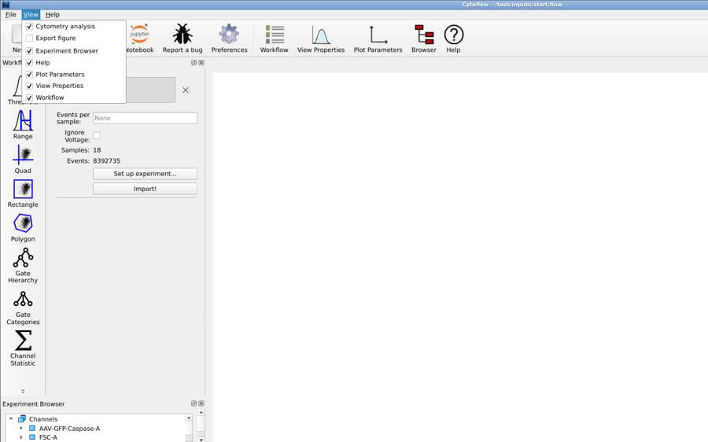
cu key Escape; sleep 0.5; cu click 700 9 double; sleep 2; cu screenshot /tmp/screen.png
{
"file_path": "/tmp/screen.png"
}/tmp/screen.png
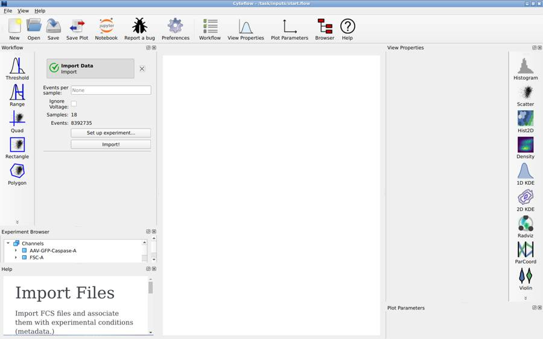
cu click 408 713; sleep 1; cu click 1393 250; sleep 2; cu screenshot /tmp/screen.png
{
"file_path": "/tmp/screen.png"
}/tmp/screen.png
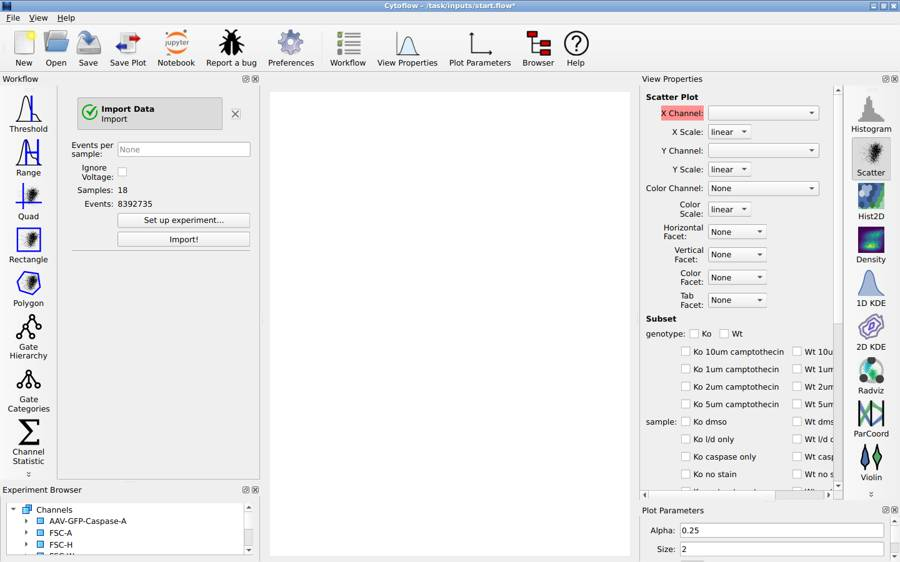
cu click 1393 390; sleep 2; cu screenshot /tmp/screen.png
{
"file_path": "/tmp/screen.png"
}/tmp/screen.png
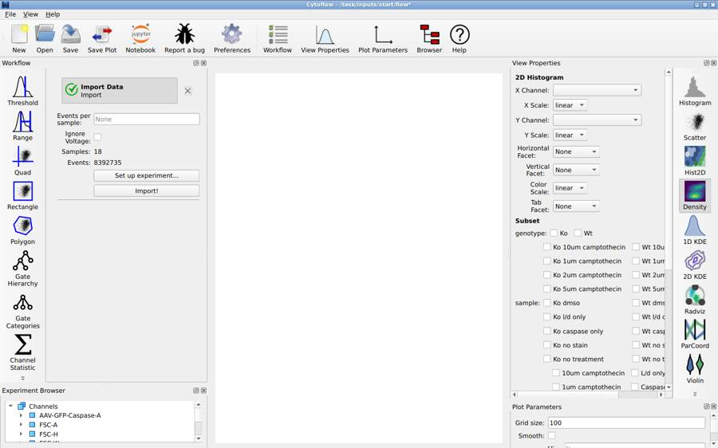
cu click 1197 181; sleep 1; cu screenshot /tmp/screen.png
{
"file_path": "/tmp/screen.png"
}/tmp/screen.png
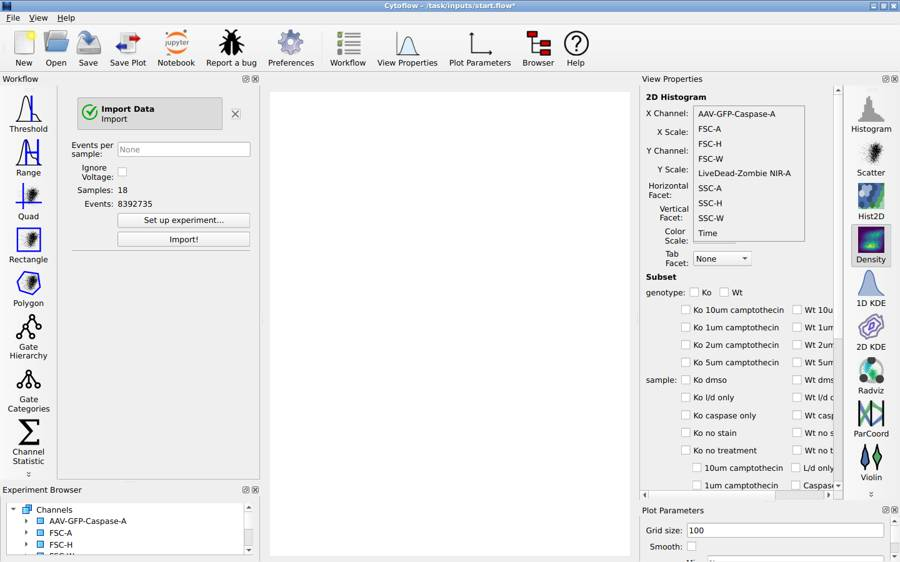
cu click 1135 206; sleep 1; cu click 1197 241; sleep 1; cu screenshot /tmp/screen.png
{
"file_path": "/tmp/screen.png"
}/tmp/screen.png
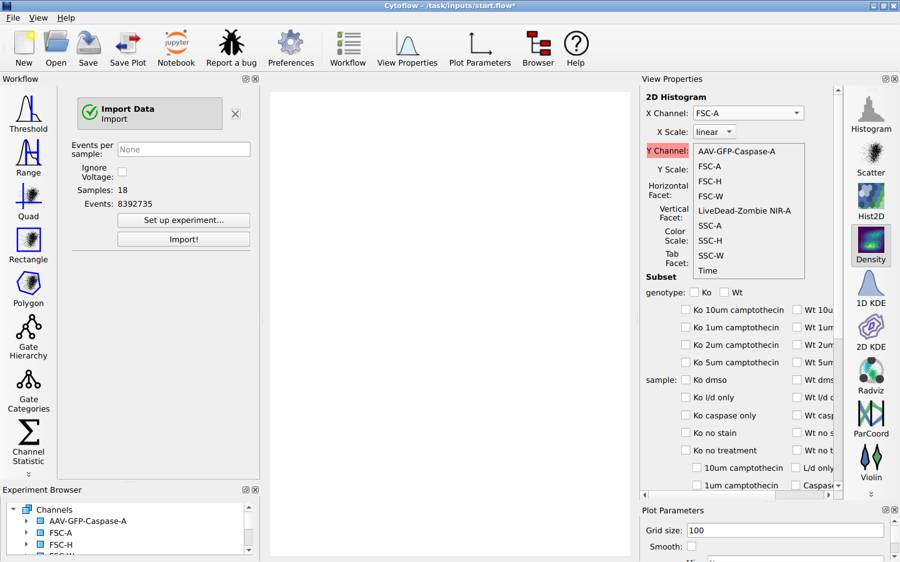
cu click 1135 361; sleep 1; cu click 1155 414; sleep 1; cu screenshot /tmp/screen.png
{
"file_path": "/tmp/screen.png"
}/tmp/screen.png
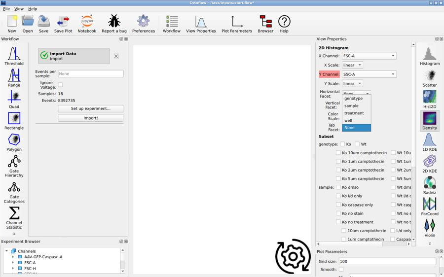
cu click 1155 414; sleep 15; cu screenshot /tmp/screen.png
{
"file_path": "/tmp/screen.png"
}/tmp/screen.png
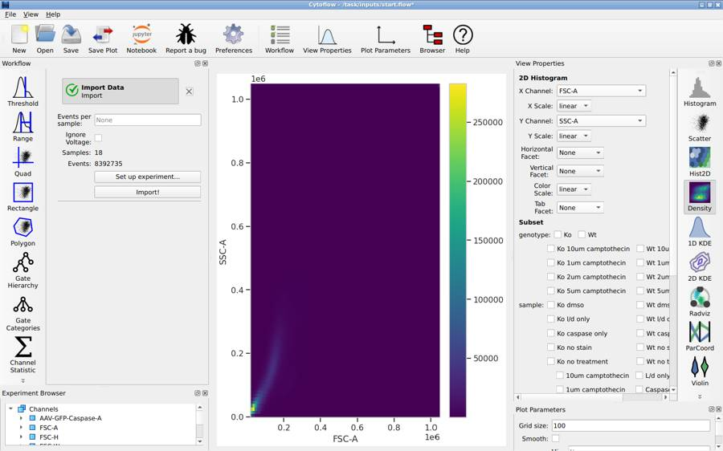
cu click 1140 377; sleep 1; cu screenshot /tmp/screen.png
{
"file_path": "/tmp/screen.png"
}/tmp/screen.png
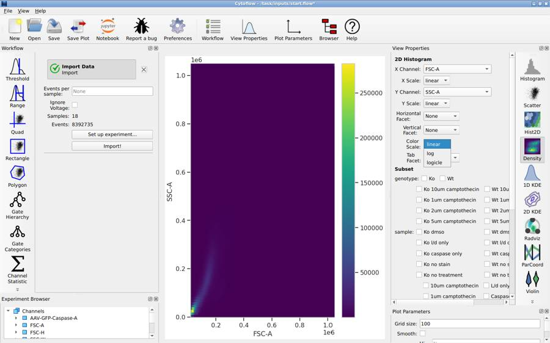
cu click 1127 402; sleep 15; cu screenshot /tmp/screen.png
{
"file_path": "/tmp/screen.png"
}/tmp/screen.png
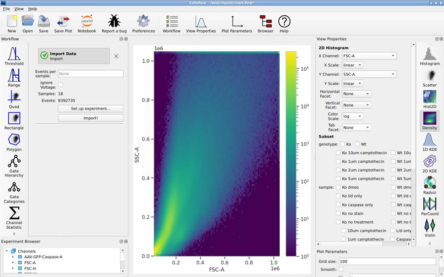
thinking
The pooled FSC-A vs SSC-A scatter shows a debris cluster near the origin and events piled at the top of the SSC range. I'm switching to log axes next to separate cells from debris.
cu click 1140 211; sleep 1; cu screenshot /tmp/screen.png
{
"file_path": "/tmp/screen.png"
}/tmp/screen.png
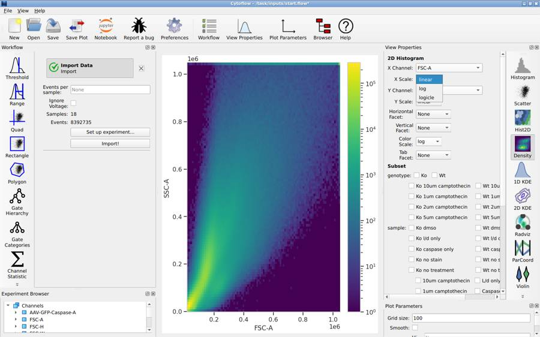
cu click 1127 236; sleep 3; cu click 1140 271; sleep 1; cu screenshot /tmp/screen.png
{
"file_path": "/tmp/screen.png"
}/tmp/screen.png
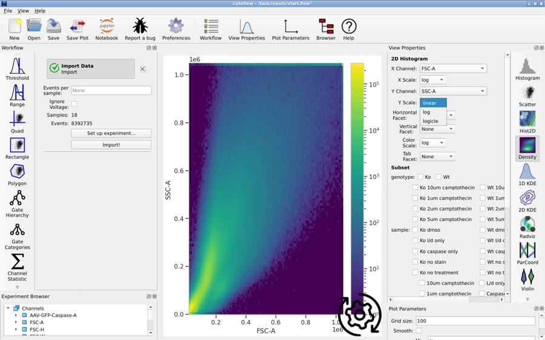
cu click 1127 296; sleep 20; cu screenshot /tmp/screen.png
{
"file_path": "/tmp/screen.png"
}/tmp/screen.png
cu click 1140 211; sleep 1; cu click 1135 212; sleep 20; cu screenshot /tmp/screen.png
{
"file_path": "/tmp/screen.png"
}/tmp/screen.png
cu click 1140 211; sleep 1; cu screenshot /tmp/screen.png
{
"file_path": "/tmp/screen.png"
}/tmp/screen.png
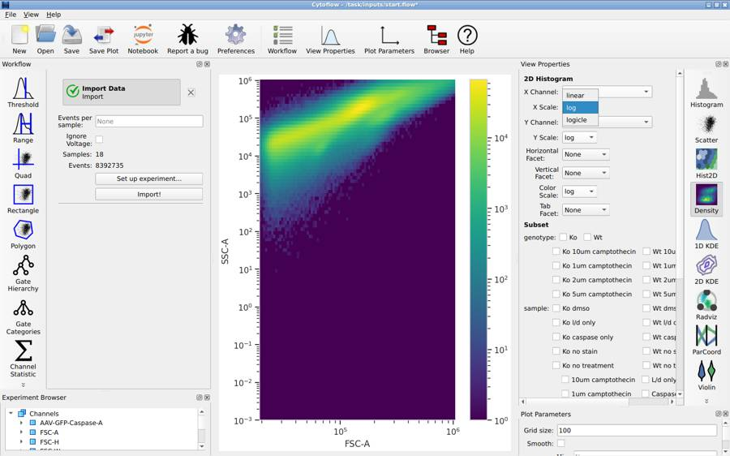
cu click 1135 188; sleep 1; cu click 1140 271; sleep 1; cu screenshot /tmp/screen.png
{
"file_path": "/tmp/screen.png"
}/tmp/screen.png
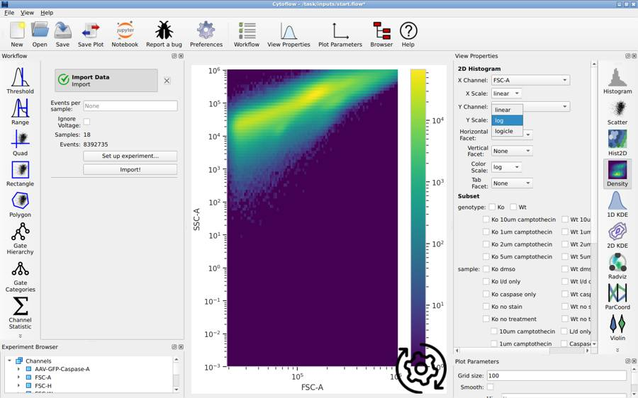
cu click 1135 272; sleep 25; cu screenshot /tmp/screen.png
{
"file_path": "/tmp/screen.png"
}/tmp/screen.png
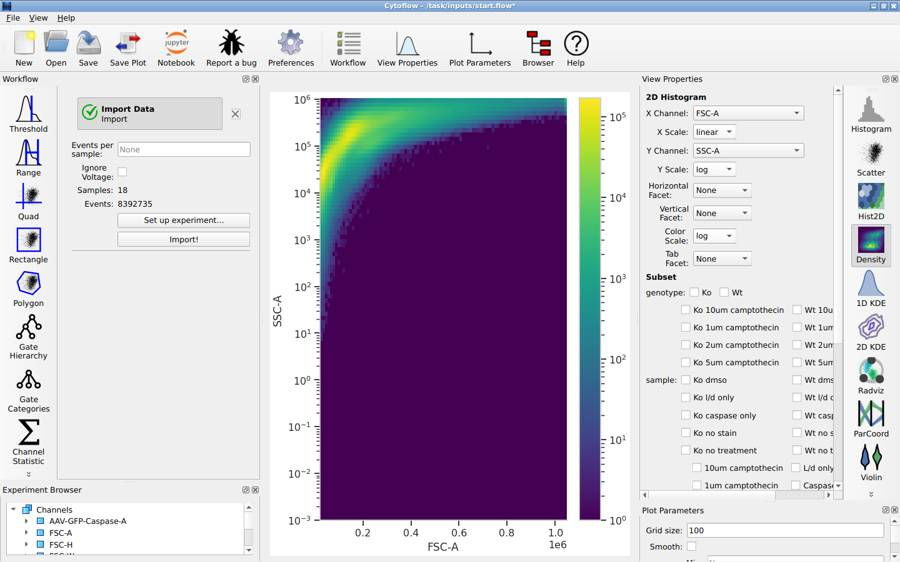
cu drag 1230 804 1230 430; sleep 1; cu screenshot /tmp/screen.png
{
"file_path": "/tmp/screen.png"
}/tmp/screen.png
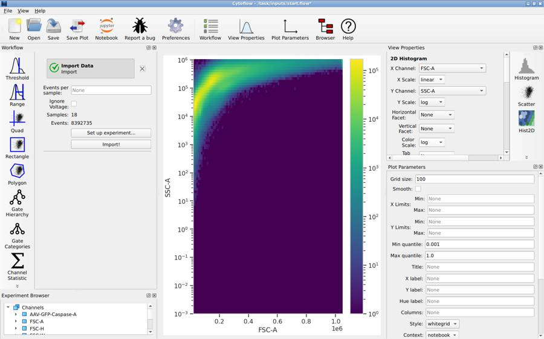
cu click 1270 588; cu type "1000"; cu key Return; sleep 1; cu click 1270 618; cu type "1100000"; cu key Return; sleep 20; cu screenshot /tmp/screen.png
{
"file_path": "/tmp/screen.png"
}/tmp/screen.png
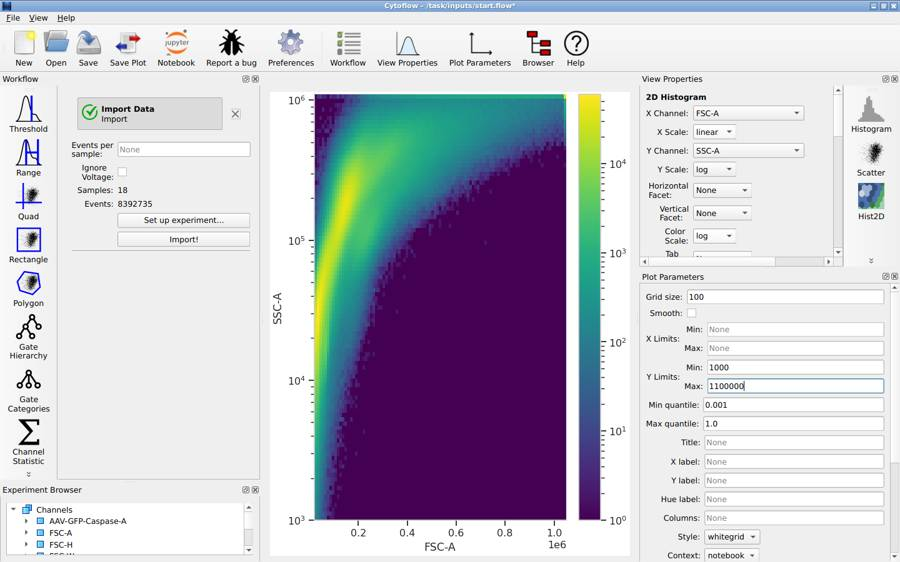
cu click 1140 211; sleep 1; cu click 1135 236; sleep 1; cu click 1270 527; cu type "20000"; cu key Return; sleep 1; cu click 1270 557; cu type "1100000"; cu key Return; sleep 25; cu screenshot /tmp/screen.png
{
"file_path": "/tmp/screen.png"
}/tmp/screen.png
cu click 1155 304; sleep 1; cu screenshot /tmp/screen.png
{
"file_path": "/tmp/screen.png"
}/tmp/screen.png
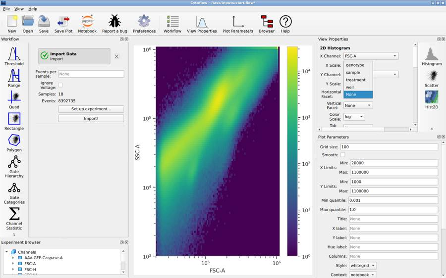
cu click 1130 282; sleep 1; cu click 1270 829; cu type "6"; cu key Return; sleep 40; cu screenshot /tmp/screen.png
{
"file_path": "/tmp/screen.png"
}/tmp/screen.png
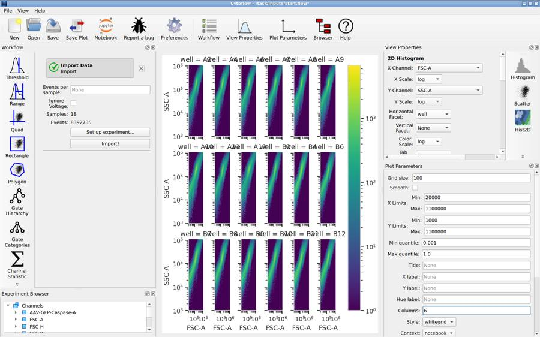
cu click 204 75; sleep 2; cu screenshot /tmp/screen.png
{
"file_path": "/tmp/screen.png"
}/tmp/screen.png
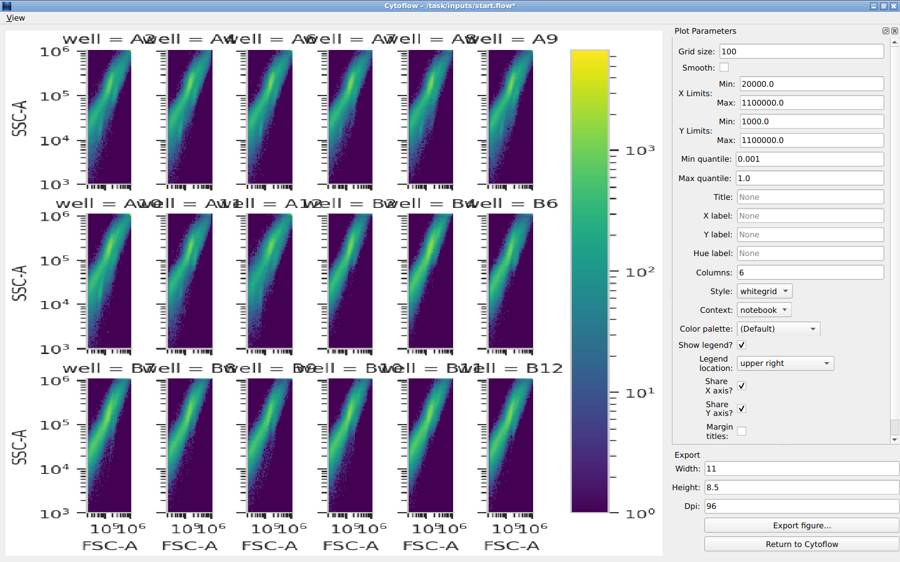
cu click 1282 750; cu key ctrl+a; cu type "20"; cu key Tab; cu click 1282 780; cu key ctrl+a; cu type "12"; cu key Tab; cu click 1282 810; cu key ctrl+a; cu type "80"; cu key Tab; sleep 1; cu click 1220 496; sleep 1; cu screenshot /tmp/screen.png
{
"file_path": "/tmp/screen.png"
}/tmp/screen.png
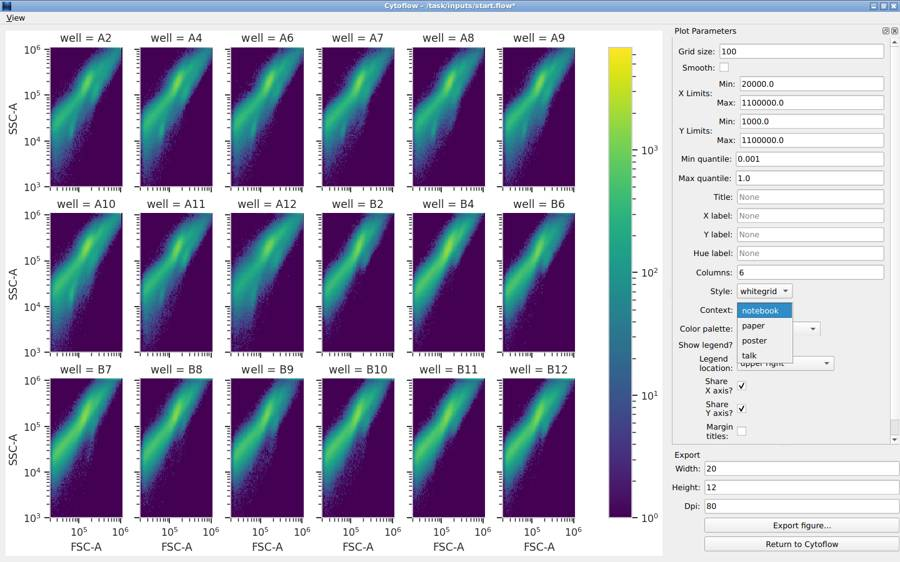
cu key Escape; sleep 0.5; cu click 1282 871; sleep 2; cu screenshot /tmp/screen.png
{
"file_path": "/tmp/screen.png"
}/tmp/screen.png
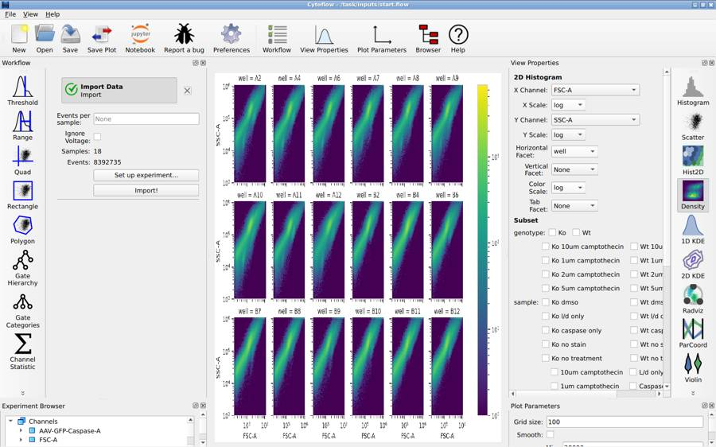
cu click 1197 181; sleep 1; cu click 1180 182; sleep 1; cu click 1197 241; sleep 1; cu screenshot /tmp/screen.png
{
"file_path": "/tmp/screen.png"
}/tmp/screen.png
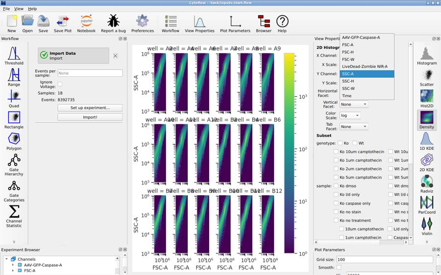
cu click 1190 217; sleep 1; cu screenshot /tmp/screen.png
{
"file_path": "/tmp/screen.png"
}/tmp/screen.png
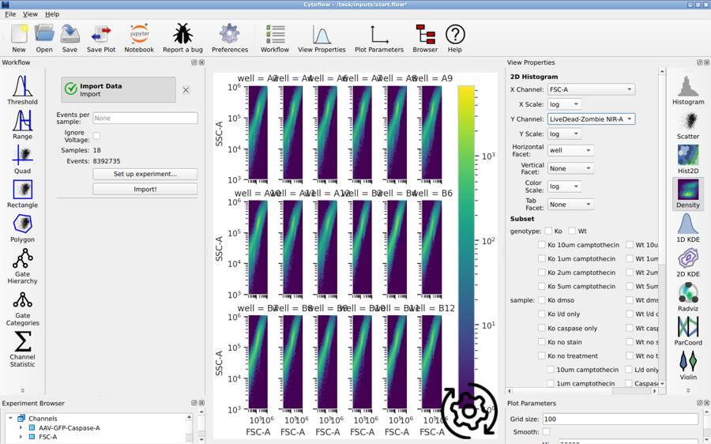
cu click 1197 181; sleep 1; cu screenshot /tmp/screen.png
{
"file_path": "/tmp/screen.png"
}/tmp/screen.png
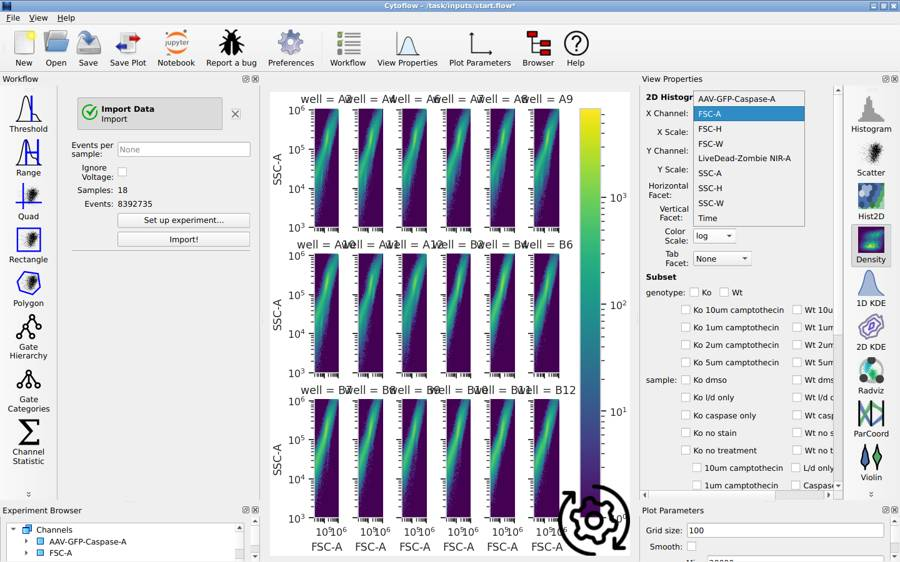
cu click 1180 158; sleep 1; cu click 1140 211; sleep 1; cu screenshot /tmp/screen.png
{
"file_path": "/tmp/screen.png"
}/tmp/screen.png
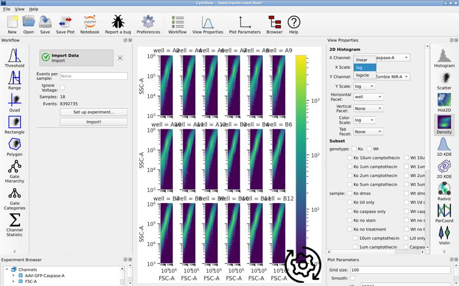
cu click 1137 236; sleep 1; cu click 1140 271; sleep 1; cu screenshot /tmp/screen.png
{
"file_path": "/tmp/screen.png"
}/tmp/screen.png
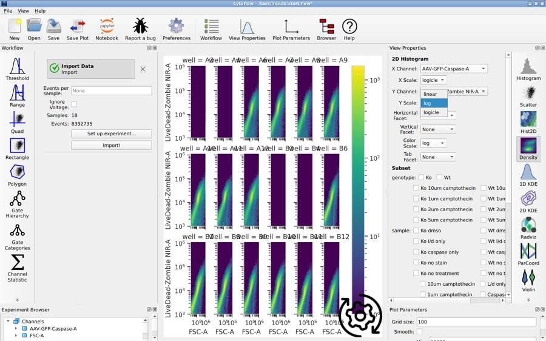
cu click 1137 296; sleep 2; cu drag 1230 804 1230 430; sleep 1; cu screenshot /tmp/screen.png
{
"file_path": "/tmp/screen.png"
}/tmp/screen.png

sleep 30; cu drag 1230 804 1230 430; sleep 1; cu screenshot /tmp/screen.png
<tool_use_error>Blocked: sleep 30 followed by: cu drag 1230 804 1230 430 sleep 1 cu screenshot /tmp/screen.png. To wait for a condition, use Monitor with an until-loop (e.g. `until <check>; do sleep 2; done`). To wait for a command you started, use run_in_background: true. Do not chain shorter sleeps to work around this block.</tool_use_error>
{
"file_path": "/tmp/screen.png"
}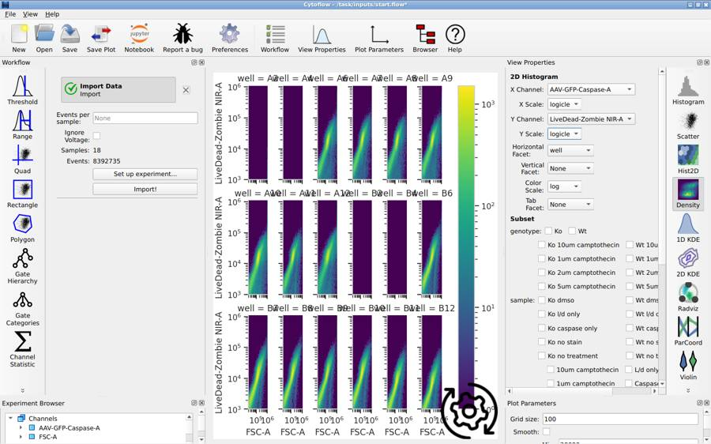
cat > /tmp/waitidle.sh << 'EOF'
#!/bin/bash
# wait until two consecutive screenshots 2s apart are identical (spinner animates when busy)
prev=/tmp/_w1.png; cur=/tmp/_w2.png
cu screenshot $prev >/dev/null
n=0
until [ $n -ge ${1:-60} ]; do
sleep 2
cu screenshot $cur >/dev/null
if cmp -s $prev $cur; then break; fi
mv $cur $prev; n=$((n+1))
done
cp $cur /tmp/screen.png
echo "waited $((n*2+2))s"
EOF
chmod +x /tmp/waitidle.sh; /tmp/waitidle.shwaited 2s
{
"file_path": "/tmp/screen.png"
}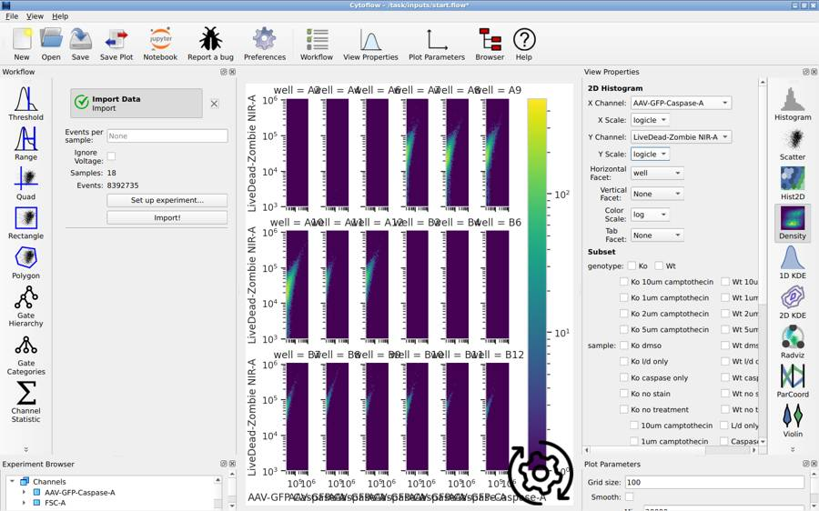
python3 -c "
from PIL import Image
im=Image.open('/tmp/screen.png').convert('RGB')
for x,y in [(950,832),(930,832),(921,832),(950,790),(950,800),(900,800),(1000,860),(905,860)]:
print(x,y,im.getpixel((x,y)))
"950 832 (255, 255, 255) 930 832 (255, 255, 255) 921 832 (0, 0, 0) 950 790 (72, 23, 105) 950 800 (0, 0, 0) 900 800 (255, 255, 255) 1000 860 (51, 51, 51) 905 860 (11, 11, 11)
cat > /tmp/busy.py << 'EOF'
import sys
from PIL import Image
im=Image.open(sys.argv[1]).convert('RGB')
n=0
for x in range(895,1005):
for y in range(775,890):
if im.getpixel((x,y))==(0,0,0): n+=1
print(n)
EOF
cat > /tmp/waitidle.sh << 'EOF'
#!/bin/bash
# wait until Cytoflow busy spinner (black gear, bottom-right of plot) disappears
n=0
until [ $n -ge ${1:-90} ]; do
cu screenshot /tmp/screen.png >/dev/null
b=$(python3 /tmp/busy.py /tmp/screen.png)
if [ "$b" -lt ${2:-300} ]; then break; fi
sleep 2; n=$((n+1))
done
echo "waited ~$((n*3))s, blackpix=$b"
EOF
python3 /tmp/busy.py /tmp/screen.png; /tmp/waitidle.sh2180 waited ~0s, blackpix=0
{
"file_path": "/tmp/screen.png"
}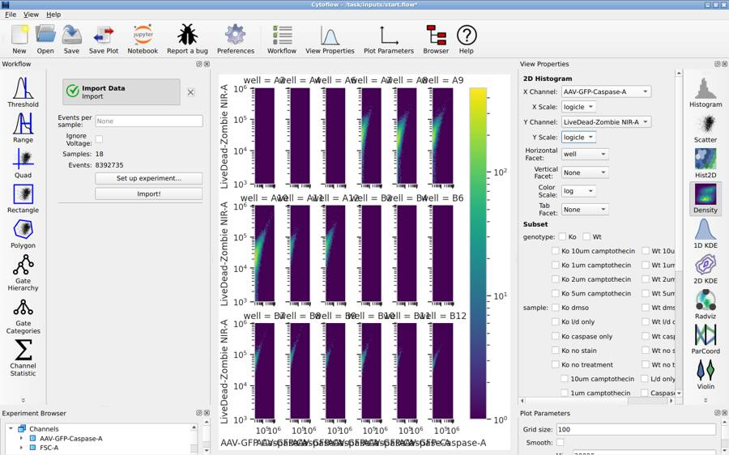
cu drag 1230 804 1230 430; sleep 1; cu screenshot /tmp/screen.png
{
"file_path": "/tmp/screen.png"
}/tmp/screen.png
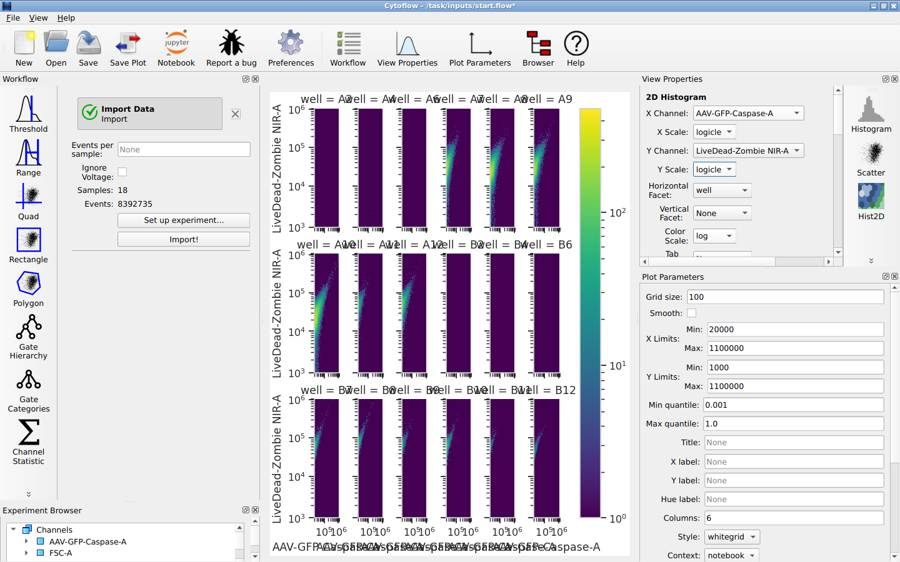
for y in 527 557 588 618; do cu click 1270 $y; cu key ctrl+a; cu key BackSpace; cu key Return; sleep 0.5; done; /tmp/waitidle.sh;
{
"file_path": "/tmp/screen.png"
}waited ~108s, blackpix=0
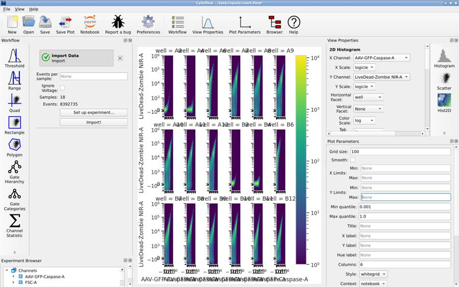
cu click 204 75; /tmp/waitidle.sh;
{
"file_path": "/tmp/screen.png"
}waited ~0s, blackpix=0
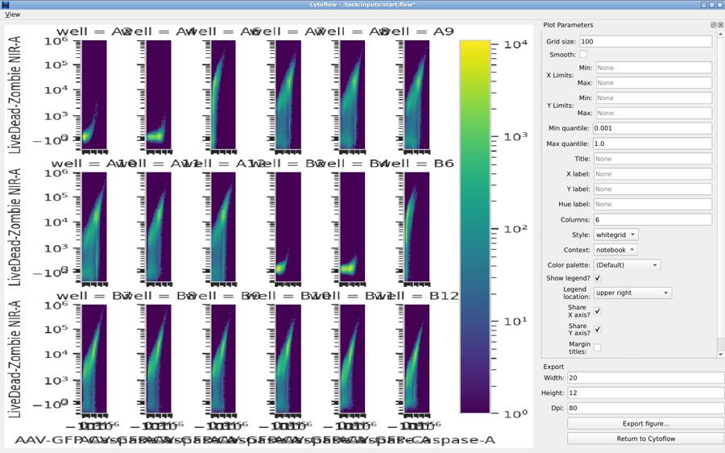
thinking
The caspase-vs-Zombie plot shows each stain in its own channel, with the "L/D only" wells Zombie-bright and most fully stained events Zombie-positive. I'm exporting a larger version to look more closely at the "caspase only" wells.
cu click 1282 750; cu key ctrl+a; cu type "24"; cu key Tab; cu click 1282 780; cu key ctrl+a; cu type "13"; cu key Tab; cu click 1282 810; cu key ctrl+a; cu type "70"; cu key Tab; cu click 1282 841; sleep 2; cu screenshot /tmp/screen.png
{
"file_path": "/tmp/screen.png"
}/tmp/screen.png
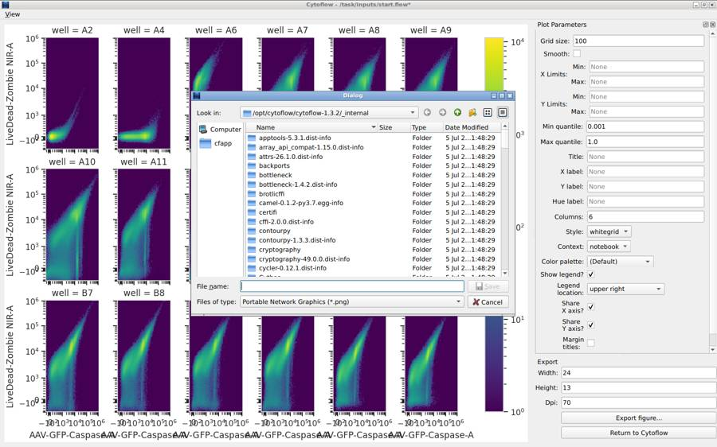
mkdir -p /tmp/cf; cu click 706 576; cu paste "/tmp/cf/cas_zom_all.png"; cu key Return; sleep 3; /tmp/waitidle.sh; ls -la /tmp/cf
{
"file_path": "/tmp/cf/cas_zom_all.png"
}waited ~0s, blackpix=0 total 8 drwxr-xr-x 2 root root 4096 Nov 6 00:43 . drwxrwxrwx 9 root root 4096 Nov 6 00:43 ..
File does not exist. Note: your current working directory is /task.
cu screenshot /tmp/screen.png; ls -la /tmp/cf
/tmp/screen.png total 8 drwxr-xr-x 2 root root 4096 Nov 6 00:43 . drwxrwxrwx 9 root root 4096 Nov 6 00:43 ..
{
"file_path": "/tmp/screen.png"
}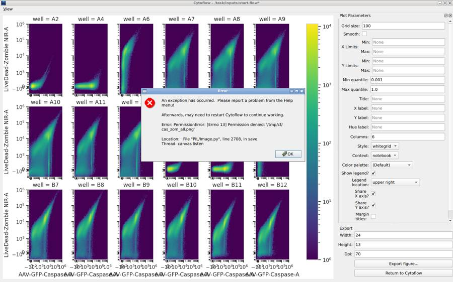
chmod 777 /tmp/cf; cu click 915 491; sleep 1; cu click 1282 841; sleep 2; cu click 706 576; cu paste "/tmp/cf/cas_zom_all.png"; cu key Return; sleep 3; /tmp/waitidle.sh; ls -la /tmp/cf
waited ~0s, blackpix=0 total 8 drwxrwxrwx 2 root root 4096 Nov 6 00:43 . drwxrwxrwx 9 root root 4096 Nov 6 00:43 ..
cu screenshot /tmp/screen.png; ls -la /tmp/cf
/tmp/screen.png total 224 drwxrwxrwx 2 root root 4096 Nov 6 00:43 . drwxrwxrwx 9 root root 4096 Nov 6 00:43 .. -rw-rw-r-- 1 cfapp cfapp 218714 Nov 6 00:43 cas_zom_all.png
{
"file_path": "/tmp/screen.png"
}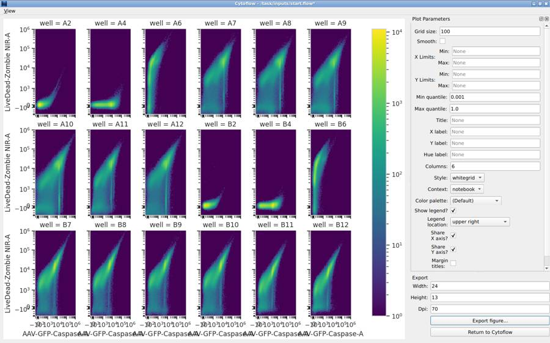
thinking
The export is working, and the controls check out: no-stain wells are dim, caspase-only wells light up BL1 alone, and L/D-only wells light up RL3 alone. So BL1 is the caspase channel despite its outdated label. Next I'll check event rate over time for clogs before building the gates.
cu click 1282 871; sleep 2; cu click 1393 180; sleep 2; cu screenshot /tmp/screen.png
{
"file_path": "/tmp/screen.png"
}/tmp/screen.png
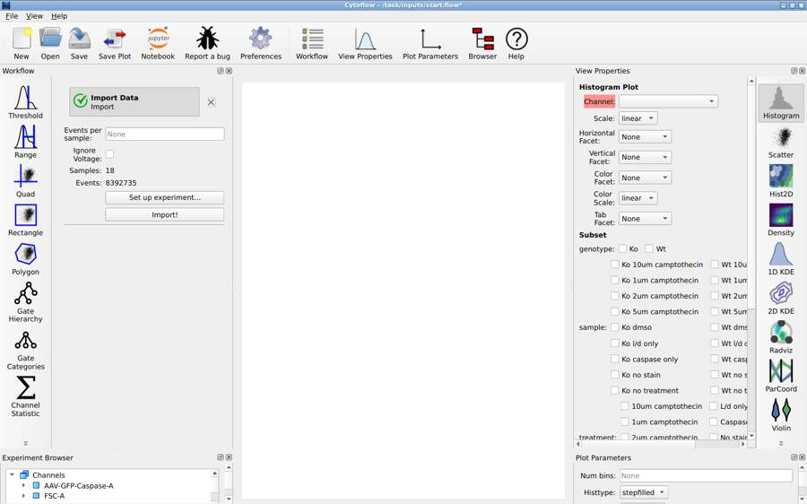
cu click 1192 181; sleep 1; cu screenshot /tmp/screen.png
{
"file_path": "/tmp/screen.png"
}/tmp/screen.png
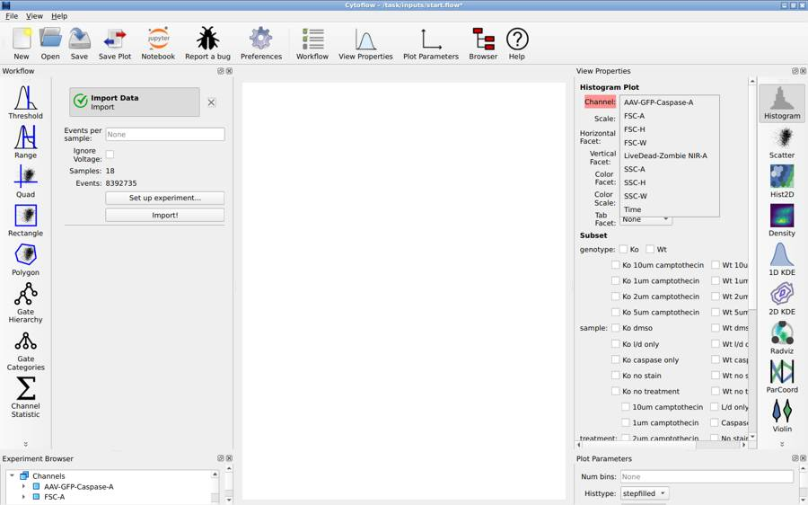
cu click 1127 373; sleep 1; cu click 1150 244; sleep 1; cu screenshot /tmp/screen.png
{
"file_path": "/tmp/screen.png"
}/tmp/screen.png
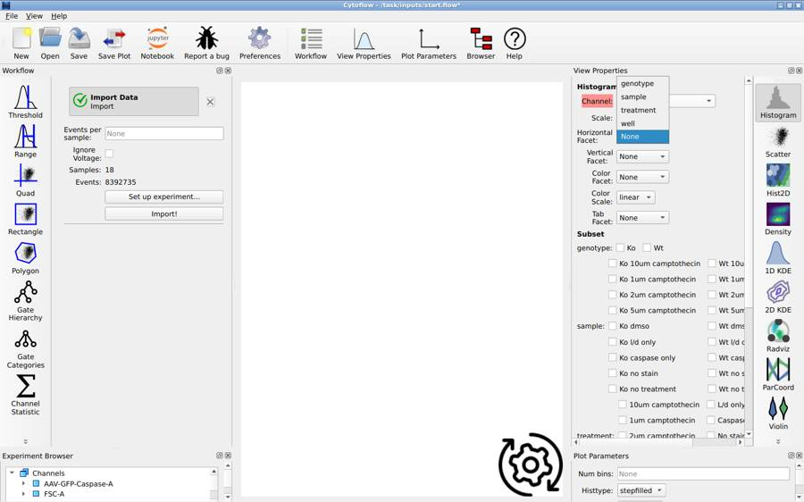
cu click 1125 221; sleep 1; /tmp/waitidle.sh
{
"file_path": "/tmp/screen.png"
}waited ~15s, blackpix=0
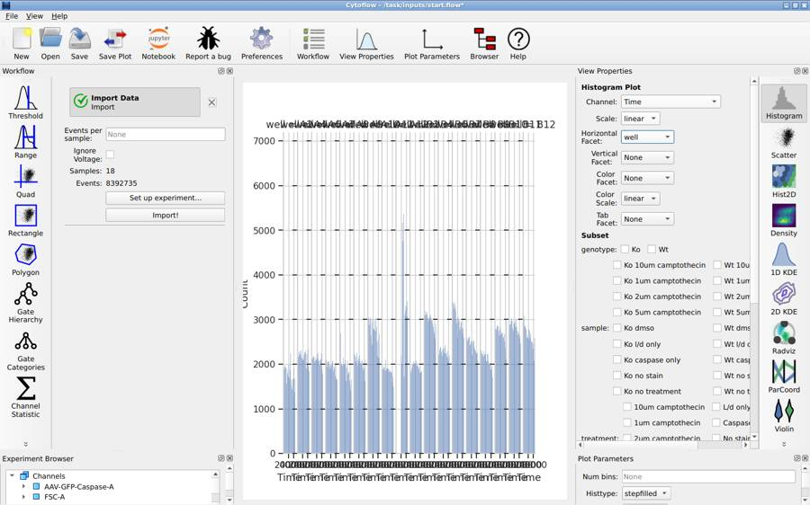
cu drag 1230 804 1230 430; sleep 1; cu screenshot /tmp/screen.png
{
"file_path": "/tmp/screen.png"
}/tmp/screen.png
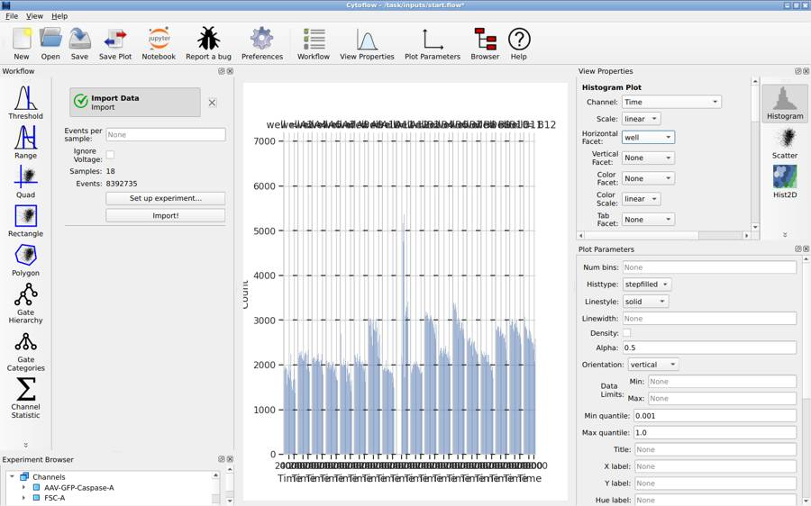
cu click 1268 739; cu key ctrl+a; cu type "0"; cu key Return; cu scroll 1220 700 down 5; sleep 1; cu screenshot /tmp/screen.png
{
"file_path": "/tmp/screen.png"
}/tmp/screen.png
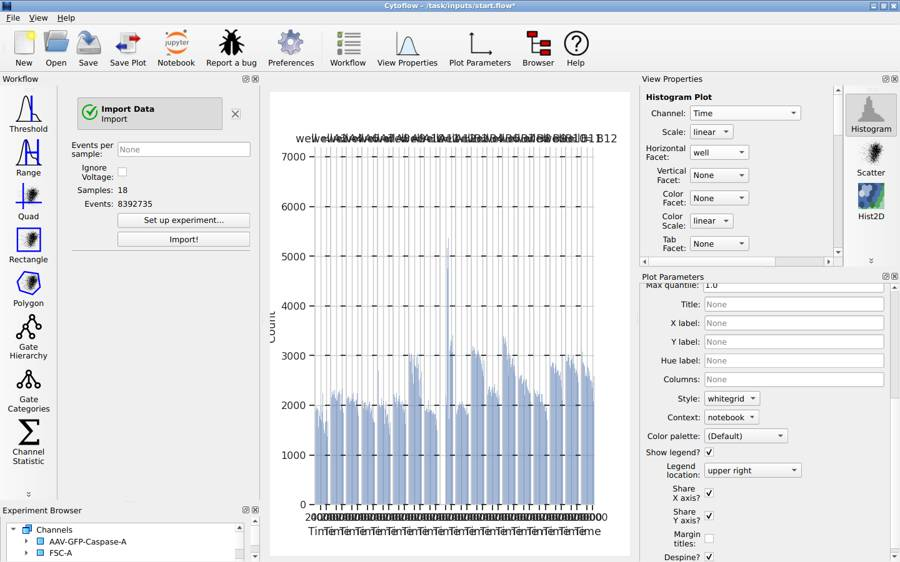
cu click 1268 607; cu type "6"; cu key Return; sleep 2; /tmp/waitidle.sh
{
"file_path": "/tmp/screen.png"
}waited ~12s, blackpix=0
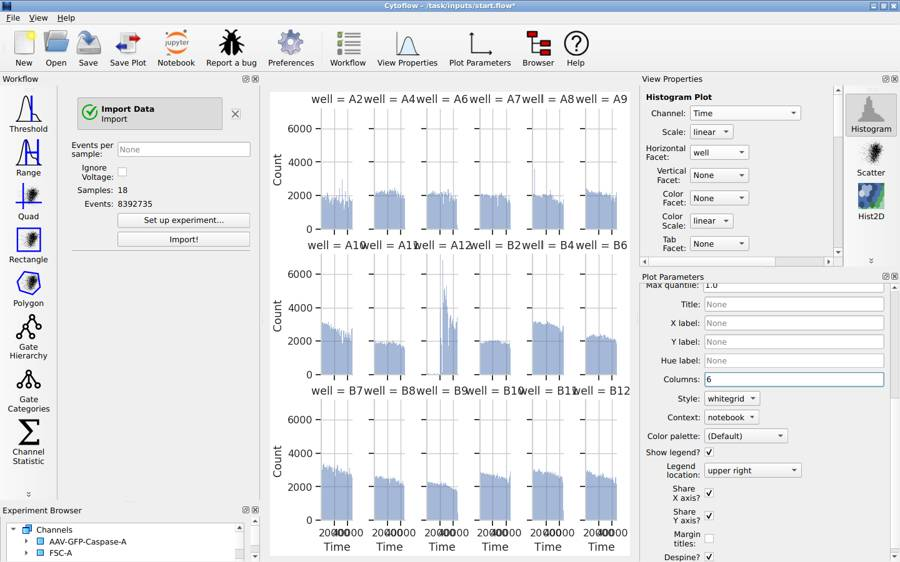
cu click 204 75; sleep 3; /tmp/waitidle.sh
{
"file_path": "/tmp/screen.png"
}waited ~0s, blackpix=0
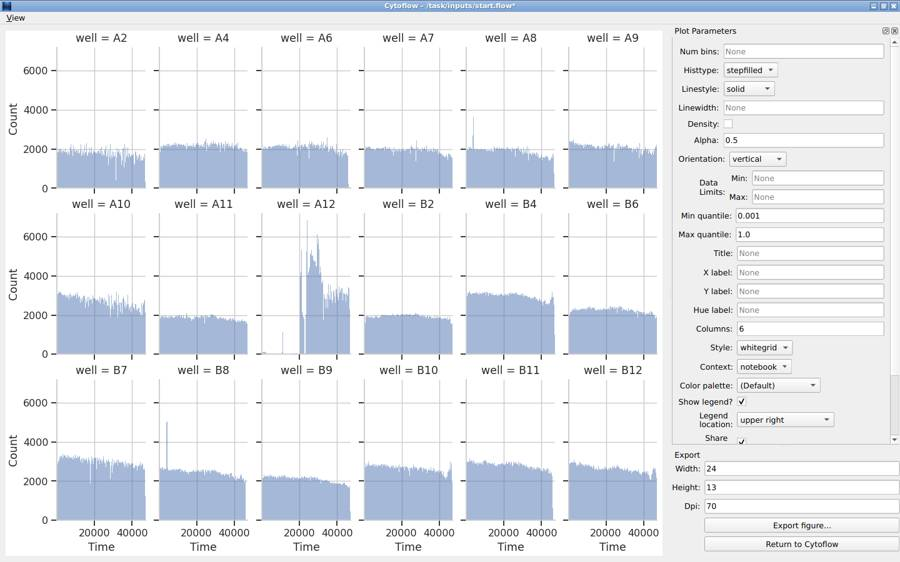
cu click 1282 841; sleep 2; cu click 706 576; cu paste "/tmp/cf/time_by_well.png"; cu key Return; sleep 4; /tmp/waitidle.sh; ls /tmp/cf
waited ~0s, blackpix=0 cas_zom_all.png time_by_well.png
cu click 1282 871; sleep 2; cu click 1393 250; sleep 2; cu screenshot /tmp/screen.png
{
"file_path": "/tmp/screen.png"
}/tmp/screen.png
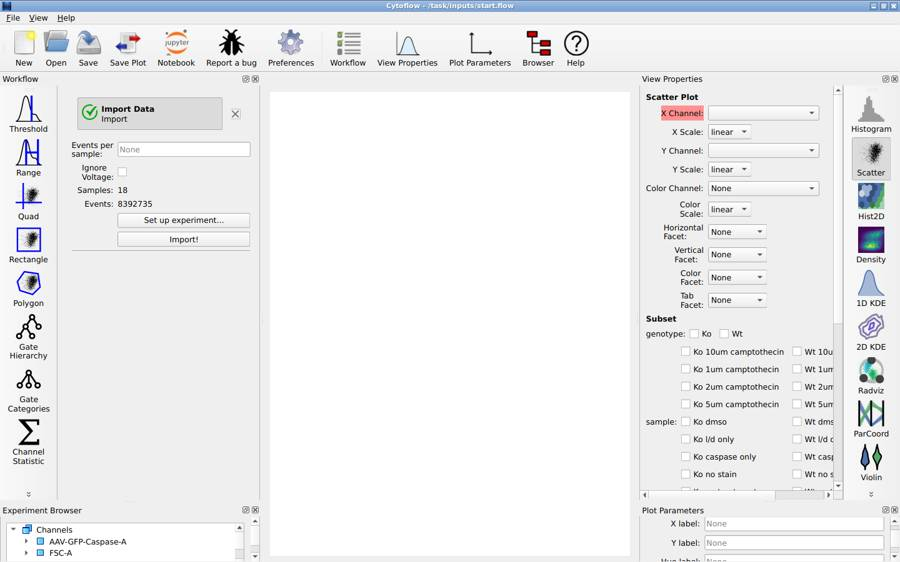
cu click 1275 675; sleep 1; cu click 1220 181; sleep 1; cu screenshot /tmp/screen.png
{
"file_path": "/tmp/screen.png"
}/tmp/screen.png
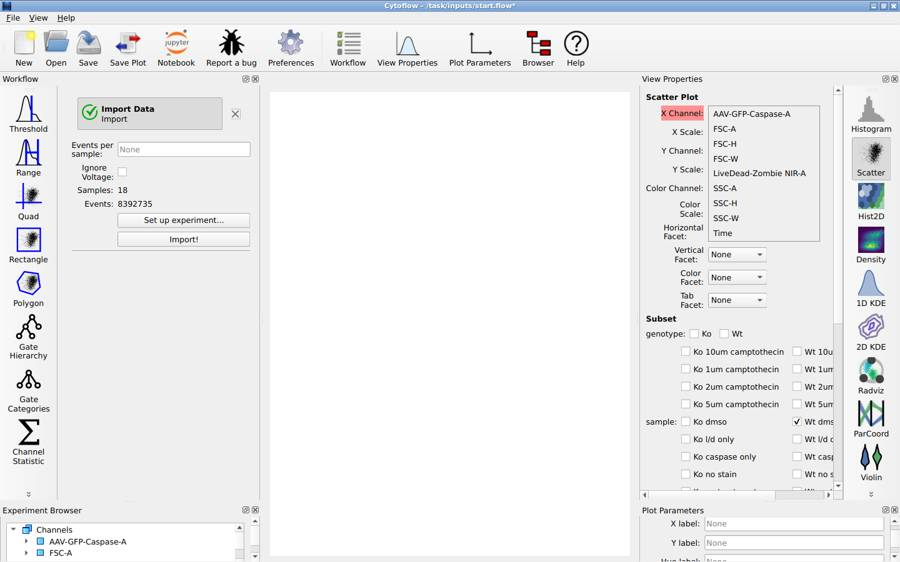
cu click 1160 206; sleep 1; cu click 1220 241; sleep 1; cu screenshot /tmp/screen.png
{
"file_path": "/tmp/screen.png"
}/tmp/screen.png
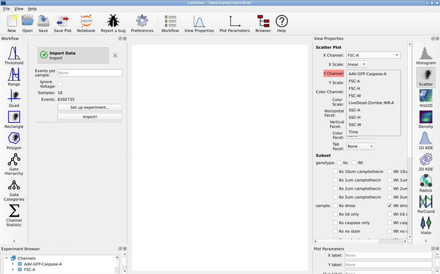
cu click 1160 361; sleep 1; cu click 1220 301; sleep 1; cu screenshot /tmp/screen.png
{
"file_path": "/tmp/screen.png"
}/tmp/screen.png
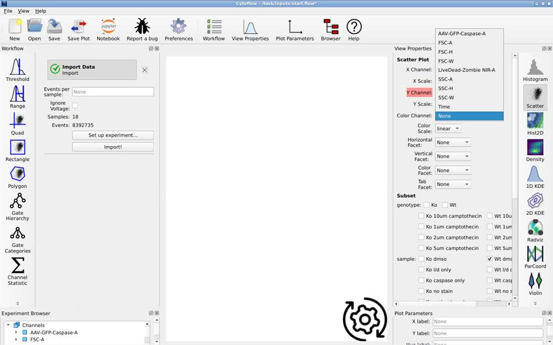
cu click 1215 182; sleep 1; cu click 1165 335; sleep 1; cu screenshot /tmp/screen.png
{
"file_path": "/tmp/screen.png"
}/tmp/screen.png
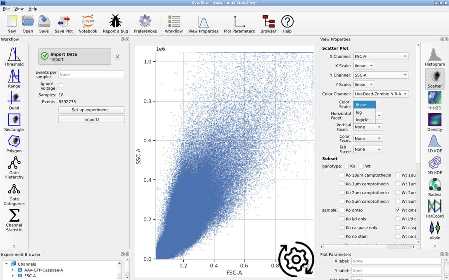
cu click 1160 384; sleep 2; cu click 1165 211; sleep 1; cu screenshot /tmp/screen.png
{
"file_path": "/tmp/screen.png"
}/tmp/screen.png
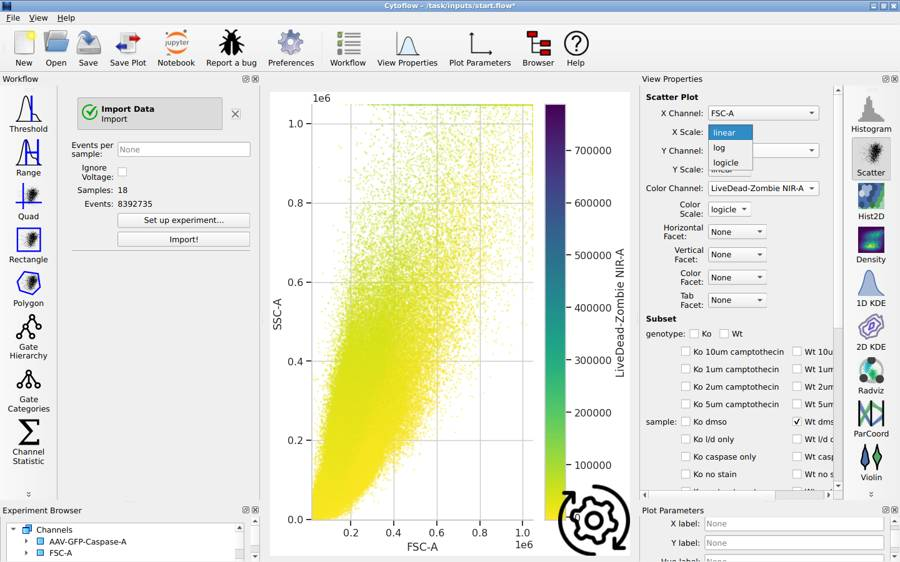
cu click 1150 236; sleep 2; cu click 1165 271; sleep 1; cu screenshot /tmp/screen.png
{
"file_path": "/tmp/screen.png"
}/tmp/screen.png
cu click 1150 296; sleep 2; /tmp/waitidle.sh
{
"file_path": "/tmp/screen.png"
}waited ~9s, blackpix=0
cu drag 1230 804 1230 430; sleep 1; cu scroll 1220 600 down 3; sleep 1; cu screenshot /tmp/screen.png
{
"file_path": "/tmp/screen.png"
}/tmp/screen.png
cu scroll 1220 600 up 10; sleep 1; cu screenshot /tmp/screen.png
{
"file_path": "/tmp/screen.png"
}/tmp/screen.png
cu click 1270 566; cu type "20000"; cu key Return; cu click 1270 596; cu type "1100000"; cu key Return; cu click 1270 626; cu type "1000"; cu key Return; cu click 1270 656; cu type "1100000"; cu key Return; sleep 2; /tmp/waitidle.sh
{
"file_path": "/tmp/screen.png"
}waited ~15s, blackpix=0
cu click 1220 301; sleep 1; cu screenshot /tmp/screen.png
{
"file_path": "/tmp/screen.png"
}/tmp/screen.png
cu click 1200 207; sleep 2; /tmp/waitidle.sh
{
"file_path": "/tmp/screen.png"
}waited ~6s, blackpix=0
thinking
The live cells sit along the lower edge of the main diagonal band, so I'm drawing the "cells" polygon over the band while excluding the debris corner near FSC-A 6×10⁴ and the saturated top edge.
cu click 45 460; sleep 2; cu screenshot /tmp/screen.png
{
"file_path": "/tmp/screen.png"
}/tmp/screen.png
cu click 295 322; cu type "cells"; cu key Tab; sleep 1; cu click 278 353; sleep 1; cu screenshot /tmp/screen.png
{
"file_path": "/tmp/screen.png"
}/tmp/screen.png
cu click 215 377; sleep 1; cu click 1098 471; sleep 0.5; cu click 1270 588; cu type "20000"; cu key Return; cu click 1270 618; cu type "1100000"; cu key Return; cu click 1270 648; cu type "1000"; cu key Return; cu click 1270 678; cu type "1100000"; cu key Return; sleep 1; cu click 1142 202; sleep 1; cu screenshot /tmp/screen.png
{
"file_path": "/tmp/screen.png"
}/tmp/screen.png
cu click 1127 228; sleep 1; for pair in "549:20000" "579:1100000" "609:1000" "640:1100000" "670:0.001"; do y=${pair%%:*}; v=${pair##*:}; cu click 1270 $y; cu key ctrl+a; cu type "$v"; cu key Return; sleep 0.3; done; cu click 1270 497; cu key ctrl+a; cu type "100"; cu key Return; sleep 1; cu click 1142 254; sleep 1; cu screenshot /tmp/screen.png{
"file_path": "/tmp/screen.png"
}/tmp/screen.png
cu click 1127 280; sleep 1; cu click 1142 288; sleep 1; cu screenshot /tmp/screen.png
{
"file_path": "/tmp/screen.png"
}/tmp/screen.png
cu click 1127 313; sleep 1; cu click 278 383; sleep 1; cu screenshot /tmp/screen.png
{
"file_path": "/tmp/screen.png"
}/tmp/screen.png
cu click 216 503; sleep 3; /tmp/waitidle.sh
{
"file_path": "/tmp/screen.png"
}Command did not complete within its 120s timeout and was moved to the background (ID: bxovwjtyj). Output is being written to: /tmp/claude-0/-task/a77e6cec-6467-4c63-8832-9b9fe34eb6ba/tasks/bxovwjtyj.output. You will be notified when it completes. If it is still running after 10m in the background, it will be stopped and you will be notified. It is running now: do not start a second copy while it runs. If it is no longer needed, stop it with TaskStop. No output had been read from it when it was moved. A program that buffers its output, or a pipe into one such as tail, can keep the output file empty until the command finishes. To check interim output, use Read on that file path.
{
"query": "select:TaskStop",
"max_results": 1
}{
"task_id": "bxovwjtyj"
}{"message":"Successfully stopped task: bxovwjtyj (cu click 216 503; sleep 3; /tmp/waitidle.sh)","task_id":"bxovwjtyj","task_type":"local_bash","command":"cu click 216 503; sleep 3; /tmp/waitidle.sh"}free -m; nproc; ps aux --sort=-rss | head -8 | cut -c1-200
total used free shared buff/cache available Mem: 7949 1007 6817 15 362 6942 Swap: 0 0 0 4 USER PID %CPU %MEM VSZ RSS TTY STAT START TIME COMMAND cfapp 844 0.6 4.9 3587984 402352 ? Sl 00:32 0:07 /opt/cytoflow/cytoflow-1.3.2/cytoflow root 1022 1.1 3.2 5684476 264580 ? Sl 00:33 0:13 claude --verbose --output-format=stream-json --effort xhigh --model claude-opus-5-5 --permission-mode=bypassPermissions --print root 818 0.1 0.5 235688 41444 ? S 00:32 0:01 Xvfb :1 -screen 0 1440x900x24 -nolisten tcp root 830 0.0 0.2 58956 23192 ? S 00:32 0:00 /usr/bin/python3 /usr/bin/websockify --web=/usr/share/novnc 6080 localhost:5900 cfapp 862 0.0 0.2 84344 22088 ? S 00:32 0:00 /opt/cytoflow/cytoflow-1.3.2/cytoflow -B -S -I -c from multiprocessing.resource_tracker import main;main(9) cfapp 929 0.0 0.1 5238932 14936 ? Sl 00:32 0:00 /opt/cytoflow/cytoflow-1.3.2/_internal/PyQt5/Qt5/libexec/QtWebEngineProcess --type=zygote --application-name=cytoflow --webengine-schem agent 837 0.0 0.1 143096 11060 ? Sl 00:32 0:00 openbox
cu click 915 461; sleep 2; cu screenshot /tmp/screen.png; ps aux | grep -c "[c]ytoflow"
{
"file_path": "/tmp/screen.png"
}/tmp/screen.png 8
ps -ef --forest | grep -v grep | grep -B2 -A2 cytoflow | cut -c1-220; cat /proc/844/environ 2>/dev/null | tr '\0' '\n' | grep -E "DISPLAY|HOME|USER|PATH" ; ls /etc/supervisor* /etc/systemd 2>/dev/null | head; which sudo su runuser
Exit code 1 root 830 815 0 00:32 ? 00:00:00 \_ /usr/bin/python3 /usr/bin/websockify --web=/usr/share/novnc 6080 localhost:5900 root 835 815 0 00:32 ? 00:00:00 \_ /bin/bash /entrypoint.sh sh -c sleep infinity root 836 835 0 00:32 ? 00:00:00 \_ runuser -u cfapp -- env DISPLAY=:1 HOME=/home/cfapp XDG_RUNTIME_DIR=/tmp/runtime-cfapp LANG=C.UTF-8 LC_ALL=C.UTF-8 bash -c umask 002; cd /task; exec start-cytof cfapp 838 836 0 00:32 ? 00:00:00 \_ /bin/bash /usr/local/bin/start-cytoflow cfapp 844 838 0 00:32 ? 00:00:07 \_ /opt/cytoflow/cytoflow-1.3.2/cytoflow cfapp 862 844 0 00:32 ? 00:00:00 \_ /opt/cytoflow/cytoflow-1.3.2/cytoflow -B -S -I -c from multiprocessing.resource_tracker import main;main(9) cfapp 891 844 0 00:32 ? 00:00:00 \_ /opt/cytoflow/cytoflow-1.3.2/_internal/PyQt5/Qt5/libexec/QtWebEngineProcess --type=zygote --no-zygote-sandbox --application-name=cytoflow --webengin cfapp 912 844 0 00:32 ? 00:00:00 \_ /opt/cytoflow/cytoflow-1.3.2/_internal/PyQt5/Qt5/libexec/QtWebEngineProcess --type=zygote --application-name=cytoflow --webengine-schemes=qrc:sLV -- cfapp 914 912 0 00:32 ? 00:00:00 \_ /opt/cytoflow/cytoflow-1.3.2/_internal/PyQt5/Qt5/libexec/QtWebEngineProcess --type=zygote --application-name=cytoflow --webengine-schemes=qrc:sL cfapp 929 914 0 00:32 ? 00:00:00 \_ /opt/cytoflow/cytoflow-1.3.2/_internal/PyQt5/Qt5/libexec/QtWebEngineProcess --type=zygote --application-name=cytoflow --webengine-schemes=qr root 1020 1 0 00:33 ? 00:00:00 su root -s /bin/bash -c set -o pipefail; export PATH=$HOME/.local/bin:$PATH; cd /task; IS_SANDBOX=1 CLAUDE_CODE_MAX_OUTPUT_TOKENS=128000 ANTHROPIC_MODEL=claude-opus-5-5 CLA root 1021 1020 0 00:33 ? 00:00:00 \_ bash -c set -o pipefail; export PATH=$HOME/.local/bin:$PATH; cd /task; IS_SANDBOX=1 CLAUDE_CODE_MAX_OUTPUT_TOKENS=128000 ANTHROPIC_MODEL=claude-opus-5-5 CLAUDE_CODE_EFF HOME=/home/cfapp PYTHONPATH=/pkg/:/root/ USER=cfapp DISPLAY=:1 PIP_ROOT_USER_ACTION=ignore MODAL_CONTAINER_ARGUMENTS_PATH=/__modal/.container-arguments/data.bin PATH=/usr/local/sbin:/usr/local/bin:/usr/sbin:/usr/bin:/sbin:/bin LD_LIBRARY_PATH=/opt/cytoflow/cytoflow-1.3.2/_internal /etc/systemd: system user /usr/bin/su /usr/sbin/runuser
cat /usr/local/bin/start-cytoflow; dmesg 2>/dev/null | tail -5; cat /sys/fs/cgroup/memory.max 2>/dev/null; cat /sys/fs/cgroup/memory.peak 2>/dev/null; cat /sys/fs/cgroup/memory.events 2>/dev/null
Exit code 1
#!/bin/bash
# Launch Cytoflow full-screen-ish; restart it if the agent closes it.
BIN=$(find /opt/cytoflow -maxdepth 3 -type f -name 'cytoflow' -perm -u+x | head -1)
[ -z "$BIN" ] && { echo "cytoflow binary not found under /opt/cytoflow"; exit 1; }
while true; do
"$BIN" >/tmp/cytoflow.log 2>&1
sleep 1
done
[ 1033.340312] [ 2437] 0 2437 1224 93 91 2 0 45056 0 0 bash
[ 1033.340364] [ 2442] 0 2442 1191 71 69 2 0 53248 0 0 waitidle.sh
[ 1033.340436] [ 2446] 0 2446 784 29 28 1 0 49152 0 0 sleep
[ 1033.340531] oom-kill:constraint=CONSTRAINT_NONE,nodemask=(null),cpuset=/,mems_allowed=0,global_oom,task_memcg=/,task=cytoflow,pid=864,uid=1002
[ 1033.340681] Out of memory: Killed process 864 (cytoflow) total-vm:8821516kB, anon-rss:7241300kB, file-rss:28kB, shmem-rss:28kB, UID:1002 pgtables:14812kB oom_score_adj:0thinking
The worker was OOM-killed at 7.2 GB on an 8 GB machine with no swap, so I'm restarting Cytoflow and redoing the steps, and from here on I'll keep plots to a few wells.
kill 844; sleep 8; ps aux | grep "[c]ytoflow-1.3.2/cytoflow$" | cut -c1-150; cu screenshot /tmp/screen.png
{
"file_path": "/tmp/screen.png"
}cfapp 2743 54.2 6.4 3671860 526300 ? Sl 00:52 0:03 /opt/cytoflow/cytoflow-1.3.2/cytoflow /tmp/screen.png

cu click 915 493; sleep 1; cu click 700 9 double; sleep 2; cu click 90 75; sleep 2; cu screenshot /tmp/screen.png
{
"file_path": "/tmp/screen.png"
}/tmp/screen.png
cu click 706 576; cu paste "/task/inputs/start.flow"; cu key Return; sleep 3; cu screenshot /tmp/screen.png
{
"file_path": "/tmp/screen.png"
}/tmp/screen.png

cu click 737 427; sleep 1; cu click 408 713; until ! python3 /tmp/busy.py /tmp/screen.png >/dev/null || [ $(cu screenshot /tmp/screen.png >/dev/null; python3 /tmp/busy.py /tmp/screen.png) -lt 300 ]; do sleep 3; done; ps aux | grep "[c]ytoflow -B -S -I -c from multiprocessing.spawn\|cytoflow.*remote" | head -3 | cut -c1-120; free -m | head -2
root 2880 0.0 0.0 4896 3596 ? Ss 00:53 0:00 /bin/bash -c source /root/.claude/shell-snapshots/snaps
root 2906 0.0 0.0 4896 2336 ? S 00:53 0:00 /bin/bash -c source /root/.claude/shell-snapshots/snaps
root 2909 0.0 0.0 1384356 7660 ? S 00:53 0:00 ugrep -G --ignore-files --hidden -I --exclude-dir=.git
total used free shared buff/cache available
Mem: 7949 2478 4517 14 1191 5470ps -eo pid,rss,cmd --sort=-rss | grep -i [c]ytoflow | head -4 | cut -c1-120; cu click 240 183; sleep 2; cu screenshot /tmp/screen.png
{
"file_path": "/tmp/screen.png"
}2756 1498064 /opt/cytoflow/cytoflow-1.3.2/cytoflow --multiprocessing-fork tracker_fd=10 pipe_handle=14 2743 525880 /opt/cytoflow/cytoflow-1.3.2/cytoflow 2820 72012 /opt/cytoflow/cytoflow-1.3.2/_internal/PyQt5/Qt5/libexec/QtWebEngineProcess --type=zygote --application-name 2803 47732 /opt/cytoflow/cytoflow-1.3.2/_internal/PyQt5/Qt5/libexec/QtWebEngineProcess --type=zygote --application-name /tmp/screen.png
ls -ld /task/outputs; id cfapp
drwxrwsrwx 2 agent task 4096 Nov 5 22:25 /task/outputs uid=1002(cfapp) gid=1003(cfapp) groups=1003(cfapp),1001(task)
cu click 45 460; sleep 2; cu click 295 322; cu type "cells"; cu key Tab; sleep 1; cu click 278 353; sleep 1; cu click 215 377; sleep 1; cu screenshot /tmp/screen.png
{
"file_path": "/tmp/screen.png"
}/tmp/screen.png
cu click 1097 482; cu click 1275 482; cu click 1097 370; cu click 1275 370; sleep 0.5; cu click 1142 202; sleep 1; cu click 1127 228; sleep 1; cu click 1142 254; sleep 1; cu click 1127 280; sleep 1; cu drag 1230 804 1230 430; sleep 1; cu screenshot /tmp/screen.png
{
"file_path": "/tmp/screen.png"
}/tmp/screen.png
cu click 1098 471; sleep 1; for pair in "549:20000" "579:1100000" "609:1000" "640:1100000"; do y=${pair%%:*}; v=${pair##*:}; cu click 1270 $y; cu key ctrl+a; cu type "$v"; cu key Return; sleep 0.3; done; cu screenshot /tmp/screen.png{
"file_path": "/tmp/screen.png"
}/tmp/screen.png
cu click 1270 497; cu key ctrl+a; cu type "100"; cu key Return; cu click 1142 288; sleep 1; cu click 1127 313; sleep 1; cu click 278 383; sleep 1; cu click 216 503; sleep 5; /tmp/waitidle.sh 40; ps -eo rss,cmd --sort=-rss | grep [m]ultiprocessing-fork | cut -c1-30
{
"file_path": "/tmp/screen.png"
}waited ~3s, blackpix=0 1518324 /opt/cytoflow/cytoflow
cu click 612 674; sleep 0.5; cu click 612 276; sleep 0.5; cu click 703 165; sleep 0.5; cu click 888 165; sleep 0.5; cu click 888 450; sleep 0.5; cu click 773 674 double; sleep 3; /tmp/waitidle.sh 40
{
"file_path": "/tmp/screen.png"
}waited ~0s, blackpix=0
cu click 612 674; sleep 3; /tmp/waitidle.sh 40
{
"file_path": "/tmp/screen.png"
}waited ~12s, blackpix=0
for p in "603 763" "603 277" "710 165" "888 165" "888 472" "788 763"; do cu click $p; sleep 0.4; done; cu click 603 763; sleep 3; /tmp/waitidle.sh 40
{
"file_path": "/tmp/screen.png"
}waited ~12s, blackpix=0
cu click 18 28; sleep 1; cu screenshot /tmp/screen.png
{
"file_path": "/tmp/screen.png"
}/tmp/screen.png
cu click 65 100; sleep 2; cu screenshot /tmp/screen.png
{
"file_path": "/tmp/screen.png"
}/tmp/screen.png
cu click 706 576; cu paste "/task/outputs/workflow.flow"; cu key Return; sleep 3; ls -la /task/outputs; grep -n "name:\|vertices" -A0 /task/outputs/workflow.flow | head; cu screenshot /tmp/screen.png
total 32 drwxrwsrwx 2 agent task 4096 Nov 6 00:56 . drwxr-xr-x 4 root root 4096 Nov 5 22:25 .. -rw-rw-r-- 1 cfapp task 21283 Nov 6 00:56 workflow.flow 20: name: null 47: name: null 81: name: null 115: name: null 138: fcs_name: AAV-GFP-Caspase-A 143: fcs_name: FSC-A 148: fcs_name: FSC-H 153: fcs_name: FSC-W 158: fcs_name: LiveDead-Zombie NIR-A 163: fcs_name: SSC-A /tmp/screen.png
sed -n 1,140p /task/outputs/workflow.flow; grep -n "polygon" -A20 /task/outputs/workflow.flow | head -60
- !workflow-item;5
channels:
- AAV-GFP-Caspase-A
- FSC-A
- FSC-H
- FSC-W
- LiveDead-Zombie NIR-A
- SSC-A
- SSC-H
- SSC-W
- Time
conditions:
genotype: !pandas-series;3
data:
- KO
- WT
dtype: object
index: !pandas-index;1
dtype: int64
name: null
values:
- 1
- 0
sample: !pandas-series;3
data:
- KO 10uM camptothecin
- KO 1uM camptothecin
- KO 2uM camptothecin
- KO 5uM camptothecin
- KO DMSO
- KO L/D only
- KO caspase only
- KO no stain
- KO no treatment
- WT 10uM camptothecin
- WT 1uM camptothecin
- WT 2uM camptothecin
- WT 5uM camptothecin
- WT DMSO
- WT L/D only
- WT caspase only
- WT no stain
- WT no treatment
dtype: object
index: !pandas-index;1
dtype: int64
name: null
values:
- 12
- 15
- 14
- 13
- 16
- 11
- 10
- 9
- 17
- 3
- 6
- 5
- 4
- 7
- 2
- 1
- 0
- 8
treatment: !pandas-series;3
data:
- 10uM camptothecin
- 1uM camptothecin
- 2uM camptothecin
- 5uM camptothecin
- DMSO
- L/D only
- caspase only
- no stain
- no treatment
dtype: object
index: !pandas-index;1
dtype: int64
name: null
values:
- 3
- 6
- 5
- 4
- 7
- 2
- 1
- 0
- 8
well: !pandas-series;3
data:
- A10
- A11
- A12
- A2
- A4
- A6
- A7
- A8
- A9
- B10
- B11
- B12
- B2
- B4
- B6
- B7
- B8
- B9
dtype: object
index: !pandas-index;1
dtype: int64
name: null
values:
- 6
- 7
- 8
- 0
- 1
- 2
- 3
- 4
- 5
- 15
- 16
- 17
- 9
- 10
- 11
- 12
- 13
- 14
current_view: null
metadata:
AAV-GFP-Caspase-A:
fcs_name: AAV-GFP-Caspase-A
range: 1048576.0
type: channel
684: current_view: &id002 !polygon-view;3
685- current_plot: null
686- huefacet: ''
687- huescale: log
688: op: &id001 !polygon;1
689- name: cells
690- vertices:
691- - !!python/tuple
692- - 54676.48971097748
693- - 1985.5997546150543
694- - !!python/tuple
695- - 54676.48971097748
696- - 300225.6077476067
697- - !!python/tuple
698- - 160456.90814395255
699- - 958295.0225797441
700- - !!python/tuple
701- - 958506.68663656
702- - 958295.0225797441
703- - !!python/tuple
704- - 958506.68663656
705- - 40243.143295575945
706- - !!python/tuple
707- - 351409.1977580873
708- - 1985.5997546150543
--
713: plot_params: !polygon-params;1
714- alpha: 0.25
715- col_wrap: null
716- density: true
717- despine: true
718- gridsize: 100
719- huelabel: ''
720- legend: true
721- marker: o
722- max_quantile: 1.0
723- min_quantile: 0.001
724- s: 2
725- sharex: true
726- sharey: true
727- smoothed: false
728- smoothed_sigma: 1.0
729- sns_context: notebook
730- sns_style: whitegrid
731- title: ''
732- xlabel: ''
733- xlim: !!python/tuplecu click 45 460; sleep 2; cu screenshot /tmp/screen.png
{
"file_path": "/tmp/screen.png"
}/tmp/screen.png
cu click 295 409; cu type "singlets"; cu key Tab; sleep 1; cu click 1098 471; sleep 0.5; cu click 1270 497; cu key ctrl+a; cu type "100"; cu key Return; cu click 1085 339; sleep 0.5; cu screenshot /tmp/screen.png
{
"file_path": "/tmp/screen.png"
}/tmp/screen.png
cu click 1142 288; sleep 1; cu click 1127 313; sleep 1; for pair in "549:0" "579:1050000" "609:0" "640:1050000"; do y=${pair%%:*}; v=${pair##*:}; cu click 1270 $y; cu key ctrl+a; cu type "$v"; cu key Return; sleep 0.3; done; cu click 278 439; sleep 1; cu click 215 463; sleep 1; cu click 278 469; sleep 1; cu screenshot /tmp/screen.png{
"file_path": "/tmp/screen.png"
}/tmp/screen.png
cu click 216 518; sleep 5; /tmp/waitidle.sh 40
{
"file_path": "/tmp/screen.png"
}waited ~6s, blackpix=0
cu click 1142 202; sleep 1; cu click 1127 228; sleep 1; cu click 1142 254; sleep 1; cu click 1127 280; sleep 1; for pair in "549:40000" "579:1100000" "609:20000" "640:700000"; do y=${pair%%:*}; v=${pair##*:}; cu click 1270 $y; cu key ctrl+a; cu type "$v"; cu key Return; sleep 0.3; done; sleep 3; /tmp/waitidle.sh 40{
"file_path": "/tmp/screen.png"
}waited ~42s, blackpix=0
for p in "540 540" "540 690" "880 283" "880 165" "855 165"; do cu click $p; sleep 0.4; done; cu click 540 540; sleep 3; /tmp/waitidle.sh 40
{
"file_path": "/tmp/screen.png"
}waited ~18s, blackpix=0
thinking
Singlets gate is drawn, excluding the doublet band below the main ridge. I'm saving it and setting up the live (Zombie-negative) gate using the single-stain controls as FMOs.
cu key ctrl+s; sleep 3; ls -la /task/outputs/; grep -c "name: singlets" /task/outputs/workflow.flow
total 40 drwxrwsrwx 2 agent task 4096 Nov 6 00:56 . drwxr-xr-x 4 root root 4096 Nov 5 22:25 .. -rw-rw-r-- 1 cfapp task 31579 Nov 6 00:59 workflow.flow 1
cu scroll 1393 500 down 5; sleep 1; cu screenshot /tmp/screen.png
{
"file_path": "/tmp/screen.png"
}/tmp/screen.png
cu click 1393 417; sleep 1; cu screenshot /tmp/screen.png
{
"file_path": "/tmp/screen.png"
}/tmp/screen.png
cu click 1238 448; sleep 2; cu screenshot /tmp/screen.png
{
"file_path": "/tmp/screen.png"
}/tmp/screen.png
cu drag 1230 432 1230 640; sleep 1; cu screenshot /tmp/screen.png
{
"file_path": "/tmp/screen.png"
}/tmp/screen.png
cu click 1197 181; sleep 1; cu click 1180 206; sleep 1; cu click 1197 241; sleep 1; cu screenshot /tmp/screen.png
{
"file_path": "/tmp/screen.png"
}/tmp/screen.png
cu click 1190 337; sleep 1; cu click 1197 181; sleep 1; cu screenshot /tmp/screen.png
{
"file_path": "/tmp/screen.png"
}/tmp/screen.png
cu click 1180 158; sleep 1; /tmp/waitidle.sh 40; cu screenshot /tmp/screen.png
{
"file_path": "/tmp/screen.png"
}waited ~120s, blackpix=2163 /tmp/screen.png
dmesg | grep -i "killed process" | tail -2; pkill -f "cytoflow-1.3.2/cytoflow$"; sleep 10; ps -eo pid,rss,cmd | grep "[c]ytoflow-1.3.2/cytoflow" | cut -c1-100
[ 1033.340681] Out of memory: Killed process 864 (cytoflow) total-vm:8821516kB, anon-rss:7241300kB, file-rss:28kB, shmem-rss:28kB, UID:1002 pgtables:14812kB oom_score_adj:0 [ 1673.829758] Out of memory: Killed process 2756 (cytoflow) total-vm:9211508kB, anon-rss:7227136kB, file-rss:8kB, shmem-rss:28kB, UID:1002 pgtables:14820kB oom_score_adj:0 3828 3652 /bin/bash -c source /root/.claude/shell-snapshots/snapshot-bash-1793925184219-dn25zc.sh 3839 524744 /opt/cytoflow/cytoflow-1.3.2/cytoflow 3850 39264 /opt/cytoflow/cytoflow-1.3.2/cytoflow -B -S -I -c from multiprocessing.resource_tracker 3852 314392 /opt/cytoflow/cytoflow-1.3.2/cytoflow --multiprocessing-fork tracker_fd=10 pipe_handle= 3940 2320 /bin/bash -c source /root/.claude/shell-snapshots/snapshot-bash-1793925184219-dn25zc.sh
cat > /tmp/memwatch.sh << 'EOF'
#!/bin/bash
# log worker RSS every 2s
while true; do
r=$(ps -eo rss,cmd | grep "[m]ultiprocessing-fork" | awk '{print $1}' | head -1)
echo "$(date +%T) $r" >> /tmp/mem.log
sleep 2
done
EOF
chmod +x /tmp/memwatch.sh; nohup /tmp/memwatch.sh >/dev/null 2>&1 &
cu screenshot /tmp/screen.png/tmp/screen.png
{
"file_path": "/tmp/screen.png"
}
cu click 915 493; sleep 1; cu click 700 9 double; sleep 2; cu click 90 75; sleep 2; cu click 706 576; cu paste "/task/outputs/workflow.flow"; cu key Return; sleep 3; cu screenshot /tmp/screen.png
{
"file_path": "/tmp/screen.png"
}/tmp/screen.png
cu click 737 427; sleep 1; cu click 408 713; sleep 60; tail -3 /tmp/mem.log
01:03:47 1533808 01:03:49 1533808 01:03:51 1533808
sleep 30; tail -2 /tmp/mem.log; awk '{print $2}' /tmp/mem.log | sort -n | tail -1; cu screenshot /tmp/screen.png<tool_use_error>Blocked: sleep 30 followed by: tail -2 /tmp/mem.log awk '{print $2}' /tmp/mem.log sort -n tail -1 cu screenshot /tmp/screen.png. To wait for a condition, use Monitor with an until-loop (e.g. `until <check>; do sleep 2; done`). To wait for a command you started, use run_in_background: true. Do not chain shorter sleeps to work around this block.</tool_use_error>{
"file_path": "/tmp/screen.png"
}
tail -2 /tmp/mem.log; cu screenshot /tmp/screen.png
01:03:59 1533808 01:04:01 1533808 /tmp/screen.png
{
"file_path": "/tmp/screen.png"
}thinking
The workflow reloaded with all three steps applied and memory steady at 1.5 GB, so the gates weren't the cause; the crashes came from rendering views. I'll set scales and subsets before choosing channels from here on, and watch memory.
cu click 240 355; sleep 2; cu click 1393 415; sleep 2; cu screenshot /tmp/screen.png; tail -1 /tmp/mem.log
{
"file_path": "/tmp/screen.png"
}/tmp/screen.png 01:04:15 1660980
cu click 1393 460; sleep 2; cu screenshot /tmp/screen.png
{
"file_path": "/tmp/screen.png"
}/tmp/screen.png
cu click 1085 465; cu click 1106 768; sleep 0.5; cu click 1140 211; sleep 1; cu click 1137 260; sleep 1; cu click 1140 271; sleep 1; cu click 1137 320; sleep 1; cu click 1140 377; sleep 1; cu click 1127 402; sleep 1; cu screenshot /tmp/screen.png
{
"file_path": "/tmp/screen.png"
}/tmp/screen.png
cu click 1155 304; sleep 1; cu screenshot /tmp/screen.png
{
"file_path": "/tmp/screen.png"
}/tmp/screen.png
cu click 1130 281; sleep 1; cu click 1197 181; sleep 1; cu screenshot /tmp/screen.png
{
"file_path": "/tmp/screen.png"
}/tmp/screen.png
cu click 1180 182; sleep 2; cu click 1197 241; sleep 1; cu screenshot /tmp/screen.png
{
"file_path": "/tmp/screen.png"
}/tmp/screen.png
cu click 1190 337; sleep 3; for i in $(seq 1 40); do cu screenshot /tmp/screen.png >/dev/null; b=$(python3 /tmp/busy.py /tmp/screen.png); [ "$b" -lt 300 ] && break; sleep 3; done; tail -1 /tmp/mem.log; sort -k2 -n /tmp/mem.log | tail -1
{
"file_path": "/tmp/screen.png"
}01:05:33 1642540 01:04:19 5591648
cu drag 1230 805 1230 560; sleep 1; cu screenshot /tmp/screen.png
{
"file_path": "/tmp/screen.png"
}/tmp/screen.png
cu scroll 1220 800 down 3; sleep 1; cu screenshot /tmp/screen.png
{
"file_path": "/tmp/screen.png"
}/tmp/screen.png
cu click 1268 771; cu type "6"; cu key Return; sleep 3; for i in $(seq 1 30); do cu screenshot /tmp/screen.png >/dev/null; b=$(python3 /tmp/busy.py /tmp/screen.png); [ "$b" -lt 300 ] && break; sleep 3; done; cu click 204 75; sleep 4; cu click 1282 750; cu key ctrl+a; cu type "24"; cu key Tab; cu click 1282 780; cu key ctrl+a; cu type "13"; cu key Tab; cu click 1282 810; cu key ctrl+a; cu type "70"; cu key Tab; sleep 1; cu click 1282 841; sleep 2; cu click 706 576; cu paste "/tmp/cf/cas_zom_singlets.png"; cu key Return; sleep 4; cu screenshot /tmp/screen.png; ls /tmp/cf
{
"file_path": "/tmp/cf/cas_zom_singlets.png"
}/tmp/screen.png cas_zom_all.png time_by_well.png
File does not exist. Note: your current working directory is /task.
{
"file_path": "/tmp/screen.png"
}cu click 1282 841; sleep 3; cu screenshot /tmp/screen.png
{
"file_path": "/tmp/screen.png"
}/tmp/screen.png
cu click 706 576; cu paste "/tmp/cf/cas_zom_singlets.png"; cu key Return; for i in $(seq 1 20); do [ -s /tmp/cf/cas_zom_singlets.png ] && break; sleep 2; done; ls -la /tmp/cf
{
"file_path": "/tmp/cf/cas_zom_singlets.png"
}total 476 drwxrwxrwx 2 root root 4096 Nov 6 01:06 . drwxrwxrwx 13 root root 4096 Nov 6 01:06 .. -rw-rw-r-- 1 cfapp cfapp 218714 Nov 6 00:43 cas_zom_all.png -rw-rw-r-- 1 cfapp cfapp 198693 Nov 6 01:06 cas_zom_singlets.png -rw-rw-r-- 1 cfapp cfapp 53721 Nov 6 00:46 time_by_well.png
thinking
The gated plots check out, with BL1 as caspase and RL3 as Zombie in the single-stain controls, and most singlets are Zombie-bright. I'm moving on to 1-D Zombie histograms to set the live threshold.
cu click 1282 871; sleep 2; cu click 1393 250; sleep 2; cu screenshot /tmp/screen.png
{
"file_path": "/tmp/screen.png"
}/tmp/screen.png
cu click 808 419; sleep 1; cu click 979 608; sleep 1; cu click 1282 871; sleep 2; cu screenshot /tmp/screen.png
{
"file_path": "/tmp/screen.png"
}/tmp/screen.png
cu click 45 245; sleep 2; cu screenshot /tmp/screen.png
{
"file_path": "/tmp/screen.png"
}/tmp/screen.png
cu click 288 495; cu type "live"; cu key Tab; sleep 1; cu click 1085 287; cu click 1106 590; sleep 0.5; cu click 1130 202; sleep 1; cu screenshot /tmp/screen.png
{
"file_path": "/tmp/screen.png"
}/tmp/screen.png
cu click 1124 252; sleep 1; cu click 1140 236; sleep 1; cu screenshot /tmp/screen.png
{
"file_path": "/tmp/screen.png"
}/tmp/screen.png
cu click 1135 188; sleep 1; cu click 1158 312; sleep 0.5; cu click 265 525; sleep 1; cu screenshot /tmp/screen.png
{
"file_path": "/tmp/screen.png"
}/tmp/screen.png
cu click 258 621; sleep 3; for i in $(seq 1 30); do cu screenshot /tmp/screen.png >/dev/null; b=$(python3 /tmp/busy.py /tmp/screen.png); [ "$b" -lt 300 ] && break; sleep 3; done; tail -1 /tmp/mem.log
{
"file_path": "/tmp/screen.png"
}01:08:34 1666996
cu click 288 555; cu type "-20000"; cu key Tab; cu click 288 585; cu type "1000"; cu key Tab; sleep 3; for i in $(seq 1 30); do cu screenshot /tmp/screen.png >/dev/null; b=$(python3 /tmp/busy.py /tmp/screen.png); [ "$b" -lt 300 ] && break; sleep 3; done; tail -1 /tmp/mem.log
{
"file_path": "/tmp/screen.png"
}01:09:06 1677472
cu key ctrl+s; sleep 2; cu click 1393 460; sleep 2; cu screenshot /tmp/screen.png
{
"file_path": "/tmp/screen.png"
}/tmp/screen.png
cu click 1085 465; sleep 0.3; cu click 1140 211; sleep 1; cu click 1137 260; sleep 1; cu click 1140 271; sleep 1; cu click 1127 296; sleep 1; cu click 1140 377; sleep 1; cu click 1127 402; sleep 1; cu click 1155 304; sleep 1; cu click 1130 281; sleep 1; cu screenshot /tmp/screen.png
{
"file_path": "/tmp/screen.png"
}/tmp/screen.png
cu scroll 1180 650 down 5; sleep 1; cu screenshot /tmp/screen.png
{
"file_path": "/tmp/screen.png"
}/tmp/screen.png
cu click 1106 477; sleep 0.5; cu scroll 1180 400 up 10; sleep 1; cu click 1197 181; sleep 1; cu screenshot /tmp/screen.png
{
"file_path": "/tmp/screen.png"
}/tmp/screen.png
cu click 1190 277; sleep 2; cu click 1197 241; sleep 1; cu screenshot /tmp/screen.png
{
"file_path": "/tmp/screen.png"
}/tmp/screen.png
cu click 1150 361; sleep 3; for i in $(seq 1 30); do cu screenshot /tmp/screen.png >/dev/null; b=$(python3 /tmp/busy.py /tmp/screen.png); [ "$b" -lt 300 ] && break; sleep 3; done; cu click 204 75; sleep 4; cu click 1282 841; sleep 2; cu click 706 576; cu paste "/tmp/cf/zombie_ssc_singlets.png"; cu key Return; for i in $(seq 1 20); do [ -s /tmp/cf/zombie_ssc_singlets.png ] && break; sleep 2; done; ls /tmp/cf; tail -1 /tmp/mem.log
{
"file_path": "/tmp/cf/zombie_ssc_singlets.png"
}cas_zom_all.png cas_zom_singlets.png time_by_well.png zombie_ssc_singlets.png 01:10:33 1673904
cu screenshot /tmp/screen.png
/tmp/screen.png
{
"file_path": "/tmp/screen.png"
}cu click 1297 194; cu type "3000"; cu key Return; cu click 1297 224; cu type "1100000"; cu key Return; cu click 1297 436; cu type "6"; cu key Return; sleep 3; for i in $(seq 1 30); do cu screenshot /tmp/screen.png >/dev/null; b=$(python3 /tmp/busy.py /tmp/screen.png); [ "$b" -lt 300 ] && break; sleep 3; done; rm -f /tmp/cf/zombie_ssc_singlets.png; cu click 1282 841; sleep 2; cu click 706 576; cu paste "/tmp/cf/zombie_ssc_singlets.png"; cu key Return; for i in $(seq 1 20); do [ -s /tmp/cf/zombie_ssc_singlets.png ] && break; sleep 2; done; ls /tmp/cf
{
"file_path": "/tmp/cf/zombie_ssc_singlets.png"
}cas_zom_all.png cas_zom_singlets.png time_by_well.png zombie_ssc_singlets.png
{
"file_path": "/tmp/cf/time_by_well.png"
}cu click 1282 871; sleep 2; cu key ctrl+s; sleep 2; grep -c "name: live" /task/outputs/workflow.flow; cu screenshot /tmp/screen.png
{
"file_path": "/tmp/screen.png"
}2 /tmp/screen.png
cu click 1085 465; sleep 0.3; cu click 1197 181; sleep 1; cu click 1180 206; sleep 2; cu click 1140 211; sleep 1; cu click 1127 260; sleep 3; cu screenshot /tmp/screen.png
{
"file_path": "/tmp/screen.png"
}/tmp/screen.png
for i in $(seq 1 30); do cu screenshot /tmp/screen.png >/dev/null; b=$(python3 /tmp/busy.py /tmp/screen.png); [ "$b" -lt 300 ] && break; sleep 3; done; cu click 1197 181; sleep 1; cu screenshot /tmp/screen.png
{
"file_path": "/tmp/screen.png"
}/tmp/screen.png
cu click 1135 86; sleep 3; for i in $(seq 1 30); do cu screenshot /tmp/screen.png >/dev/null; b=$(python3 /tmp/busy.py /tmp/screen.png); [ "$b" -lt 300 ] && break; sleep 3; done; cu click 1140 211; sleep 1; cu screenshot /tmp/screen.png
{
"file_path": "/tmp/screen.png"
}/tmp/screen.png
cu click 1127 188; sleep 3; for i in $(seq 1 30); do cu screenshot /tmp/screen.png >/dev/null; b=$(python3 /tmp/busy.py /tmp/screen.png); [ "$b" -lt 300 ] && break; sleep 3; done; cu click 204 75; sleep 4; cu screenshot /tmp/screen.png
{
"file_path": "/tmp/screen.png"
}/tmp/screen.png
cu click 1297 134; cu type "20000"; cu key Return; cu click 1297 164; cu type "1100000"; cu key Return; sleep 3; for i in $(seq 1 30); do cu screenshot /tmp/screen.png >/dev/null; b=$(python3 /tmp/busy.py /tmp/screen.png); [ "$b" -lt 300 ] && break; sleep 3; done; cu click 1282 841; sleep 2; cu click 706 576; cu paste "/tmp/cf/fsc_ssc_all.png"; cu key Return; for i in $(seq 1 20); do [ -s /tmp/cf/fsc_ssc_all.png ] && break; sleep 2; done; ls /tmp/cf
{
"file_path": "/tmp/cf/fsc_ssc_all.png"
}cas_zom_all.png cas_zom_singlets.png fsc_ssc_all.png time_by_well.png zombie_ssc_singlets.png
cu click 1282 871; sleep 2; cu click 1080 515; sleep 3; for i in $(seq 1 30); do cu screenshot /tmp/screen.png >/dev/null; b=$(python3 /tmp/busy.py /tmp/screen.png); [ "$b" -lt 300 ] && break; sleep 3; done; cu click 204 75; sleep 4; cu click 1297 134; cu key ctrl+a; cu type "20000"; cu key Return; cu click 1297 164; cu key ctrl+a; cu type "1100000"; cu key Return; sleep 3; for i in $(seq 1 30); do cu screenshot /tmp/screen.png >/dev/null; b=$(python3 /tmp/busy.py /tmp/screen.png); [ "$b" -lt 300 ] && break; sleep 3; done; cu click 1282 841; sleep 2; cu click 706 576; cu paste "/tmp/cf/fsc_ssc_liveplus.png"; cu key Return; for i in $(seq 1 20); do [ -s /tmp/cf/fsc_ssc_liveplus.png ] && break; sleep 2; done; ls /tmp/cf
{
"file_path": "/tmp/cf/fsc_ssc_liveplus.png"
}cas_zom_all.png cas_zom_singlets.png fsc_ssc_all.png fsc_ssc_liveplus.png time_by_well.png zombie_ssc_singlets.png
cu click 1282 871; sleep 2; cu click 240 268; sleep 2; cu click 1393 180; sleep 3; for i in $(seq 1 30); do cu screenshot /tmp/screen.png >/dev/null; b=$(python3 /tmp/busy.py /tmp/screen.png); [ "$b" -lt 300 ] && break; sleep 3; done
{
"file_path": "/tmp/screen.png"
}(Bash completed with no output)
for p in "652 589" "652 249" "732 165" "888 165" "888 344" "801 518" "703 607"; do cu click $p; sleep 0.4; done; cu click 652 589; sleep 3; for i in $(seq 1 30); do cu screenshot /tmp/screen.png >/dev/null; b=$(python3 /tmp/busy.py /tmp/screen.png); [ "$b" -lt 300 ] && break; sleep 3; done
{
"file_path": "/tmp/screen.png"
}(Bash completed with no output)
cu key ctrl+s; sleep 2; grep -A24 "name: cells" /task/outputs/workflow.flow | head -30; cu click 240 445; sleep 3; for i in $(seq 1 30); do cu screenshot /tmp/screen.png >/dev/null; b=$(python3 /tmp/busy.py /tmp/screen.png); [ "$b" -lt 300 ] && break; sleep 3; done
{
"file_path": "/tmp/screen.png"
} name: cells
vertices:
- !!python/tuple
- 89361.86823928836
- 11948.260363873873
- !!python/tuple
- 89361.86823928836
- 401292.0976571106
- !!python/tuple
- 199841.52579686866
- 958295.0225797441
- !!python/tuple
- 958506.68663656
- 958295.0225797441
- !!python/tuple
- 958506.68663656
- 150921.30352303106
- !!python/tuple
- 398369.31357875717
- 25080.58027824531
- !!python/tuple
- 149136.0537064394
- 9953.211620748192
xchannel: FSC-A
xscale: log
--
name: cells
selected_f: false
selected_t: true
values: []thinking
I've narrowed the cells gate to start at FSC-A ≈ 9×10⁴ to drop Zombie-negative debris, and I'm re-checking the singlets gate on the updated population next.
cu click 1393 180; sleep 3; for i in $(seq 1 30); do cu screenshot /tmp/screen.png >/dev/null; b=$(python3 /tmp/busy.py /tmp/screen.png); [ "$b" -lt 300 ] && break; sleep 3; done
{
"file_path": "/tmp/screen.png"
}(Bash completed with no output)
cu click 240 530; sleep 2; cu click 1393 460; sleep 3; for i in $(seq 1 30); do cu screenshot /tmp/screen.png >/dev/null; b=$(python3 /tmp/busy.py /tmp/screen.png); [ "$b" -lt 300 ] && break; sleep 3; done
{
"file_path": "/tmp/screen.png"
}(Bash completed with no output)
cu click 1085 465; sleep 0.3; cu click 1197 241; sleep 1; cu screenshot /tmp/screen.png
{
"file_path": "/tmp/screen.png"
}/tmp/screen.png
cu click 1135 170; sleep 2; cu scroll 1180 650 down 5; sleep 1; cu screenshot /tmp/screen.png
{
"file_path": "/tmp/screen.png"
}/tmp/screen.png
cu click 1106 477; sleep 3; for i in $(seq 1 30); do cu screenshot /tmp/screen.png >/dev/null; b=$(python3 /tmp/busy.py /tmp/screen.png); [ "$b" -lt 300 ] && break; sleep 3; done; cu click 204 75; sleep 4; cu click 1297 194; cu key ctrl+a; cu type "40000"; cu key Return; cu click 1297 224; cu key ctrl+a; cu type "700000"; cu key Return; cu click 1297 134; cu key ctrl+a; cu type "80000"; cu key Return; sleep 3; for i in $(seq 1 30); do cu screenshot /tmp/screen.png >/dev/null; b=$(python3 /tmp/busy.py /tmp/screen.png); [ "$b" -lt 300 ] && break; sleep 3; done; cu click 1282 841; sleep 2; cu click 706 576; cu paste "/tmp/cf/singlet_live.png"; cu key Return; for i in $(seq 1 20); do [ -s /tmp/cf/singlet_live.png ] && break; sleep 2; done; ls /tmp/cf
{
"file_path": "/tmp/cf/singlet_live.png"
}cas_zom_all.png cas_zom_singlets.png fsc_ssc_all.png fsc_ssc_liveplus.png singlet_live.png time_by_well.png zombie_ssc_singlets.png
cu click 1282 871; sleep 2; cu click 240 355; sleep 2; cu click 1393 180; sleep 3; for i in $(seq 1 30); do cu screenshot /tmp/screen.png >/dev/null; b=$(python3 /tmp/busy.py /tmp/screen.png); [ "$b" -lt 300 ] && break; sleep 3; done
{
"file_path": "/tmp/screen.png"
}(Bash completed with no output)
for p in "593 653" "697 503" "765 454" "796 437" "796 234" "593 431"; do cu click $p; sleep 0.4; done; cu click 593 653; sleep 3; for i in $(seq 1 30); do cu screenshot /tmp/screen.png >/dev/null; b=$(python3 /tmp/busy.py /tmp/screen.png); [ "$b" -lt 300 ] && break; sleep 3; done
{
"file_path": "/tmp/screen.png"
}(Bash completed with no output)
cu key ctrl+s; sleep 2; grep -A22 "name: singlets" /task/outputs/workflow.flow | head -24; cu click 240 530; sleep 1; cu click 45 245; sleep 2; cu screenshot /tmp/screen.png
{
"file_path": "/tmp/screen.png"
} name: singlets
vertices:
- !!python/tuple
- 84872.53724227962
- 50515.57394959646
- !!python/tuple
- 200450.01574890906
- 110821.53543585732
- !!python/tuple
- 350438.1554205988
- 143214.7283371781
- !!python/tuple
- 453506.02214188554
- 156278.2967290964
- !!python/tuple
- 453506.02214188554
- 452833.77063307114
- !!python/tuple
- 84872.53724227962
- 161478.7165218557
xchannel: FSC-A
xscale: log
ychannel: FSC-H
--
/tmp/screen.pngfor i in $(seq 1 30); do cu screenshot /tmp/screen.png >/dev/null; b=$(python3 /tmp/busy.py /tmp/screen.png); [ "$b" -lt 300 ] && break; sleep 3; done; cu click 288 581; cu type "caspase_pos"; cu key Tab; sleep 1; cu click 1106 368; sleep 0.3; cu scroll 1180 400 up 10; sleep 1; cu screenshot /tmp/screen.png
{
"file_path": "/tmp/screen.png"
}/tmp/screen.png
cu click 1085 287; cu click 1080 337; sleep 0.3; cu click 1130 202; sleep 1; cu click 1124 252; sleep 1; cu click 1140 236; sleep 1; cu click 1135 188; sleep 1; cu click 265 612; sleep 1; cu screenshot /tmp/screen.png
{
"file_path": "/tmp/screen.png"
}/tmp/screen.png
cu click 246 613; sleep 3; for i in $(seq 1 30); do cu screenshot /tmp/screen.png >/dev/null; b=$(python3 /tmp/busy.py /tmp/screen.png); [ "$b" -lt 300 ] && break; sleep 3; done; tail -1 /tmp/mem.log
{
"file_path": "/tmp/screen.png"
}01:22:24 1718180
cu click 1393 250; sleep 2; cu screenshot /tmp/screen.png
{
"file_path": "/tmp/screen.png"
}/tmp/screen.png
cu click 1085 441; cu click 1080 491; cu click 1106 766; sleep 0.3; cu click 1137 211; sleep 1; cu click 1124 260; sleep 1; cu click 1150 244; sleep 1; cu screenshot /tmp/screen.png
{
"file_path": "/tmp/screen.png"
}/tmp/screen.png
cu click 1125 221; sleep 1; cu click 1192 181; sleep 1; cu screenshot /tmp/screen.png
{
"file_path": "/tmp/screen.png"
}/tmp/screen.png
cu click 1172 182; sleep 3; for i in $(seq 1 30); do cu screenshot /tmp/screen.png >/dev/null; b=$(python3 /tmp/busy.py /tmp/screen.png); [ "$b" -lt 300 ] && break; sleep 3; done; cu click 204 75; sleep 4; cu screenshot /tmp/screen.png
{
"file_path": "/tmp/screen.png"
}/tmp/screen.png
cu click 1297 526; cu type "6"; cu key Return; sleep 1; cu scroll 1250 500 down 5; sleep 1; cu screenshot /tmp/screen.png
{
"file_path": "/tmp/screen.png"
}/tmp/screen.png
for i in $(seq 1 30); do cu screenshot /tmp/screen.png >/dev/null; b=$(python3 /tmp/busy.py /tmp/screen.png); [ "$b" -lt 300 ] && break; sleep 3; done; cu click 1187 682; sleep 3; for i in $(seq 1 30); do cu screenshot /tmp/screen.png >/dev/null; b=$(python3 /tmp/busy.py /tmp/screen.png); [ "$b" -lt 300 ] && break; sleep 3; done; cu click 1282 841; sleep 2; cu click 706 576; cu paste "/tmp/cf/caspase_hist_live.png"; cu key Return; for i in $(seq 1 20); do [ -s /tmp/cf/caspase_hist_live.png ] && break; sleep 2; done; ls /tmp/cf
{
"file_path": "/tmp/cf/caspase_hist_live.png"
}cas_zom_all.png cas_zom_singlets.png caspase_hist_live.png fsc_ssc_all.png fsc_ssc_liveplus.png singlet_live.png time_by_well.png zombie_ssc_singlets.png
cu click 1165 136; sleep 3; for i in $(seq 1 30); do cu screenshot /tmp/screen.png >/dev/null; b=$(python3 /tmp/busy.py /tmp/screen.png); [ "$b" -lt 300 ] && break; sleep 3; done; rm -f /tmp/cf/caspase_hist_live.png; cu click 1282 841; sleep 2; cu click 706 576; cu paste "/tmp/cf/caspase_hist_live.png"; cu key Return; for i in $(seq 1 20); do [ -s /tmp/cf/caspase_hist_live.png ] && break; sleep 2; done; ls /tmp/cf
{
"file_path": "/tmp/cf/caspase_hist_live.png"
}cas_zom_all.png cas_zom_singlets.png caspase_hist_live.png fsc_ssc_all.png fsc_ssc_liveplus.png singlet_live.png time_by_well.png zombie_ssc_singlets.png
cu click 1282 871; sleep 2; cu click 288 642; cu type "1000"; cu key Tab; cu click 288 672; cu type "10000000"; cu key Tab; sleep 3; for i in $(seq 1 30); do cu screenshot /tmp/screen.png >/dev/null; b=$(python3 /tmp/busy.py /tmp/screen.png); [ "$b" -lt 300 ] && break; sleep 3; done; cu key ctrl+s; sleep 2; cu screenshot /tmp/screen.png
{
"file_path": "/tmp/screen.png"
}/tmp/screen.png
cu click 45 707; sleep 2; cu screenshot /tmp/screen.png
{
"file_path": "/tmp/screen.png"
}/tmp/screen.png
cu click 288 668; cu type "counts"; cu key Tab; cu click 265 698; sleep 1; cu screenshot /tmp/screen.png
{
"file_path": "/tmp/screen.png"
}/tmp/screen.png
cu click 210 720; sleep 1; cu click 255 728; sleep 1; cu screenshot /tmp/screen.png
{
"file_path": "/tmp/screen.png"
}/tmp/screen.png
cu click 205 577; sleep 1; cu drag 255 800 255 450; sleep 1; cu scroll 250 600 down 5; sleep 1; cu screenshot /tmp/screen.png
{
"file_path": "/tmp/screen.png"
}/tmp/screen.png
cu click 255 603; sleep 1; cu screenshot /tmp/screen.png
{
"file_path": "/tmp/screen.png"
}/tmp/screen.png
cu click 205 532; sleep 1; cu click 185 632; cu click 185 660; cu click 185 717; cu click 361 660; cu click 361 717; sleep 1; cu screenshot /tmp/screen.png
{
"file_path": "/tmp/screen.png"
}/tmp/screen.png
for i in $(seq 1 40); do cu screenshot /tmp/screen.png >/dev/null; b=$(python3 /tmp/busy.py /tmp/screen.png); [ "$b" -lt 300 ] && break; sleep 3; done; tail -1 /tmp/mem.log; cu key ctrl+s; sleep 2; cu screenshot /tmp/screen.png
{
"file_path": "/tmp/screen.png"
}01:27:21 1733888 /tmp/screen.png
cu click 1393 790; sleep 1; cu screenshot /tmp/screen.png
{
"file_path": "/tmp/screen.png"
}/tmp/screen.png
cu click 1399 615; sleep 2; cu screenshot /tmp/screen.png
{
"file_path": "/tmp/screen.png"
}/tmp/screen.png
cu click 1142 181; sleep 1; cu screenshot /tmp/screen.png
{
"file_path": "/tmp/screen.png"
}/tmp/screen.png
cu click 1124 206; sleep 3; cu screenshot /tmp/screen.png
{
"file_path": "/tmp/screen.png"
}/tmp/screen.png
mkdir -p /tmp/cf; cu click 1142 211; sleep 2; cu screenshot /tmp/screen.png
{
"file_path": "/tmp/screen.png"
}/tmp/screen.png
cu click 706 567; cu paste "/tmp/cf/counts_v1.csv"; cu key Return; for i in $(seq 1 20); do [ -s /tmp/cf/counts_v1.csv ] && break; sleep 2; done; head -5 /tmp/cf/counts_v1.csv; wc -l /tmp/cf/counts_v1.csv
caspase_pos,cells,live,singlets,well,FSC-A 0,0,0,0,A10,63599.0 0,0,0,0,A11,63897.0 0,0,0,0,A12,45446.0 0,0,0,0,A2,2.0 276 /tmp/cf/counts_v1.csv
mkdir -p /tmp/scripts; cat > /tmp/scripts/tab.py << 'EOF'
import pandas as pd, sys
d=pd.read_csv(sys.argv[1])
for c in ['caspase_pos','cells','live','singlets']:
d[c]=d[c].astype(str).isin(['1','True','true','1.0'])
cnt='FSC-A'
order=['A2','A4','A6','A7','A8','A9','A10','A11','A12','B2','B4','B6','B7','B8','B9','B10','B11','B12']
rows=[]
for w in order:
s=d[d.well==w]
tot=s[cnt].sum()
c=s[s.cells][cnt].sum()
sg=s[s.cells&s.singlets][cnt].sum()
lv=s[s.cells&s.singlets&s.live][cnt].sum()
cp=s[s.cells&s.singlets&s.live&s.caspase_pos][cnt].sum()
# also caspase+ among all singlets (live+dead)
cps=s[s.cells&s.singlets&s.caspase_pos][cnt].sum()
dead=s[s.cells&s.singlets&~s.live][cnt].sum()
rows.append(dict(well=w,total=int(tot),cells=int(c),singlets=int(sg),live=int(lv),casp_live=int(cp),
pct_cells=100*c/tot,pct_sing=100*sg/c,pct_live=100*lv/sg,pct_casp=100*cp/lv if lv else float('nan'),
casp_of_singlets=100*cps/sg, dead=int(dead)))
r=pd.DataFrame(rows)
pd.set_option('display.width',250)
print(r.round(2).to_string())
EOF
python3 /tmp/scripts/tab.py /tmp/cf/counts_v1.csvwell total cells singlets live casp_live pct_cells pct_sing pct_live pct_casp casp_of_singlets dead 0 A2 365736 219861 192903 192902 3829 60.11 87.74 100.00 1.98 1.98 1 1 A4 440820 263724 233109 233108 209794 59.83 88.39 100.00 90.00 90.00 1 2 A6 412724 246974 220248 27424 68 59.84 89.18 12.45 0.25 2.33 192824 3 A7 395514 248413 222878 21575 13484 62.81 89.72 9.68 62.50 95.20 201303 4 A8 384992 241227 218939 27991 20587 62.66 90.76 12.78 73.55 95.84 190948 5 A9 428254 261413 234086 37081 26965 61.04 89.55 15.84 72.72 94.61 197005 6 A10 552590 326397 279462 38532 26826 59.07 85.62 13.79 69.62 94.63 240930 7 A11 377220 233776 211121 29132 10425 61.97 90.31 13.80 35.79 88.51 181989 8 A12 409074 271739 232144 28574 15048 66.43 85.43 12.31 52.66 91.88 203570 9 B2 392795 232661 217060 216994 15125 59.23 93.29 99.97 6.97 6.99 66 10 B4 605670 357475 316766 316757 294670 59.02 88.61 100.00 93.03 93.03 9 11 B6 457465 237633 215185 13552 36 51.95 90.55 6.30 0.27 2.97 201633 12 B7 612174 332912 290036 9794 6107 54.38 87.12 3.38 62.35 95.36 280242 13 B8 493435 277266 249935 5699 3400 56.19 90.14 2.28 59.66 95.47 244236 14 B9 425772 215950 198079 10853 5455 50.72 91.72 5.48 50.26 92.99 187226 15 B10 539106 289729 259976 11655 5697 53.74 89.73 4.48 48.88 94.09 248321 16 B11 561171 293188 257007 11445 3420 52.25 87.66 4.45 29.88 90.97 245562 17 B12 538223 290768 257046 17333 5107 54.02 88.40 6.74 29.46 89.68 239713
cat /tmp/cf/counts_v1.csv | awk -F, '$5=="A10"'
0,0,0,0,A10,63599.0 0,0,0,1,A10,763.0 0,0,1,0,A10,48408.0 0,0,1,1,A10,899.0 0,1,0,0,A10,452.0 0,1,0,1,A10,3315.0 0,1,1,0,A10,384.0 0,1,1,1,A10,11706.0 1,0,0,0,A10,71713.0 1,0,0,1,A10,4688.0 1,0,1,0,A10,34578.0 1,0,1,1,A10,1545.0 1,1,0,0,A10,43313.0 1,1,0,1,A10,237615.0 1,1,1,0,A10,2786.0 1,1,1,1,A10,26826.0
cu click 1393 415; sleep 2; cu screenshot /tmp/screen.png
{
"file_path": "/tmp/screen.png"
}/tmp/screen.png
cu click 1080 537; sleep 0.3; cu click 1197 181; sleep 1; cu click 1135 206; sleep 2; cu click 1140 211; sleep 1; cu click 1127 236; sleep 1; cu click 1197 241; sleep 1; cu screenshot /tmp/screen.png
{
"file_path": "/tmp/screen.png"
}/tmp/screen.png
cu click 1180 242; sleep 2; cu click 1140 271; sleep 1; cu click 1137 320; sleep 1; cu click 1140 377; sleep 1; cu click 1127 402; sleep 1; cu click 1162 304; sleep 1; cu screenshot /tmp/screen.png
{
"file_path": "/tmp/screen.png"
}/tmp/screen.png
cu click 1130 281; sleep 3; for i in $(seq 1 30); do cu screenshot /tmp/screen.png >/dev/null; b=$(python3 /tmp/busy.py /tmp/screen.png); [ "$b" -lt 300 ] && break; sleep 3; done; cu click 1140 271; sleep 1; cu screenshot /tmp/screen.png
{
"file_path": "/tmp/screen.png"
}/tmp/screen.png
cu key Escape; sleep 0.5; cu click 204 75; sleep 4; cu click 1297 436; cu key ctrl+a; cu type "6"; cu key Return; cu click 1297 134; cu key ctrl+a; cu type "30000"; cu key Return; cu click 1297 164; cu key ctrl+a; cu type "1100000"; cu key Return; sleep 3; for i in $(seq 1 30); do cu screenshot /tmp/screen.png >/dev/null; b=$(python3 /tmp/busy.py /tmp/screen.png); [ "$b" -lt 300 ] && break; sleep 3; done; cu screenshot /tmp/screen.png
{
"file_path": "/tmp/screen.png"
}/tmp/screen.png
cu click 1282 841; sleep 2; cu click 706 576; cu paste "/tmp/cf/fsc_casp_live_nogate.png"; cu key Return; for i in $(seq 1 20); do [ -s /tmp/cf/fsc_casp_live_nogate.png ] && break; sleep 2; done; ls /tmp/cf | grep nogate
{
"file_path": "/tmp/cf/fsc_casp_live_nogate.png"
}fsc_casp_live_nogate.png
cu click 1282 871; sleep 2; cu click 240 490; sleep 1; cu click 45 245; sleep 2; cu screenshot /tmp/screen.png
{
"file_path": "/tmp/screen.png"
}/tmp/screen.png
cu click 280 754; cu type "time_0to20s"; cu key Tab; sleep 1; cu click 265 784; sleep 1; cu screenshot /tmp/screen.png
{
"file_path": "/tmp/screen.png"
}/tmp/screen.png
cu click 200 887; sleep 1; cu click 403 760; sleep 0.5; cu click 403 790; sleep 0.5; cu screenshot /tmp/screen.png
{
"file_path": "/tmp/screen.png"
}/tmp/screen.png
cu click 280 717; cu type "-1"; cu key Tab; cu click 280 747; cu type "20000"; cu key Tab; sleep 3; for i in $(seq 1 30); do cu screenshot /tmp/screen.png >/dev/null; b=$(python3 /tmp/busy.py /tmp/screen.png); [ "$b" -lt 300 ] && break; sleep 3; done
{
"file_path": "/tmp/screen.png"
}(Bash completed with no output)
cu key ctrl+s; sleep 2; cu click 45 707; sleep 2; cu screenshot /tmp/screen.png
{
"file_path": "/tmp/screen.png"
}/tmp/screen.png
cu click 288 765; cu type "counts_all"; cu key Tab; cu click 403 790; cu click 403 790; cu click 403 790; cu click 403 790; sleep 0.5; cu screenshot /tmp/screen.png
{
"file_path": "/tmp/screen.png"
}/tmp/screen.png
cu click 408 816; sleep 1; cu click 258 721; sleep 1; cu screenshot /tmp/screen.png
{
"file_path": "/tmp/screen.png"
}/tmp/screen.png
cu click 198 720; sleep 1; cu click 248 751; sleep 1; cu screenshot /tmp/screen.png
{
"file_path": "/tmp/screen.png"
}/tmp/screen.png
cu click 198 576; sleep 1; cu screenshot /tmp/screen.png
{
"file_path": "/tmp/screen.png"
}/tmp/screen.png
cu click 178 780; cu click 178 808; cu click 178 864; cu click 354 780; cu click 354 808; cu click 354 864; sleep 4; for i in $(seq 1 40); do cu screenshot /tmp/screen.png >/dev/null; b=$(python3 /tmp/busy.py /tmp/screen.png); [ "$b" -lt 300 ] && break; sleep 3; done
{
"file_path": "/tmp/screen.png"
}(Bash completed with no output)
cu key ctrl+s; sleep 2; cu click 45 707; sleep 2; cu click 288 765; sleep 0.3; cu screenshot /tmp/screen.png
{
"file_path": "/tmp/screen.png"
}/tmp/screen.png
cu type "casp_median"; cu key Tab; cu click 258 807; sleep 1; cu screenshot /tmp/screen.png
{
"file_path": "/tmp/screen.png"
}/tmp/screen.png
cu click 240 696; sleep 1; cu click 248 837; sleep 1; cu screenshot /tmp/screen.png
{
"file_path": "/tmp/screen.png"
}/tmp/screen.png
cu click 202 839; sleep 1; cu click 403 877; cu click 403 877; cu click 403 877; cu click 403 877; cu click 403 877; sleep 0.5; cu screenshot /tmp/screen.png
{
"file_path": "/tmp/screen.png"
}/tmp/screen.png
cu click 178 791; cu click 178 847; cu click 354 762; cu click 354 847; sleep 4; for i in $(seq 1 40); do cu screenshot /tmp/screen.png >/dev/null; b=$(python3 /tmp/busy.py /tmp/screen.png); [ "$b" -lt 300 ] && break; sleep 3; done
{
"file_path": "/tmp/screen.png"
}(Bash completed with no output)
cu key ctrl+s; sleep 2; cu click 45 707; sleep 2; cu screenshot /tmp/screen.png
{
"file_path": "/tmp/screen.png"
}/tmp/screen.png
cu click 288 759; cu type "zombie_median"; cu key Tab; cu click 258 790; sleep 1; cu screenshot /tmp/screen.png
{
"file_path": "/tmp/screen.png"
}/tmp/screen.png
cu click 252 791; sleep 1; cu click 248 820; sleep 1; cu screenshot /tmp/screen.png
{
"file_path": "/tmp/screen.png"
}/tmp/screen.png
cu click 202 839; sleep 1; for k in 1 2 3 4 5 6; do cu click 403 877; done; sleep 0.5; cu screenshot /tmp/screen.png
{
"file_path": "/tmp/screen.png"
}/tmp/screen.png
cu click 178 724; cu click 178 752; cu click 178 808; cu click 354 724; cu click 354 808; sleep 4; for i in $(seq 1 40); do cu screenshot /tmp/screen.png >/dev/null; b=$(python3 /tmp/busy.py /tmp/screen.png); [ "$b" -lt 300 ] && break; sleep 3; done; cu key ctrl+s; sleep 2; cu screenshot /tmp/screen.png
{
"file_path": "/tmp/screen.png"
}/tmp/screen.png
cu click 1393 790; sleep 1; cu click 1399 615; sleep 2; cu click 1142 181; sleep 1; cu screenshot /tmp/screen.png
{
"file_path": "/tmp/screen.png"
}/tmp/screen.png
cat > /tmp/scripts/export_stat.sh << 'EOF' #!/bin/bash # $1 = y of stat item in dropdown, $2 = output path cu click 1142 181; sleep 1 cu click 1140 $1; sleep 3 cu click 1142 211; sleep 2 cu click 706 567; cu paste "$2"; cu key Return for i in $(seq 1 20); do [ -s "$2" ] && break; sleep 2; done ls -la "$2" EOF chmod +x /tmp/scripts/export_stat.sh; cu key Escape; sleep 0.5; /tmp/scripts/export_stat.sh 254 /tmp/cf/counts_all.csv; head -3 /tmp/cf/counts_all.csv
-rw-rw-r-- 1 cfapp cfapp 10887 Nov 6 01:37 /tmp/cf/counts_all.csv caspase_pos,cells,live,singlets,time_0to20s,well,FSC-A 0,0,0,0,0,A10,33437.0 0,0,0,0,0,A11,34859.0
/tmp/scripts/export_stat.sh 206 /tmp/cf/casp_median.csv; head -3 /tmp/cf/casp_median.csv; /tmp/scripts/export_stat.sh 278 /tmp/cf/zombie_median.csv; head -3 /tmp/cf/zombie_median.csv
-rw-rw-r-- 1 cfapp cfapp 4962 Nov 6 01:37 /tmp/cf/casp_median.csv caspase_pos,cells,live,singlets,well,LiveDead-Zombie NIR-A 0,0,0,0,A10,2198.0 0,0,0,0,A11,2642.0 -rw-rw-r-- 1 cfapp cfapp 4962 Nov 6 01:37 /tmp/cf/zombie_median.csv caspase_pos,cells,live,singlets,well,LiveDead-Zombie NIR-A 0,0,0,0,A10,2198.0 0,0,0,0,A11,2642.0
rm /tmp/cf/casp_median.csv /tmp/cf/zombie_median.csv; cu click 1142 181; sleep 1; cu screenshot /tmp/screen.png
{
"file_path": "/tmp/screen.png"
}/tmp/screen.png
cu click 1144 110; sleep 3; cu click 1158 211; sleep 2; cu click 706 567; cu paste "/tmp/cf/casp_median.csv"; cu key Return; for i in $(seq 1 20); do [ -s /tmp/cf/casp_median.csv ] && break; sleep 2; done; head -2 /tmp/cf/casp_median.csv; head -2 /tmp/cf/counts_all.csv
cells,live,singlets,well,AAV-GFP-Caspase-A 0,0,0,A10,1121.0 caspase_pos,cells,live,singlets,time_0to20s,well,FSC-A 0,0,0,0,0,A10,33437.0
cu click 1142 181; sleep 1; cu screenshot /tmp/screen.png
{
"file_path": "/tmp/screen.png"
}/tmp/screen.png
cu click 1150 253; sleep 3; cu click 1158 211; sleep 2; cu click 706 567; cu paste "/tmp/cf/zombie_median.csv"; cu key Return; for i in $(seq 1 20); do [ -s /tmp/cf/zombie_median.csv ] && break; sleep 2; done; head -2 /tmp/cf/zombie_median.csv; cp /tmp/cf/*.csv /tmp/cf/*.png /task/outputs/ 2>/dev/null; mkdir -p /task/outputs/cytoflow_exports; mv /task/outputs/*.csv /task/outputs/*.png /task/outputs/cytoflow_exports/; ls /task/outputs /task/outputs/cytoflow_exports
caspase_pos,cells,live,singlets,well,LiveDead-Zombie NIR-A 0,0,0,0,A10,2198.0 /task/outputs: cytoflow_exports workflow.flow /task/outputs/cytoflow_exports: cas_zom_all.png cas_zom_singlets.png casp_median.csv caspase_hist_live.png counts_all.csv counts_v1.csv fsc_casp_live_nogate.png fsc_ssc_all.png fsc_ssc_liveplus.png singlet_live.png time_by_well.png zombie_median.csv zombie_ssc_singlets.png
cat > /tmp/scripts/tab2.py << 'EOF'
import pandas as pd
d=pd.read_csv('/tmp/cf/counts_all.csv')
for c in ['caspase_pos','cells','live','singlets','time_0to20s']:
d[c]=d[c].astype(int).astype(bool)
cnt='FSC-A'
order=['A2','A4','A6','A7','A8','A9','A10','A11','A12','B2','B4','B6','B7','B8','B9','B10','B11','B12']
rows=[]
for w in order:
s=d[d.well==w]
tot=s[cnt].sum(); t20=s[s.time_0to20s][cnt].sum()
c=s[s.cells][cnt].sum(); sg=s[s.cells&s.singlets][cnt].sum()
lv=s[s.cells&s.singlets&s.live][cnt].sum(); cp=s[s.cells&s.singlets&s.live&s.caspase_pos][cnt].sum()
rows.append(dict(well=w,total=int(tot),t0_20=int(t20),pct_t20=100*t20/tot,cells=int(c),singlets=int(sg),live=int(lv),casp=int(cp),
pct_live=100*lv/sg,pct_casp=100*cp/lv))
r=pd.DataFrame(rows); print(r.round(2).to_string())
cm=pd.read_csv('/tmp/cf/casp_median.csv'); zm=pd.read_csv('/tmp/cf/zombie_median.csv')
print(cm[(cm.cells==1)&(cm.singlets==1)].pivot(index='well',columns='live',values=cm.columns[-1]).reindex(order))
z=zm[(zm.cells==1)&(zm.singlets==1)]
print(z.pivot_table(index='well',columns=['live','caspase_pos'],values=zm.columns[-1]).reindex(order))
EOF
python3 /tmp/scripts/tab2.pywell total t0_20 pct_t20 cells singlets live casp pct_live pct_casp 0 A2 365736 161614 44.19 219861 192903 192902 3829 100.00 1.98 1 A4 440820 189040 42.88 263724 233109 233108 209794 100.00 90.00 2 A6 412724 183229 44.40 246974 220248 27424 68 12.45 0.25 3 A7 395514 173227 43.80 248413 222878 21575 13484 9.68 62.50 4 A8 384992 176274 45.79 241227 218939 27991 20587 12.78 73.55 5 A9 428254 190160 44.40 261413 234086 37081 26965 15.84 72.72 6 A10 552590 253454 45.87 326397 279462 38532 26826 13.79 69.62 7 A11 377220 163752 43.41 233776 211121 29132 10425 13.80 35.79 8 A12 409074 2824 0.69 271739 232144 28574 15048 12.31 52.66 9 B2 392795 168013 42.77 232661 217060 216994 15125 99.97 6.97 10 B4 605670 266345 43.98 357475 316766 316757 294670 100.00 93.03 11 B6 457465 197872 43.25 237633 215185 13552 36 6.30 0.27 12 B7 612174 272273 44.48 332912 290036 9794 6107 3.38 62.35 13 B8 493435 226431 45.89 277266 249935 5699 3400 2.28 59.66 14 B9 425772 191196 44.91 215950 198079 10853 5455 5.48 50.26 15 B10 539106 238775 44.29 289729 259976 11655 5697 4.48 48.88 16 B11 561171 252420 44.98 293188 257007 11445 3420 4.45 29.88 17 B12 538223 240673 44.72 290768 257046 17333 5107 6.74 29.46 live 0 1 well A2 571.0 142.0 A4 6184.0 6296.0 A6 229.0 83.0 A7 11910.0 1526.0 A8 15562.0 1999.0 A9 12593.0 1962.0 A10 13044.0 1960.0 A11 7177.0 601.0 A12 6708.0 1153.0 B2 1288.5 285.0 B4 3562.0 3174.0 B6 181.0 81.0 B7 5251.0 2424.0 B8 5003.0 2010.0 B9 5123.0 1040.0 B10 6200.0 896.0 B11 3023.0 304.0 B12 3337.0 332.0 live 0 1 caspase_pos 0 1 0 1 well A2 1385.0 NaN 22.0 92.0 A4 NaN 13534.0 14.0 24.0 A6 16981.0 32203.5 -11.0 -73.5 A7 6413.0 19064.0 -106.0 -51.0 A8 5655.0 17718.0 -76.0 -47.0 A9 5363.0 18126.0 -121.0 -84.0 A10 4435.0 14443.0 -113.0 10.0 A11 3857.5 16527.0 -47.0 63.0 A12 4674.0 17580.0 -236.0 -63.0 B2 10839.5 15814.5 22.0 90.0 B4 NaN 15239.0 16.0 26.0 B6 16776.0 33864.0 34.0 -32.0 B7 6034.0 13572.0 63.0 14.0 B8 6766.5 15790.0 118.0 13.5 B9 6377.0 15236.0 104.0 -32.0 B10 6286.0 15602.0 51.0 40.0 B11 3973.0 8591.0 132.0 391.0 B12 3240.0 7351.0 120.0 353.0
cat > /tmp/scripts/make_counts.py << 'EOF'
import pandas as pd
lay=pd.read_csv('/task/inputs/plate_layout.csv')
d=pd.read_csv('/tmp/cf/counts_all.csv')
for c in ['caspase_pos','cells','live','singlets','time_0to20s']:
d[c]=d[c].astype(int).astype(bool)
cnt='FSC-A'
rows=[]
for _,L in lay.iterrows():
s=d[d.well==L.well]
n=lambda m: int(round(s[m][cnt].sum()))
tot=int(round(s[cnt].sum()))
pops=[('all_events','other','none',tot,None)]
c=n(s.cells); sg=n(s.cells&s.singlets); lv=n(s.cells&s.singlets&s.live); cp=n(s.cells&s.singlets&s.live&s.caspase_pos)
t20=n(s.time_0to20s)
pops+= [('cells','cells','all_events',c,tot),('singlets','singlets','cells',sg,c),('live','live','singlets',lv,sg),
('caspase_pos','marker_positive','live',cp,lv),('time_0to20s','other','all_events',t20,tot)]
for p,role,par,k,pk in pops:
rows.append(dict(file=L.file,well=L.well,population=p,role=role,parent=par,count=k,
pct_of_parent='' if pk is None else round(100*k/pk,4)))
out=pd.DataFrame(rows)
out.to_csv('/task/outputs/counts.csv',index=False)
print(out.head(12).to_string()); print(len(out))
EOF
python3 /tmp/scripts/make_counts.py; python3 -c "
import pandas as pd; c=pd.read_csv('/task/outputs/counts.csv'); t=c[c.population=='all_events'].set_index('well')['count']; print(t.sum())"file well population role parent count pct_of_parent 0 Caspase_WT_KO_optimization_caspase_Group_A2.fcs A2 all_events other none 365736 1 Caspase_WT_KO_optimization_caspase_Group_A2.fcs A2 cells cells all_events 219861 60.1147 2 Caspase_WT_KO_optimization_caspase_Group_A2.fcs A2 singlets singlets cells 192903 87.7386 3 Caspase_WT_KO_optimization_caspase_Group_A2.fcs A2 live live singlets 192902 99.9995 4 Caspase_WT_KO_optimization_caspase_Group_A2.fcs A2 caspase_pos marker_positive live 3829 1.9849 5 Caspase_WT_KO_optimization_caspase_Group_A2.fcs A2 time_0to20s other all_events 161614 44.1887 6 Caspase_WT_KO_optimization_caspase_Group_A4.fcs A4 all_events other none 440820 7 Caspase_WT_KO_optimization_caspase_Group_A4.fcs A4 cells cells all_events 263724 59.8258 8 Caspase_WT_KO_optimization_caspase_Group_A4.fcs A4 singlets singlets cells 233109 88.3913 9 Caspase_WT_KO_optimization_caspase_Group_A4.fcs A4 live live singlets 233108 99.9996 10 Caspase_WT_KO_optimization_caspase_Group_A4.fcs A4 caspase_pos marker_positive live 209794 89.9986 11 Caspase_WT_KO_optimization_caspase_Group_A4.fcs A4 time_0to20s other all_events 189040 42.8837 108 8392735
grep -n "operation: !\|^ name:\| name:\|events:\|low:\|high:\|channel:" /task/outputs/workflow.flow | grep -v "fcs_name" | head -40
20: name: null 47: name: null 81: name: null 115: name: null 255: operation: !import;4 262: events: null 473: name: genotype 479: name: sample 501: name: treatment 514: name: well 558: name: null 569: name: null 596: name: null 630: name: null 664: name: null 689: name: cells 712: xchannel: FSC-A 714: ychannel: SSC-A 745: name: genotype 751: name: sample 777: name: treatment 790: name: well 1019: name: genotype 1025: name: sample 1047: name: treatment 1060: name: well 1105: name: null 1116: name: null 1143: name: null 1169: name: null 1187: name: null 1221: name: null 1246: name: singlets 1266: xchannel: FSC-A 1268: ychannel: FSC-H 1299: name: cells 1306: name: genotype 1312: name: sample 1334: name: treatment 1347: name: well
grep -n "operation: !" /task/outputs/workflow.flow; grep -n -A8 "operation: !range" /task/outputs/workflow.flow | grep -v "^--$" | head -40
255: operation: !import;4 3708: operation: !channel-statistic;2 8372: operation: !channel-statistic;2 14517: operation: !channel-statistic;2 21421: operation: !channel-statistic;2
grep -n "^- !workflow-item\|^ operation:\|op: &\|op: !\|!range\|!polygon;" /task/outputs/workflow.flow | head -30; grep -n -B2 -A8 "!range;" /task/outputs/workflow.flow | grep -E "name:|low:|high:|channel:" | head
1:- !workflow-item;5 255: operation: !import;4 540:- !workflow-item;5 688: op: &id001 !polygon;1 937: operation: *id001 1087:- !workflow-item;5 1245: op: &id003 !polygon;1 1501: operation: *id003 1872:- !workflow-item;5 2298: operation: &id007 !range;1 2451: - !range-view;2 2559:- !workflow-item;5 3005: operation: &id010 !range;1 3158: - !range-view;2 3268:- !workflow-item;5 3708: operation: !channel-statistic;2 5710:- !workflow-item;5 5896: current_view: &id016 !range-view;2 5899: op: &id014 !range;1 6168: operation: *id014 8031:- !workflow-item;5 8372: operation: !channel-statistic;2 14176:- !workflow-item;5 14517: operation: !channel-statistic;2 21080:- !workflow-item;5 21421: operation: !channel-statistic;2 2299- channel: LiveDead-Zombie NIR-A 2300- high: 1000.0 2301- low: -20000.0 2302- name: live 3006- channel: AAV-GFP-Caspase-A 3007- high: 10000000.0 3008- low: 1000.0 3009- name: caspase_pos 5900- channel: Time 5901- high: 20000.0
cat > /tmp/scripts/make_flags.py << 'EOF'
import pandas as pd
lay=pd.read_csv('/task/inputs/plate_layout.csv')
c=pd.read_csv('/task/outputs/counts.csv')
P=c.pivot(index='well',columns='population',values='count')
pct=lambda w,a,b: 100*P.loc[w,a]/P.loc[w,b]
t20=lambda w: 100*P.loc[w,'time_0to20s']/P.loc[w,'all_events']
others=[w for w in P.index if w!='A12']
lo,hi=min(t20(w) for w in others),max(t20(w) for w in others)
f={}
for w in lay.well:
f[w]=('none','',"keep")
f['A12']=('clog',
f"Event-rate trace shows a near-stop then bursts: only {P.loc['A12','time_0to20s']:,} of {P.loc['A12','all_events']:,} events ({t20('A12'):.2f}%) were acquired in the first 20 s of the ~47 s run vs {lo:.1f}-{hi:.1f}% in the other 17 wells; after flow resumed the rate fluctuated up to ~3x the normal ~2,000 events/bin. Its live caspase_pos value ({pct('A12','caspase_pos','live'):.1f}%) is not trusted. Excluded; WT DMSO (A11) is used as the WT vehicle baseline.",
'exclude')
f['A6']=('other',
f"Untreated WT L/D-only control: only {P.loc['A6','live']:,}/{P.loc['A6','singlets']:,} singlets ({pct('A6','live','singlets'):.2f}%) are Zombie-negative, i.e. ~{100-pct('A6','live','singlets'):.0f}% dead before any drug - harvest-related death affects the whole plate. Valid as caspase FMO: {pct('A6','caspase_pos','live'):.2f}% of live cells above the caspase gate.",
'keep_with_note')
f['B6']=('other',
f"Untreated KO L/D-only control: only {P.loc['B6','live']:,}/{P.loc['B6','singlets']:,} singlets ({pct('B6','live','singlets'):.2f}%) are Zombie-negative (~{100-pct('B6','live','singlets'):.0f}% dead without drug). Valid as caspase FMO: {pct('B6','caspase_pos','live'):.2f}% of live cells above the caspase gate.",
'keep_with_note')
f['A2']=('none',f"WT unstained control: {pct('A2','caspase_pos','live'):.2f}% of singlets above caspase gate (autofluorescence).", 'keep')
f['B2']=('none',f"KO unstained control: {pct('B2','caspase_pos','live'):.2f}% of singlets above caspase gate (autofluorescent, mostly dead cells); the live-gated L/D-only FMO (B6, {pct('B6','caspase_pos','live'):.2f}%) is the relevant threshold control.", 'keep')
f['A4']=('none',f"WT caspase-only control: {pct('A4','caspase_pos','singlets'):.1f}% of singlets caspase-positive (no viability dye, so dead cells included); no signal in Zombie channel (median RL3 of caspase+ cells 24 vs 22-92 unstained).", 'keep')
f['B4']=('none',f"KO caspase-only control: {pct('B4','caspase_pos','singlets'):.1f}% of singlets caspase-positive (no viability dye, dead cells included).", 'keep')
for w in ['B7','B8','B9','B10','B11','B12']:
if f[w][0]=='none':
f[w]=('none',f"Low live yield but adequate: {P.loc[w,'live']:,} live events ({pct(w,'live','singlets'):.2f}% of singlets); flow stable ({t20(w):.1f}% of events in first 20 s).",'keep')
for w in ['A7','A8','A9','A10','A11']:
f[w]=('none',f"Flow stable ({t20(w):.1f}% of events in first 20 s); {P.loc[w,'live']:,} live events ({pct(w,'live','singlets'):.2f}% of singlets).",'keep')
rows=[dict(file=r.file,well=r.well,issue_type=f[r.well][0],evidence=f[r.well][1],decision=f[r.well][2]) for _,r in lay.iterrows()]
pd.DataFrame(rows).to_csv('/task/outputs/flags.csv',index=False)
print(pd.DataFrame(rows)[['well','issue_type','decision','evidence']].to_string(max_colwidth=120))
EOF
python3 /tmp/scripts/make_flags.pywell issue_type decision evidence 0 A2 none keep WT unstained control: 1.98% of singlets above caspase gate (autofluorescence). 1 A4 none keep WT caspase-only control: 90.0% of singlets caspase-positive (no viability dye, so dead cells included); no signal in... 2 A6 other keep_with_note Untreated WT L/D-only control: only 27,424/220,248 singlets (12.45%) are Zombie-negative, i.e. ~88% dead before any ... 3 A7 none keep Flow stable (43.8% of events in first 20 s); 21,575 live events (9.68% of singlets). 4 A8 none keep Flow stable (45.8% of events in first 20 s); 27,991 live events (12.78% of singlets). 5 A9 none keep Flow stable (44.4% of events in first 20 s); 37,081 live events (15.84% of singlets). 6 A10 none keep Flow stable (45.9% of events in first 20 s); 38,532 live events (13.79% of singlets). 7 A11 none keep Flow stable (43.4% of events in first 20 s); 29,132 live events (13.80% of singlets). 8 A12 clog exclude Event-rate trace shows a near-stop then bursts: only 2,824 of 409,074 events (0.69%) were acquired in the first 20 s... 9 B2 none keep KO unstained control: 6.97% of singlets above caspase gate (autofluorescent, mostly dead cells); the live-gated L/D-... 10 B4 none keep KO caspase-only control: 93.0% of singlets caspase-positive (no viability dye, dead cells included). 11 B6 other keep_with_note Untreated KO L/D-only control: only 13,552/215,185 singlets (6.30%) are Zombie-negative (~94% dead without drug). Va... 12 B7 none keep Low live yield but adequate: 9,794 live events (3.38% of singlets); flow stable (44.5% of events in first 20 s). 13 B8 none keep Low live yield but adequate: 5,699 live events (2.28% of singlets); flow stable (45.9% of events in first 20 s). 14 B9 none keep Low live yield but adequate: 10,853 live events (5.48% of singlets); flow stable (44.9% of events in first 20 s). 15 B10 none keep Low live yield but adequate: 11,655 live events (4.48% of singlets); flow stable (44.3% of events in first 20 s). 16 B11 none keep Low live yield but adequate: 11,445 live events (4.45% of singlets); flow stable (45.0% of events in first 20 s). 17 B12 none keep Low live yield but adequate: 17,333 live events (6.74% of singlets); flow stable (44.7% of events in first 20 s).
cat > /tmp/scripts/make_summary.py << 'EOF'
import pandas as pd, numpy as np, json
c=pd.read_csv('/task/outputs/counts.csv')
P=c.pivot(index='well',columns='population',values='count')
cm=pd.read_csv('/tmp/cf/casp_median.csv')
med=cm[(cm.cells==1)&(cm.singlets==1)&(cm.live==1)].set_index('well')[cm.columns[-1]]
casp=lambda w: 100*P.loc[w,'caspase_pos']/P.loc[w,'live']
viab=lambda w: 100*P.loc[w,'live']/P.loc[w,'singlets']
mfi=lambda w: float(med.loc[w])
D_CASP='caspase_pos / live x 100 (% CellEvent caspase-3/7+ [BL1-A>1000] among Zombie-NIR-negative singlet cells)'
D_VIAB='live / singlets x 100 (% Zombie-NIR-negative [RL3-A<1000] among singlet cells)'
D_MFI='median BL1-A (CellEvent caspase-3/7, labelled AAV-GFP-Caspase-A) of live events (cells & singlets & live)'
defs=[
('WT_DMSO_pctCasp',['A11'],casp,D_CASP),
('WT_CPT1uM_pctCasp',['A10'],casp,D_CASP),
('WT_CPT2uM_pctCasp',['A9'],casp,D_CASP),
('WT_CPT5uM_pctCasp',['A8'],casp,D_CASP),
('WT_CPT10uM_pctCasp',['A7'],casp,D_CASP),
('WT_CPTanydose_pctCasp',['A7','A8','A9','A10'],casp,D_CASP),
('KO_DMSO_pctCasp',['B11'],casp,D_CASP),
('KO_untreated_pctCasp',['B12'],casp,D_CASP),
('KO_CPT1uM_pctCasp',['B10'],casp,D_CASP),
('KO_CPT2uM_pctCasp',['B9'],casp,D_CASP),
('KO_CPT5uM_pctCasp',['B8'],casp,D_CASP),
('KO_CPT10uM_pctCasp',['B7'],casp,D_CASP),
('KO_CPTanydose_pctCasp',['B7','B8','B9','B10'],casp,D_CASP),
('WT_LDonly_FMO_pctCasp',['A6'],casp,D_CASP+'; FMO control (no CellEvent)'),
('KO_LDonly_FMO_pctCasp',['B6'],casp,D_CASP+'; FMO control (no CellEvent)'),
('WT_DMSO_pctLive',['A11'],viab,D_VIAB),
('KO_DMSO_pctLive',['B11'],viab,D_VIAB),
('WT_noCPT_pctLive',['A6','A11'],viab,D_VIAB+'; wells without camptothecin (L/D-only + DMSO)'),
('KO_noCPT_pctLive',['B6','B11','B12'],viab,D_VIAB+'; wells without camptothecin (L/D-only + DMSO + untreated)'),
('WT_CPTanydose_pctLive',['A7','A8','A9','A10'],viab,D_VIAB),
('KO_CPTanydose_pctLive',['B7','B8','B9','B10'],viab,D_VIAB),
('WT_DMSO_medianCasp',['A11'],mfi,D_MFI),
('KO_DMSO_medianCasp',['B11'],mfi,D_MFI),
('WT_CPT10uM_medianCasp',['A7'],mfi,D_MFI),
('KO_CPT10uM_medianCasp',['B7'],mfi,D_MFI),
]
rows=[]
for name,wells,fn,dfn in defs:
v=np.array([fn(w) for w in wells],dtype=float)
rows.append(dict(condition=name,wells=';'.join(wells),n_wells_used=len(wells),
mean=round(v.mean(),3),sd='' if len(v)==1 else round(v.std(ddof=1),3),
metric_definition=dfn,normalisation_applied='none'))
s=pd.DataFrame(rows); s.to_csv('/task/outputs/condition_summary.csv',index=False)
print(s[['condition','wells','n_wells_used','mean','sd']].to_string())
EOF
python3 /tmp/scripts/make_summary.pycondition wells n_wells_used mean sd 0 WT_DMSO_pctCasp A11 1 35.785 1 WT_CPT1uM_pctCasp A10 1 69.620 2 WT_CPT2uM_pctCasp A9 1 72.719 3 WT_CPT5uM_pctCasp A8 1 73.549 4 WT_CPT10uM_pctCasp A7 1 62.498 5 WT_CPTanydose_pctCasp A7;A8;A9;A10 4 69.597 5.025 6 KO_DMSO_pctCasp B11 1 29.882 7 KO_untreated_pctCasp B12 1 29.464 8 KO_CPT1uM_pctCasp B10 1 48.880 9 KO_CPT2uM_pctCasp B9 1 50.263 10 KO_CPT5uM_pctCasp B8 1 59.660 11 KO_CPT10uM_pctCasp B7 1 62.355 12 KO_CPTanydose_pctCasp B7;B8;B9;B10 4 55.289 6.717 13 WT_LDonly_FMO_pctCasp A6 1 0.248 14 KO_LDonly_FMO_pctCasp B6 1 0.266 15 WT_DMSO_pctLive A11 1 13.799 16 KO_DMSO_pctLive B11 1 4.453 17 WT_noCPT_pctLive A6;A11 2 13.125 0.953 18 KO_noCPT_pctLive B6;B11;B12 3 5.831 1.214 19 WT_CPTanydose_pctLive A7;A8;A9;A10 4 13.023 2.566 20 KO_CPTanydose_pctLive B7;B8;B9;B10 4 3.905 1.382 21 WT_DMSO_medianCasp A11 1 601.000 22 KO_DMSO_medianCasp B11 1 304.000 23 WT_CPT10uM_medianCasp A7 1 1526.000 24 KO_CPT10uM_medianCasp B7 1 2424.000
{
"skill": "dataviz"
}Launching skill: dataviz
cd /tmp/claude-0/bundled-skills/2.1.318/453b0daf4129566aeff5cf36a45173d3/dataviz; sed -n 1,80p references/palette.md
# Reference palette
This is the **reference instance** of the data-viz method: every parameter the
method needs, filled in with a validated default palette. The rest of the skill
is system-agnostic - **to target your brand, substitute this file's values** and
re-run the validator. Nothing else changes.
## How to use these values
Everything below is plain hex. In an HTML chart, **define the slots you use as
CSS custom properties in a local `<style>` block** at the top of the file, then
reference them by role throughout - so the light/dark values swap in one place,
and the chart body is written against roles rather than raw hex:
```css
.viz-root {
color-scheme: light;
--surface-1: #fcfcfb; /* chart surface */
--text-primary: #0b0b0b;
--text-secondary: #52514e;
--series-1: #2a78d6; /* categorical slot 1 */
/* ...only the roles this chart uses */
}
@media (prefers-color-scheme: dark) {
:root:where(:not([data-theme="light"])) .viz-root {
color-scheme: dark;
--surface-1: #1a1a19;
--text-primary: #f0efec;
--text-secondary: #c3c2b7;
--series-1: #3987e5;
}
}
:root[data-theme="dark"] .viz-root {
color-scheme: dark;
--surface-1: #1a1a19;
--text-primary: #f0efec;
--text-secondary: #c3c2b7;
--series-1: #3987e5;
}
```
Declare the dark values under both scopes as above - the media query covers
the OS setting; the `data-theme` scope covers the viewer's theme toggle,
which must win both ways (the `:not(...)` guard lets a light stamp beat
OS-dark; `:where()` keeps the media block below the toggle scope).
## Categorical palette
Both modes are selected. The dark column is the same eight hues stepped for the
dark surface, not a separate palette:
| Slot | Hue | Light | Dark |
|------|-----|-------|------|
| 1 | blue | `#2a78d6` | `#3987e5` |
| 2 | orange | `#eb6834` | `#d95926` |
| 3 | aqua | `#1baf7a` | `#199e70` |
| 4 | yellow | `#eda100` | `#c98500` |
| 5 | magenta | `#e87ba4` | `#d55181` |
| 6 | green | `#008300` | `#008300` |
| 7 | violet | `#6250d6` | `#9085e9` |
| 8 | red | `#e34948` | `#e66767` |
This order passes every hard gate in both modes on the default *adjacent*
pairlist (stacks, bars, lines): worst adjacent CVD Delta E 9.1 light / 8.4 dark
(OKLab ×100, >=8 target), worst adjacent normal-vision Delta E 19.6 light / 19.3
dark (>=15 floor). Under `--pairs all` (scatter, bubble, choropleth, small
multiples) the full eight cannot clear the floors - with all 28 pairs in
play no ordering can (the pairlist no longer depends on order), and
re-stepping is off the table by the documented-palette rule - so those
chart forms carry a series cap: **the first three slots validate all-pairs
in both modes** (worst pair CVD Delta E 9.2 light / 9.4 dark, normal-vision 24.0
light / 20.9 dark - clear of the CVD warn band). Past three, fold to "Other" or
facet: the fourth slot puts yellow and orange on screen
together, and that pair fails the all-pairs floors (normal-vision 13.7
light; CVD 4.8 dark). Three light-mode slots (magenta, yellow, aqua)
sit below 3:1 contrast on the light surface: the **relief rule** applies (ship
visible direct labels or the table view). The dark steps were chosen for the
dark band (OKLCH L ~ 0.48-0.67, >= 3:1 on the dark surface) and validated as a
set. (Ordering history: adopted July 2026 for its more harmonious opening -
the same eight hues and steps as its predecessor, re-ordered, zero hex
Shell cwd was reset to /taskcd /tmp/claude-0/bundled-skills/2.1.318/453b0daf4129566aeff5cf36a45173d3/dataviz; node scripts/validate_palette.js "#2a78d6,#eb6834" --mode light 2>&1 | tail -15; sed -n 80,140p references/palette.md | grep -i -E "surface|text|grid|muted" | head
/tmp/claude-0/bundled-skills/2.1.318/453b0daf4129566aeff5cf36a45173d3/dataviz/scripts/validate_palette.js:86
export const contrast = (a, b) => { const [hi, lo] = [relLum(a), relLum(b)].sort((x, y) => y - x); return (hi + 0.05) / (lo + 0.05); };
^^^^^^
SyntaxError: Unexpected token 'export'
at internalCompileFunction (node:internal/vm:73:18)
at wrapSafe (node:internal/modules/cjs/loader:1274:20)
at Module._compile (node:internal/modules/cjs/loader:1320:27)
at Module._extensions..js (node:internal/modules/cjs/loader:1414:10)
at Module.load (node:internal/modules/cjs/loader:1197:32)
at Module._load (node:internal/modules/cjs/loader:1013:12)
at Function.executeUserEntryPoint [as runMain] (node:internal/modules/run_main:128:12)
at node:internal/main/run_main_module:28:49
Node.js v18.19.1
Default single hue: **blue**, light->dark. When two sequential contexts appear at
to recede toward the surface. For an **ordinal** ramp (discrete ordered marks -
funnel stages, tiers - validated with `--ordinal`), the step nearest the surface
| role | hex | light-surface contrast | dark-surface contrast |
Dark: same four steps - all clear 3:1 on the dark surface (`#1a1a19`) and remain
distinct from the dark categorical slots. On the light surface, warning and
Shell cwd was reset to /taskcd /tmp && cp /tmp/claude-0/bundled-skills/2.1.318/453b0daf4129566aeff5cf36a45173d3/dataviz/scripts/validate_palette.js /tmp/scripts/vp.mjs && node /tmp/scripts/vp.mjs "#2a78d6,#eb6834" --mode light 2>&1 | tail -15
Shell cwd was reset to /task
cd /tmp/scripts && node vp.mjs "#2a78d6,#eb6834" --mode light; echo "exit $?"; grep -n "process.argv\|import.meta" vp.mjs | head
exit 0
293:if (typeof process !== "undefined" && process.argv && process.argv[1] && process.argv[1].endsWith("validate_palette.js")) {
294: const args = process.argv.slice(2);
Shell cwd was reset to /taskmkdir -p /tmp/vp && cp /tmp/scripts/vp.mjs /tmp/vp/validate_palette.js && echo '{"type":"module"}' > /tmp/vp/package.json && node /tmp/vp/validate_palette.js "#2a78d6,#eb6834" --mode light 2>&1 | tail -20Palette (light, surface #fcfcfb, categorical): 2 slots [PASS] Lightness band all 2 inside L 0.43–0.77 [PASS] Chroma floor all 2 >= 0.1 [PASS] CVD separation worst adjacent #eb6834↔#2a78d6 ΔE 24.7 (protan) · tritan 32.7 [PASS] Normal-vision floor worst adjacent #eb6834↔#2a78d6 ΔE 33.6 (normal) [PASS] Contrast vs surface all 2 >= 3:1 → ALL CHECKS PASS (CVD in the 6–8 floor band is legal ONLY with secondary encoding: direct labels, gaps, or texture) scope: categorical palettes only. For a lone status/text color check text contrast with this script's apca() or contrast(); for a sequential ramp, lightness monotonicity.
cat > /tmp/scripts/fig.py << 'EOF'
import pandas as pd, numpy as np, matplotlib
matplotlib.use('Agg')
import matplotlib.pyplot as plt
from matplotlib.patches import Rectangle
c=pd.read_csv('/task/outputs/counts.csv')
P=c.pivot(index='well',columns='population',values='count')
casp=lambda w: 100*P.loc[w,'caspase_pos']/P.loc[w,'live']
viab=lambda w: 100*P.loc[w,'live']/P.loc[w,'singlets']
WT,KO='#2a78d6','#eb6834'; INK='#0b0b0b'; INK2='#52514e'; GRID='#e4e3df'; SURF='#fcfcfb'
plt.rcParams.update({'font.family':'DejaVu Sans','font.size':10,'axes.edgecolor':INK2,'axes.labelcolor':INK,
'xtick.color':INK2,'ytick.color':INK2,'figure.facecolor':SURF,'axes.facecolor':SURF})
catsA=[('DMSO\n(vehicle)','A11','B11'),('Untreated','A12','B12'),('CPT\n1 µM','A10','B10'),('CPT\n2 µM','A9','B9'),('CPT\n5 µM','A8','B8'),('CPT\n10 µM','A7','B7')]
catsB=[('L/D-only\n(untreated)','A6','B6')]+catsA
excluded={'A12'}
fig,axs=plt.subplots(1,2,figsize=(13,5.6),gridspec_kw={'width_ratios':[6,7]})
def panel(ax,cats,fn,ylab,ymax,labels_at):
x=np.arange(len(cats)); w=0.38; gap=0.02
for i,(lab,a,b) in enumerate(cats):
for well,col,off in [(a,WT,-w/2-gap/2),(b,KO,w/2+gap/2)]:
if well in excluded:
ax.add_patch(Rectangle((i+off-w/2,0),w,ymax*0.16,fill=False,ec=INK2,ls=(0,(3,2)),lw=1))
ax.text(i+off,ymax*0.17,'excluded\n(clog)',ha='center',va='bottom',fontsize=8,color=INK2)
continue
v=fn(well)
ax.bar(i+off,v,width=w,color=col,edgecolor=SURF,linewidth=2,zorder=3)
if lab.split('\n')[0] in labels_at:
ax.text(i+off,v+ymax*0.012,f'{v:.0f}' if v>=10 else f'{v:.1f}',ha='center',va='bottom',fontsize=9,color=INK)
ax.set_xticks(x); ax.set_xticklabels([c[0] for c in cats])
ax.set_ylim(0,ymax); ax.set_ylabel(ylab)
ax.grid(axis='y',color=GRID,lw=0.8,zorder=0); ax.set_axisbelow(True)
for s in ['top','right']: ax.spines[s].set_visible(False)
ax.tick_params(axis='x',length=0)
panel(axs[0],catsA,casp,'% caspase-3/7+ of live singlets',100,{'DMSO','CPT'})
axs[0].set_title('A Caspase-3/7 activity in surviving (Zombie-negative) neurons',loc='left',fontsize=11,color=INK,fontweight='bold')
panel(axs[1],catsB,viab,'% Zombie-NIR-negative (live) of singlets',100,{'L/D-only','DMSO','CPT'})
axs[1].set_title('B Viability after harvest: >84% of cells dead in every well',loc='left',fontsize=11,color=INK,fontweight='bold')
from matplotlib.patches import Patch
fig.legend(handles=[Patch(color=WT,label='WT (PGP1), row A'),Patch(color=KO,label='PGRN-KO, row B')],loc='upper right',ncol=2,frameon=False,bbox_to_anchor=(0.99,0.995))
fig.suptitle('Camptothecin (4.5 h) raises the caspase-3/7+ fraction in both genotypes; PGRN-KO is not higher than WT at baseline',x=0.01,ha='left',y=0.995,fontsize=12,color=INK,fontweight='bold')
fig.text(0.01,0.015,'One well per bar (no replicates); A12 (WT untreated) excluded for a clog. Gates: cells (FSC/SSC) > singlets (FSC-A/FSC-H) > live (Zombie NIR RL3-A < 1000) > caspase+ (CellEvent BL1-A > 1000;\n'
'L/D-only FMO false-positive 0.25% WT / 0.27% KO). Numbers above bars are selected well values (%). Cytoflow 1.3.2 counts; plate acquired 09-Mar-2023.',fontsize=8.5,color=INK2,ha='left',va='bottom')
plt.tight_layout(rect=(0,0.06,1,0.93))
plt.savefig('/task/outputs/figure.png',dpi=150,facecolor=SURF)
EOF
python3 /tmp/scripts/fig.py && echo ok{
"file_path": "/task/outputs/figure.png"
}ok
cd /tmp/scripts && python3 - << 'EOF'
s=open('fig.py').read()
s=s.replace("ax.text(i+off,ymax*0.17,'excluded\\n(clog)',ha='center',va='bottom',fontsize=8,color=INK2)",
"ax.text(i+off,ymax*0.17,'excl.\\n(clog)',ha='center',va='bottom',fontsize=7.5,color=INK2)")
s=s.replace("loc='upper right',ncol=2,frameon=False,bbox_to_anchor=(0.99,0.995))","loc='upper left',ncol=2,frameon=False,bbox_to_anchor=(0.005,0.945))")
s=s.replace("rect=(0,0.06,1,0.93)","rect=(0,0.06,1,0.89)")
open('fig.py','w').write(s)
EOF
python3 /tmp/scripts/fig.py && echo ok{
"file_path": "/task/outputs/figure.png"
}ok Shell cwd was reset to /task
cd /tmp/scripts && sed -i 's/w,ymax\*0.16,fill=False/w,ymax*0.06,fill=False/; s/ax.text(i+off,ymax\*0.17,/ax.text(i+off,ymax*0.07,/' fig.py && python3 fig.py && echo ok
ok Shell cwd was reset to /task
python3 - << 'EOF'
import pandas as pd
c=pd.read_csv('/task/outputs/counts.csv')
P=c.pivot(index='well',columns='population',values='count')
P['pct_live']=100*P.live/P.singlets; P['pct_casp']=100*P.caspase_pos/P.live
P['pct_casp_of_sing']=100*P.caspase_pos/P.singlets
P['pct_cells']=100*P.cells/P.all_events; P['pct_sing']=100*P.singlets/P.cells
order=['A2','A4','A6','A7','A8','A9','A10','A11','A12','B2','B4','B6','B7','B8','B9','B10','B11','B12']
print(P.loc[order,['all_events','cells','singlets','live','caspase_pos','pct_cells','pct_sing','pct_live','pct_casp']].round(2).to_string())
stained=['A7','A8','A9','A10','A11','A12','B7','B8','B9','B10','B11','B12','A6','B6']
print('dead range', (100-P.loc[stained,'pct_live']).min(), (100-P.loc[stained,'pct_live']).max())
print('cells% range',P.pct_cells.min(),P.pct_cells.max(),'sing range',P.pct_sing.min(),P.pct_sing.max())
EOFpopulation all_events cells singlets live caspase_pos pct_cells pct_sing pct_live pct_casp well A2 365736 219861 192903 192902 3829 60.11 87.74 100.00 1.98 A4 440820 263724 233109 233108 209794 59.83 88.39 100.00 90.00 A6 412724 246974 220248 27424 68 59.84 89.18 12.45 0.25 A7 395514 248413 222878 21575 13484 62.81 89.72 9.68 62.50 A8 384992 241227 218939 27991 20587 62.66 90.76 12.78 73.55 A9 428254 261413 234086 37081 26965 61.04 89.55 15.84 72.72 A10 552590 326397 279462 38532 26826 59.07 85.62 13.79 69.62 A11 377220 233776 211121 29132 10425 61.97 90.31 13.80 35.79 A12 409074 271739 232144 28574 15048 66.43 85.43 12.31 52.66 B2 392795 232661 217060 216994 15125 59.23 93.29 99.97 6.97 B4 605670 357475 316766 316757 294670 59.02 88.61 100.00 93.03 B6 457465 237633 215185 13552 36 51.95 90.55 6.30 0.27 B7 612174 332912 290036 9794 6107 54.38 87.12 3.38 62.35 B8 493435 277266 249935 5699 3400 56.19 90.14 2.28 59.66 B9 425772 215950 198079 10853 5455 50.72 91.72 5.48 50.26 B10 539106 289729 259976 11655 5697 53.74 89.73 4.48 48.88 B11 561171 293188 257007 11445 3420 52.25 87.66 4.45 29.88 B12 538223 290768 257046 17333 5107 54.02 88.40 6.74 29.46 dead range 84.15924062096836 97.71980714985897 cells% range 50.71963398250707 66.4278345727179 sing range 85.42903300593585 93.29453582680381
{
"file_path": "/task/outputs/report.md",
"content": "# EXP23000279: Caspase-3/7 (CellEvent) + Zombie NIR in WT vs PGRN-KO iPSC neurons, plate acquired 09-Mar-2023\n\n## Question\nFrom the plan: *\"determine if a difference in caspase activity is present in PGRNKOs compared to WT PGP1 neurons\"*. Camptothecin (CPT, 1\u201310 \u00b5M, 4.5 h) was the positive control. The plan treats this as an assay-optimisation run.\n\n## Methods\n- **Data.** 18 FCS files from an Attune NxT. Row A is WT and row B is PGRN-KO (from the plan's \"Run flow\" plate map). Wells A2/B2 are unstained, A4/B4 caspase-only, A6/B6 L/D-only, and A7\u2013A12/B7\u2013B12 are 10, 5, 2, 1 \u00b5M CPT, DMSO and untreated. The duplicate control wells on the map (A1/A3/A5, B1/B3/B5) were not in the data set, and every treatment condition is a single well. All events were imported (8,392,735, which equals the sum of `$TOT`).\n- **Channel names.** The labels inside the FCS files are out of date. BL1-A (488 nm, 530/30) is labelled \"AAV-GFP-Caspase-A\" (`#P4Target = AAV-GFP`), left over from an AAV-GFP panel. In this experiment it carries **CellEvent caspase-3/7 green**. RL3-A (\"LiveDead-Zombie NIR-A\") carries **Zombie NIR**. The single-stain controls confirm this: the caspase-only wells are bright in BL1 only and the L/D-only wells are bright in RL3 only. The channels were not renamed in Cytoflow.\n- **Colour correction.** None was applied. The file's `$SPILLOVER` matrix is the identity. Measured spillover is negligible compared with the gates:\n - In L/D-only A6, Zombie-bright singlets have a median BL1 of 229, against 83 for Zombie-negative cells and 142 for unstained A2. The caspase gate is at 1000.\n - In caspase-only A4, caspase+ cells have a median RL3 of 24, against 22\u201392 for unstained cells. The live gate is at 1000.\n- **Gating (Cytoflow 1.3.2; all gates saved in `workflow.flow`).**\n 1. `cells`: polygon on FSC-A vs SSC-A (log). Vertices: (89 362, 11 948), (89 362, 401 292), (199 842, 958 295), (958 507, 958 295), (958 507, 150 921), (398 369, 25 081), (149 136, 9 953). This removes low-FSC debris and apoptotic bodies near the FSC threshold, plus saturated FSC/SSC events.\n 2. `singlets`: polygon on FSC-A vs FSC-H. Vertices: (84 873, 50 516), (200 450, 110 822), (350 438, 143 215), (453 506, 156 278), (453 506, 452 834), (84 873, 161 479).\n 3. `live`: range on Zombie NIR (RL3-A) from \u221220 000 to 1 000. The cut sits in the valley between the unstained peak (~0\u2013300) and the Zombie-bright peak (~2\u00d710\u2074).\n 4. `caspase_pos`: range on CellEvent (BL1-A) from 1 000 to 10\u2077. It is set on the live-gated L/D-only wells, which act as the FMO control: only 0.25% (A6) and 0.27% (B6) of their live cells fall above the gate. In KO wells the cut sits in the valley between the negative (~200) and positive (~3\u20135\u00d710\u00b3) live populations.\n 5. `time_0to20s`: range on Time from 0 to 20 s. It is a QC population used only to check flow stability.\n \n Hierarchy: all_events \u2192 cells \u2192 singlets \u2192 live \u2192 caspase_pos. Counts come from a Cytoflow Channel Statistic (Count) grouped by well and every gate, exported from the Table view (`cytoflow_exports/counts_all.csv`). Median BL1 and RL3 also come from Cytoflow statistics.\n- **Metrics.**\n - Primary: % caspase-3/7+ among live singlets, i.e. caspase_pos / live \u00d7 100.\n - Secondary: viability, i.e. live / singlets \u00d7 100.\n - Threshold-free check: median BL1 of live cells.\n - No normalisation was applied. With one well per condition the SD is empty. Pooled \"any CPT dose\" rows give a mean \u00b1 SD across the four doses; these are not replicates.\n\n## Results\n**QC.** Scatter yields were similar in every well: cells were 51\u201366% of events and singlets 85\u201393% of cells. Flow was stable in 17 of 18 wells, with 42.8\u201345.9% of events acquired in the first 20 s of a ~47 s run. **A12 (WT untreated) clogged.** Only 0.69% of its events (2 824 of 409 074) arrived in the first 20 s, and after flow resumed the rate burst to about 3\u00d7 normal. A12 is **excluded**, and A11 (WT DMSO) serves as the WT baseline. KO wells had few live events (5 699\u201317 333), but enough for a percentage: the binomial SE is \u22640.7 percentage points.\n\n**Plate-wide finding: most cells were dead at acquisition.** In every Zombie-stained well, 84\u201398% of singlets were Zombie-positive. This includes the untreated L/D-only controls, where 87.5% of WT and 93.7% of KO singlets were dead, and the DMSO wells (86.2% WT, 95.5% KO). The caspase-only wells, stained without a viability dye, were 90.0% (WT) and 93.0% (KO) CellEvent-positive. Nearly every dead cell is CellEvent-bright, so the two dyes agree that the population was already dying or dead after harvest, before any drug effect.\n\n| Condition (well) | WT % live of singlets | WT % casp+ of live | KO % live of singlets | KO % casp+ of live |\n|---|---|---|---|---|\n| L/D-only, untreated (A6 / B6) | 12.45 | 0.25 (FMO) | 6.30 | 0.27 (FMO) |\n| DMSO vehicle (A11 / B11) | 13.80 | **35.8** | 4.45 | **29.9** |\n| Untreated (A12 / B12) | excluded (clog) | excluded (52.7) | 6.74 | 29.5 |\n| CPT 1 \u00b5M (A10 / B10) | 13.79 | 69.6 | 4.48 | 48.9 |\n| CPT 2 \u00b5M (A9 / B9) | 15.84 | 72.7 | 5.48 | 50.3 |\n| CPT 5 \u00b5M (A8 / B8) | 12.78 | 73.5 | 2.28 | 59.7 |\n| CPT 10 \u00b5M (A7 / B7) | 9.68 | **62.5** | 3.38 | **62.4** |\n\n- **Genotype at baseline.** In the DMSO wells, KO has a slightly *lower* caspase+ fraction among live cells than WT: 29.9% vs 35.8%, a difference of \u22125.9 percentage points (pp). The median BL1 of live cells agrees: 304 in KO vs 601 in WT. KO DMSO and KO untreated are almost identical (29.9% vs 29.5%), so 2% DMSO had no visible effect in KO.\n- **Camptothecin positive control.** CPT clearly increases caspase-3/7+ live cells in both genotypes.\n - WT rises from 35.8% to 62\u201374% at all doses. The response is flat across doses and lowest at 10 \u00b5M (
… [4,533 more characters not shown]File created successfully at: /task/outputs/report.md (file state is current in your context — no need to Read it back)
sed -i 's/KO cultures contained about half as many Zombie-negative cells as WT/KO cultures contained less than half as many Zombie-negative cells as WT/' /task/outputs/report.md; cat > /tmp/scripts/answer.py << 'EOF'
import json, pandas as pd
s=pd.read_csv('/task/outputs/condition_summary.csv').set_index('condition')
f=pd.read_csv('/task/outputs/flags.csv')
m=lambda k: s.loc[k,'mean']
ans={
"question":"Determine if a difference in caspase activity is present in PGRNKOs compared to WT PGP1 neurons (assay optimisation run; camptothecin added as positive control).",
"comparisons":[
{"comparison":"Genotype at baseline: KO vs WT, DMSO vehicle, % caspase-3/7+ of live singlets","a":"WT_DMSO_pctCasp","b":"KO_DMSO_pctCasp",
"direction":"no_clear_change","magnitude":f"KO {m('KO_DMSO_pctCasp'):.1f}% vs WT {m('WT_DMSO_pctCasp'):.1f}% ({m('KO_DMSO_pctCasp')-m('WT_DMSO_pctCasp'):+.1f} pp; KO not higher; median BL1 of live cells 304 vs 601); n=1 well each","confidence":"low"},
{"comparison":"Genotype under 10 uM camptothecin: KO vs WT, % caspase-3/7+ of live singlets","a":"WT_CPT10uM_pctCasp","b":"KO_CPT10uM_pctCasp",
"direction":"no_clear_change","magnitude":f"KO {m('KO_CPT10uM_pctCasp'):.1f}% vs WT {m('WT_CPT10uM_pctCasp'):.1f}% ({m('KO_CPT10uM_pctCasp')-m('WT_CPT10uM_pctCasp'):+.1f} pp); n=1 well each","confidence":"low"},
{"comparison":"Camptothecin positive control in WT: 10 uM CPT vs DMSO","a":"WT_DMSO_pctCasp","b":"WT_CPT10uM_pctCasp",
"direction":"increase","magnitude":f"{m('WT_DMSO_pctCasp'):.1f}% -> {m('WT_CPT10uM_pctCasp'):.1f}% (+{m('WT_CPT10uM_pctCasp')-m('WT_DMSO_pctCasp'):.1f} pp, {m('WT_CPT10uM_pctCasp')/m('WT_DMSO_pctCasp'):.2f}x); all four doses 62-74%","confidence":"medium"},
{"comparison":"Camptothecin positive control in KO: 10 uM CPT vs DMSO","a":"KO_DMSO_pctCasp","b":"KO_CPT10uM_pctCasp",
"direction":"increase","magnitude":f"{m('KO_DMSO_pctCasp'):.1f}% -> {m('KO_CPT10uM_pctCasp'):.1f}% (+{m('KO_CPT10uM_pctCasp')-m('KO_DMSO_pctCasp'):.1f} pp, {m('KO_CPT10uM_pctCasp')/m('KO_DMSO_pctCasp'):.2f}x); dose-dependent 48.9/50.3/59.7/62.4% at 1/2/5/10 uM","confidence":"medium"},
{"comparison":"Viability after harvest: KO vs WT, wells without camptothecin, % Zombie-negative of singlets","a":"WT_noCPT_pctLive","b":"KO_noCPT_pctLive",
"direction":"decrease","magnitude":f"KO {m('KO_noCPT_pctLive'):.1f}% (n=3) vs WT {m('WT_noCPT_pctLive'):.1f}% (n=2), {m('WT_noCPT_pctLive')/m('KO_noCPT_pctLive'):.1f}-fold fewer live cells; KO lower in all 6 matched well pairs","confidence":"medium"}
],
"overall_answer":"partial: no higher caspase-3/7 activity was detected in PGRN-KO vs WT neurons among surviving (Zombie-negative) cells (DMSO 29.9% vs 35.8% caspase+; 10 uM CPT 62.4% vs 62.5%), while the camptothecin positive control roughly doubled caspase+ cells in both lines; KO wells had ~2.2-fold fewer live cells, but 84-98% of cells in every well (including untreated controls) were dead after harvest and each condition is a single well, so the genotype comparison is not conclusive.",
"assay_verdict":"needs_optimisation",
"next_action":"optimise_reagent_or_setting",
"next_change":{"what":"Neuron harvest and staining workflow before flow (dissociation step)",
"from":"Accutase 150 uL 5-10 min, FBS quench, 200xg spin, then Zombie NIR (PBS) and CellEvent (30 min, 37 C) stained in suspension; result 84-98% Zombie-positive singlets in every well incl. untreated L/D-only controls",
"to":"Load CellEvent (and viability dye where possible) in the culture well before detaching, then gentle papain-based neuronal dissociation with ROCK inhibitor and minimal trituration; pilot on untreated WT/KO wells (>=3 wells each) and require >=70% Zombie-negative singlets before re-running the genotype comparison with >=3 replicate wells per condition and DMSO matched at <=0.1%",
"why":"Harvest-induced death (87.5% WT / 93.7% KO dead in untreated L/D-only wells; 90-93% CellEvent+ in caspase-only wells) leaves only 2-16% of cells to score, a survivor population that differs between genotypes, so caspase differences between WT and KO cannot be interpreted; the CPT control shows the chemistry and gating work once enough healthy cells reach the cytometer."},
"excluded_wells":sorted(f[f.decision=='exclude'].well.tolist()),
"caveats":[
"One well per genotype x treatment (controls also single wells; duplicate control wells not acquired): no well-to-well variance, no statistics; genotype difference of ~6 pp is within plausible technical noise.",
"84-98% of singlets were Zombie NIR-positive in every stained well, including untreated L/D-only (87.5% WT, 93.7% KO): readout reflects a small, possibly biased, harvest-surviving subpopulation, and survival differs by genotype.",
"A12 (WT untreated) excluded for a clog (0.69% of events in first 20 s vs 42.8-45.9% elsewhere); WT baseline rests on A11 (DMSO) only.",
"FCS channel label 'AAV-GFP-Caspase-A' is out of date: BL1-A carries CellEvent caspase-3/7; RL3-A carries Zombie NIR. No compensation applied (measured spillover negligible: A6 Zombie+ BL1 median 229 vs caspase gate 1000; A4 caspase+ RL3 median 24 vs live gate 1000).",
"WT CPT wells show a broad, non-bimodal live BL1 distribution, so WT % caspase+ depends on the 1000 cut; threshold-free medians support the same direction.",
"Vehicle not matched across CPT doses (0.4-3.8% DMSO if stock is in DMSO; DMSO control 2%); KO DMSO vs KO untreated were similar (29.9% vs 29.5%).",
"CellEvent staining was done in suspension after dissociation, so part of the caspase signal may have been generated during processing."
]
}
json.dump(ans,open('/task/outputs/answer.json','w'),indent=2)
# validate
cs=set(s.index)
for cmp in ans['comparisons']: assert cmp['a'] in cs and cmp['b'] in cs, cmp
print(json.dumps(ans,indent=1)[:1500])
EOF
python3 /tmp/scripts/answer.py{
"question": "Determine if a difference in caspase activity is present in PGRNKOs compared to WT PGP1 neurons (assay optimisation run; camptothecin added as positive control).",
"comparisons": [
{
"comparison": "Genotype at baseline: KO vs WT, DMSO vehicle, % caspase-3/7+ of live singlets",
"a": "WT_DMSO_pctCasp",
"b": "KO_DMSO_pctCasp",
"direction": "no_clear_change",
"magnitude": "KO 29.9% vs WT 35.8% (-5.9 pp; KO not higher; median BL1 of live cells 304 vs 601); n=1 well each",
"confidence": "low"
},
{
"comparison": "Genotype under 10 uM camptothecin: KO vs WT, % caspase-3/7+ of live singlets",
"a": "WT_CPT10uM_pctCasp",
"b": "KO_CPT10uM_pctCasp",
"direction": "no_clear_change",
"magnitude": "KO 62.4% vs WT 62.5% (-0.1 pp); n=1 well each",
"confidence": "low"
},
{
"comparison": "Camptothecin positive control in WT: 10 uM CPT vs DMSO",
"a": "WT_DMSO_pctCasp",
"b": "WT_CPT10uM_pctCasp",
"direction": "increase",
"magnitude": "35.8% -> 62.5% (+26.7 pp, 1.75x); all four doses 62-74%",
"confidence": "medium"
},
{
"comparison": "Camptothecin positive control in KO: 10 uM CPT vs DMSO",
"a": "KO_DMSO_pctCasp",
"b": "KO_CPT10uM_pctCasp",
"direction": "increase",
"magnitude": "29.9% -> 62.4% (+32.5 pp, 2.09x); dose-dependent 48.9/50.3/59.7/62.4% at 1/2/5/10 uM",
"confidence": "medium"
},
{
"comparison": "Viability after harvest: KO vs WT, wells without camptothecin, % Zombie-negative of si
[This command modified 1 file you've previously read: outputs/report.md. Call Read before editing.]cd /tmp/scripts && sed -i 's/"question":"Determine if a difference in caspase activity is present in PGRNKOs compared to WT PGP1 neurons (assay optimisation run; camptothecin added as positive control)."/"question":"The goal will be to determine if a difference in caspase activity is present in PGRNKOs compared to WT PGP1 neurons."/' answer.py && python3 answer.py >/dev/null && python3 -c "import json;d=json.load(open('/task/outputs/answer.json'));print(d['question']);print(d['excluded_wells'])"; cu key ctrl+s; sleep 3; ls -la /task/outputs/workflow.flow; cu screenshot /tmp/screen.pngThe goal will be to determine if a difference in caspase activity is present in PGRNKOs compared to WT PGP1 neurons. ['A12'] -rw-rw-r-- 1 cfapp task 546925 Nov 6 01:43 /task/outputs/workflow.flow /tmp/screen.png Shell cwd was reset to /task
tail -1 /tmp/mem.log; cp /task/outputs/workflow.flow /tmp/cf/workflow_backup.flow; pkill -f "cytoflow-1.3.2/cytoflow$"; sleep 10; cu screenshot /tmp/screen.png
{
"file_path": "/tmp/screen.png"
}01:43:12 1704604 /tmp/screen.png

cu click 915 493; sleep 1; cu click 700 9 double; sleep 2; cu click 90 75; sleep 2; cu click 706 576; cu paste "/task/outputs/workflow.flow"; cu key Return; sleep 3; cu screenshot /tmp/screen.png
{
"file_path": "/tmp/screen.png"
}/tmp/screen.png
cu click 737 427; sleep 1; cu click 408 713; sleep 90; tail -1 /tmp/mem.log; cu screenshot /tmp/screen.png
{
"file_path": "/tmp/screen.png"
}01:45:38 1704556 /tmp/screen.png
cu scroll 250 600 down 10; sleep 1; cu screenshot /tmp/screen.png
{
"file_path": "/tmp/screen.png"
}/tmp/screen.png
cu click 240 710; sleep 2; cu click 1393 790; sleep 1; cu screenshot /tmp/screen.png
{
"file_path": "/tmp/screen.png"
}/tmp/screen.png
cu click 1158 181; sleep 1; cu screenshot /tmp/screen.png
{
"file_path": "/tmp/screen.png"
}/tmp/screen.png
cu click 1134 158; sleep 3; cu click 1158 211; sleep 2; cu click 706 567; cu paste "/tmp/cf/counts_all_reload.csv"; cu key Return; for i in $(seq 1 20); do [ -s /tmp/cf/counts_all_reload.csv ] && break; sleep 2; done; head -1 /tmp/cf/counts_all_reload.csv; python3 -c "
import pandas as pd
a=pd.read_csv('/tmp/cf/counts_all.csv'); b=pd.read_csv('/tmp/cf/counts_all_reload.csv')
k=list(a.columns[:-1]); m=a.merge(b,on=k,suffixes=('_a','_b'),how='outer')
print(len(a),len(b),'max abs diff',(m['FSC-A_a']-m['FSC-A_b']).abs().max())"caspase_pos,cells,live,singlets,time_0to20s,well,FSC-A 539 539 max abs diff 0.0
cd /task/outputs; cp /tmp/cf/counts_all_reload.csv cytoflow_exports/; python3 - << 'EOF'
import pandas as pd, json, re
c=pd.read_csv('counts.csv'); print(list(c.columns)); print(c.groupby('file').size().unique(), c.file.nunique())
assert (c.groupby('population').role.nunique()==1).all()
for r in ['cells','singlets','live','marker_positive']: print(r, c[c.role==r].population.unique())
# parent consistency
P=c.set_index(['well','population'])['count']
bad=0
for _,r in c.iterrows():
if r.parent!='none':
exp=round(100*r['count']/P[(r.well,r.parent)],4)
if abs(exp-r.pct_of_parent)>1e-3: bad+=1
print('pct mismatches',bad)
f=pd.read_csv('flags.csv'); print(list(f.columns), len(f), f.issue_type.unique(), f.decision.unique())
s=pd.read_csv('condition_summary.csv'); print(list(s.columns), s.condition.is_unique)
a=json.load(open('answer.json'))
assert set(a['excluded_wells'])==set(f[f.decision=='exclude'].well)
assert a['next_action'] in ['proceed_as_planned','repeat_unchanged','repeat_with_change','optimise_reagent_or_setting','change_treatment_or_timing','switch_assay','stop']
print([h for h in open('report.md').read().splitlines() if h.startswith('## ')])
# workflow gate names
wf=open('workflow.flow').read()
for p in c.population.unique():
if p!='all_events': print(p, f'name: {p}' in wf)
EOF
ls -la /task/outputs['file', 'well', 'population', 'role', 'parent', 'count', 'pct_of_parent'] [6] 18 cells ['cells'] singlets ['singlets'] live ['live'] marker_positive ['caspase_pos'] pct mismatches 0 ['file', 'well', 'issue_type', 'evidence', 'decision'] 18 ['none' 'other' 'clog'] ['keep' 'keep_with_note' 'exclude'] ['condition', 'wells', 'n_wells_used', 'mean', 'sd', 'metric_definition', 'normalisation_applied'] True ['## Question', '## Methods', '## Results', '## Conclusion', '## Caveats', '## Recommendation'] cells True singlets True live True caspase_pos True time_0to20s True total 748 drwxrwsrwx 3 agent task 4096 Nov 6 01:42 . drwxr-xr-x 4 root root 4096 Nov 5 22:25 .. -rw-r--r-- 1 root task 4888 Nov 6 01:43 answer.json -rw-r--r-- 1 root task 3728 Nov 6 01:40 condition_summary.csv -rw-r--r-- 1 root task 9758 Nov 6 01:39 counts.csv drwxr-sr-x 2 root task 4096 Nov 6 01:46 cytoflow_exports -rw-r--r-- 1 root task 160292 Nov 6 01:41 figure.png -rw-r--r-- 1 root task 3634 Nov 6 01:39 flags.csv -rw-r--r-- 1 root task 10169 Nov 6 01:42 report.md -rw-rw-r-- 1 cfapp task 546925 Nov 6 01:43 workflow.flow
{
"file_path": "/tmp/cf/time_by_well.png"
}
grep -n "less than half\|about half" /task/outputs/report.md; tail -3 /tmp/mem.log; pkill -f memwatch.sh; echo done
Exit code 144 52:- **Viability.** KO cultures contained less than half as many Zombie-negative cells as WT. This suggests more cell loss in KO, but it cannot be separated from damage during harvest. 01:46:28 1704556 01:46:30 1704556 01:46:32 1704556
{
"file_path": "/root/.claude/projects/-task/memory/cytoflow-oom-large-plates.md",
"content": "---\nname: cytoflow-oom-large-plates\ndescription: Cytoflow 1.3.2 GUI in the flow-analysis sandbox gets OOM-killed on ~8M-event plates; how to recover and avoid it\nmetadata:\n type: reference\n---\n\nIn the Cytoflow-via-`cu` sandbox (8 GB RAM, no swap), the Cytoflow worker process was OOM-killed twice (anon-rss ~7.2 GB, visible in `dmesg`) while drawing full-plate views (18 FCS files, 8.4M events) during gate setup. The kills happened when changing channels on views that had no subset or facet, or while a polygon setup view was being redrawn.\n\n- **Recovery:** `pkill -f \"cytoflow-1.3.2/cytoflow$\"`. The `/usr/local/bin/start-cytoflow` loop relaunches the app. Then File \u2192 Open the last saved `.flow` and answer Yes. Save often.\n- **Avoid:** subset to a few wells (or one gate+) *before* choosing channels in setup views, and set facets before channels. Steady-state memory is about 1.5\u20131.7 GB once loaded.\n- **Busy detection:** while the app is busy, a large black gear spinner appears at the bottom right of the plot area, around x 895\u20131005, y 775\u2013890. Count black pixels there to wait for it.\n- **Exports:** Cytoflow runs as user `cfapp`, so export folders must be writable by that user (`chmod 777`). The Long Table view \u2192 Export writes the full grouped statistic CSV, even when it has more than 50 rows.\n"
}File created successfully at: /root/.claude/projects/-task/memory/cytoflow-oom-large-plates.md
echo "- [Cytoflow OOM on large plates](cytoflow-oom-large-plates.md) — recovery and avoidance for 8M-event plates in the cu/Cytoflow sandbox" >> /root/.claude/projects/-task/memory/MEMORY.md; cat /root/.claude/projects/-task/memory/MEMORY.md
- [Cytoflow OOM on large plates](cytoflow-oom-large-plates.md) — recovery and avoidance for 8M-event plates in the cu/Cytoflow sandbox
This plate doesn't show higher caspase activity in PGRN-KO neurons than in WT. The comparison is weak, though: 84–98% of the cells in every well were already dead when they reached the cytometer, including untreated controls, and each condition is a single well. My recommendation is `optimise_reagent_or_setting`, mainly the harvest step. All seven deliverables are in `/task/outputs/`. I reopened the saved `workflow.flow` in a fresh Cytoflow session and its counts matched `counts.csv` exactly. **Gating, all done in Cytoflow:** cells (FSC-A vs SSC-A) → singlets (FSC-A vs FSC-H) → live (Zombie NIR below 1000) → caspase_pos (CellEvent above 1000). The caspase cut is set on the Zombie-only control wells, where only 0.25% (WT) and 0.27% (KO) of live cells land above it. - The FCS file labels the caspase channel "AAV-GFP-Caspase-A", a name left over from an older panel. The single-stain wells confirm it carries the CellEvent caspase signal and the other channel carries Zombie NIR. - I applied no colour correction: the file's spillover matrix is the identity and the measured spillover between the two dyes is far below both cuts. **Results (% caspase-positive among live cells):** | | WT | KO | |---|---|---| | DMSO vehicle | 35.8 | 29.9 | | Camptothecin 1 / 2 / 5 / 10 µM | 69.6 / 72.7 / 73.5 / 62.5 | 48.9 / 50.3 / 59.7 / 62.4 | | % live, wells without camptothecin | 13.1 (2 wells) | 5.8 (3 wells) | - **Genotype:** KO is slightly lower than WT with DMSO and the same at 10 µM. I rated this low confidence because there's one well per condition. - **Positive control:** camptothecin about doubled the caspase-positive fraction in both lines, so the stain and gates can detect caspase activation. - **Viability:** KO had fewer live cells than WT in all six matched pairs (about 2.2-fold fewer without drug). This could be real KO cell loss or harvest damage; this run can't tell them apart. **Flags:** - **A12 (WT untreated) is excluded for a clog.** Only 0.69% of its events arrived in the first 20 s, against 42.8–45.9% in the other wells, and the event rate then burst to roughly 3× normal. A11 (WT DMSO) is used as the WT baseline instead. - **A6 and B6 (Zombie-only controls) are kept with a note.** 88% (WT) and 94% (KO) of their cells were dead with no drug at all, which points to the harvest killing most cells before staining. **Recommendation:** - **Harvest:** load CellEvent in the culture well before detaching, then use a gentler papain dissociation with ROCK inhibitor. Pilot on untreated wells and aim for at least 70% live cells before re-running the genotype comparison. - **Replicates:** use at least three wells per condition. - **Vehicle:** give every well the same DMSO (≤0.1%). If the camptothecin stock is in DMSO, as I assumed, the doses received 0.4–3.8% against 2% in the DMSO control, which may explain the dip at 10 µM in WT. The plate map lists duplicate control wells (A1/A3/A5, B1/B3/B5), but those files weren't in the data, so the controls are single wells too. Separately, Cytoflow ran out of memory twice while drawing plots of all 8.4M events. I restarted it, reloaded the saved workflow and lost nothing. I saved a short note on avoiding this to memory for future runs. Files are in `/task/outputs/`: - workflow.flow - counts.csv - flags.csv - condition_summary.csv - figure.png - report.md - answer.json - cytoflow_exports/ (extra: raw Cytoflow tables and QC plots)